NLP Advanced
Продвинутые понятия и методы NLP.
-
Эволюция схем внимания под давлением KV-кэша
Начиная с 2019 года почти каждое изменение в механизме внимания больших языковых моделей решало одну и ту же задачу: уменьшить KV-кэш — сохранённые ключи $K$ и значения $V$ всех уже обработанных токенов, без которых авторегрессионная генерация пересчитывала бы весь префикс на каждом шаге.
Так появились MQA, GQA, MLA, GTA и GLA. Этот вопрос — карта всего семейства: чем схемы отличаются, что у них общего и как между ними выбирают. Устройство самого кэша разбирается отдельно, в вопросе KV-cache.
Если совсем простыми словами: модель обязана помнить весь разговор, память под эту «память» стоит дорого, и вся ветка исследований — про то, как записывать её компактнее, не поглупев.
Размер кэша задаётся формулой $$\text{KV} = 2 \cdot L \cdot h \cdot d_h \cdot n \cdot b \cdot \text{sizeof(dtype)}$$ где $L$ — число слоёв, $h$ — число голов внимания, $d_h$ — размерность одной головы, $n$ — длина контекста, $b$ — размер батча, а двойка — за то, что хранить надо и $K$, и $V$.
Главное в этой формуле — не сами числа, а то, какие величины в неё входят. Кэш растёт линейно по длине контекста и по размеру батча. Веса модели не растут ни от того, ни от другого: они фиксированы.
То есть чем длиннее разговор и чем больше пользователей обслуживает карта одновременно, тем ближе момент, когда память кончится не из-за модели, а из-за её кэша.
При $L = 80$, $h = 64$, $d_h = 128$ и fp16 (2 байта на число) одна позиция контекста стоит $$2 \cdot 80 \cdot 64 \cdot 128 \cdot 2 = 2.6\ \text{МБ}$$
При контексте 4096 токенов это $\approx 10.7$ ГБ на одну последовательность. Веса модели в fp16 — 140 ГБ.
Значит, тринадцать параллельных запросов удваивают требования к памяти. Именно поэтому сокращение кэша вдвое — это буквально вдвое больше клиентов на той же карте, и именно поэтому вокруг этой задачи выросло столько архитектурных идей.
Ось первая: сколько комплектов ключей и значений хранить
Первый и самый прямой ответ — просто хранить меньше пар $(K, V)$. Головы запросов при этом остаются раздельными: каждая по-прежнему решает сама, что искать в контексте.
Схемы на этой оси задаются одним числом — количеством групп $g$, между которыми делятся комплекты ключей и значений:
- $g = h$ — своя пара у каждой головы, это классический MHA;
- $1 < g < h$ — GQA, пара на группу голов;
- $g = 1$ — MQA, одна пара на все головы.
Кэш сокращается ровно в $h/g$ раз. Подробный разбор каждой схемы, включая цену по качеству и приём конвертации готовой MHA-модели, — в вопросах по ссылкам.
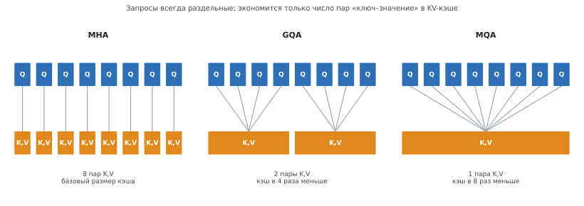
Синие блоки — запросы, они всегда остаются раздельными у каждой головы. Оранжевые — пары «ключ–значение», именно они лежат в KV-кэше. MHA хранит по паре на голову, MQA — одну на всех, GQA — по одной на группу голов, и число групп плавно регулирует размен между памятью и качеством. Крайние точки шкалы оказались неудачными с разных сторон. MHA не решает исходную задачу вообще, MQA решает её слишком грубо: отобрав у голов собственные ключи, мы отбираем у них и способность искать разное.
GQA попал в точку, потому что использует эмпирический факт: многие головы больших моделей и так выучивают близкие паттерны. Деление комплекта внутри группы убирает избыточность, а не полезное разнообразие.
Практический итог — $g = 8$ стало почти отраслевым значением: Llama 2/3, Mistral, Qwen2/3, Gemma.
Ось вторая: в каком виде хранить
Второй ответ принципиально другой: хранить столько же информации, но в сжатом виде.
MLA (Multi-head Latent Attention, DeepSeek-V2/V3) проецирует $K$ и $V$ в низкоразмерный латентный вектор — в кэше лежит только он, а полные ключи и значения восстанавливаются на лету при вычислении внимания.
Разница с первой осью существенная: там мы выбрасывали степени свободы (головы теряли собственные ключи), здесь мы их упаковываем. Поэтому MLA уходит от размена «память против качества»: заявленная экономия кэша превышает 90% при качестве не хуже MHA.
Идея сжатия и переиспользования развивается дальше. GTA (Grouped-Tied Attention) связывает ключи и значения общими весами, GLA (Grouped Latent Attention) переносит латентное сжатие в схему, удобную для tensor parallelism — распределения одного слоя между несколькими картами.
Это уже не «MHA минус что-то», а самостоятельные компоновки, у которых разные компромиссы по памяти, арифметической интенсивности и удобству параллелизма.
Схема Что хранится в кэше Экономия Цена Где встречается MHA $h$ пар $(K, V)$ — — GPT-2, BERT, Llama 1 MQA 1 пара в $h$ раз заметная просадка качества PaLM, Falcon, StarCoder GQA $g$ пар в $h/g$ раз практически нулевая Llama 2/3, Mistral, Qwen, Gemma MLA латентный вектор 90%+ сложнее реализация DeepSeek-V2/V3 GTA / GLA связанные / латентные представления сопоставима с MLA новизна, мало проверено на практике исследовательские работы Строки упорядочены по годам, и по таблице видно направление движения: от «храним всё» через «храним меньше» к «храним сжатое».
Выбор почти всегда делается не по максимальной экономии, а по трём ограничениям сразу.
Обучаете с нуля и нужен предсказуемый результат — GQA с $g = 8$: проверено десятками моделей, поддержано всеми инференс-движками, риска почти нет.
Есть готовая MHA-модель — тоже GQA: в неё можно конвертировать усреднением весов и коротким дообучением, не переобучая с нуля.
Пишете собственный движок и упираетесь именно в память кэша — MLA даёт больше всех, но требует аккуратной реализации: наивная, с разжатием в полные $K$ и $V$ на каждом шаге, съедает выигрыш обратно.
Все схемы выше уменьшают кэш на токен. Есть и ортогональный путь — уменьшать число токенов, которые вообще надо помнить: скользящее окно ограничивает видимую историю фиксированной длиной, а обучаемое разреженное внимание само выбирает, какие фрагменты контекста сохранить.
Эти подходы комбинируются с GQA и MLA, а не заменяют их: Mistral, например, использует и GQA, и скользящее окно одновременно.
- «GQA ускоряет обучение». Основной выигрыш — на инференсе: меньше памяти и меньше чтений из неё. При обучении KV-кэша нет вообще, а само обучение упирается в арифметику, а не в память.
- Путать число KV-групп с числом голов. В конфигурациях моделей это разные поля —
num_attention_headsиnum_key_value_heads. Их равенство означает MHA, значение 1 — MQA. - Считать, что MLA всегда лучше GQA. По памяти — да, но выигрыш достигается только при реализации, которая работает прямо со сжатым представлением. Без такой поддержки в движке MLA может оказаться медленнее GQA.
- Считать память только под веса модели. При длинных контекстах и больших батчах кэш — сопоставимая, а иногда и доминирующая статья расхода VRAM.
Какую общую задачу решают MQA, GQA, MLA, GTA и GLA?
Все они сокращают KV-кэш — память под ключи и значения уже обработанных токенов. Кэш растёт линейно по длине контекста и по размеру батча, поэтому на длинных диалогах и больших нагрузках именно он, а не веса модели, ограничивает число одновременно обслуживаемых запросов.
Чем различаются две основные оси в этом семействе?
Первая ось меняет количество хранимых пар ключ–значение: MHA хранит по паре на голову, GQA — по паре на группу голов, MQA — одну на всех. Вторая ось меняет форму хранения: MLA, GTA и GLA держат в кэше сжатое латентное представление, из которого полные ключи и значения восстанавливаются на лету.
Почему отраслевым стандартом стал именно GQA, а не MQA?
Потому что MQA отбирает у голов собственные ключи и значения целиком, и на больших моделях это заметно бьёт по качеству. GQA убирает только избыточность — головы внутри группы и так выучивают близкие паттерны, — и получает почти ту же экономию при почти нулевой потере. На практике остановились на восьми группах.
В чём принципиальное отличие MLA от GQA?
GQA работает разменом «память против качества»: чем меньше групп, тем меньше кэш и тем хуже качество. MLA этот размен снимает — информация не выбрасывается, а сжимается в латентный вектор, поэтому экономия свыше 90% достигается при качестве не хуже MHA. Плата переносится с качества на сложность реализации.
От чего зависит размер KV-кэша?
От числа слоёв, числа голов, размерности головы, длины контекста, размера батча и типа данных: $2 L h d_h n b \cdot \text{sizeof}$. Ключевое свойство — линейный рост по двум последним «пользовательским» параметрам, длине и батчу, тогда как веса модели от них не зависят вовсе.
Можно ли комбинировать эти схемы с ограничением контекста?
Да, это ортогональные оси. Схемы вроде GQA и MLA уменьшают стоимость одного токена в кэше, а скользящее окно и разреженное внимание уменьшают число хранимых токенов. Mistral, например, применяет GQA и sliding window одновременно.
-
Multi-Query Attention
Multi-Query Attention (MQA) — разновидность Multi-Head Attention, в которой у каждой головы внимания остаются свои матрицы запросов $Q$, но матрицы ключей $K$ и значений $V$ — одни и те же для всех голов.
Если совсем простыми словами: в обычном внимании каждая «голова» заводит себе собственный экземпляр картотеки (ключи + значения) и собственный список вопросов к ней. MQA говорит: картотека пусть будет одна на всех, а вопросы у каждого свои. Вопросы дешёвые — их не надо хранить между шагами генерации. Картотека дорогая — её приходится держать в памяти целиком, и именно её мы и экономим.
- $Q$ (query, запрос) — «что я сейчас ищу». Вычисляется для текущего токена.
- $K$ (key, ключ) — «чем является каждый прошлый токен»; по нему считается похожесть с запросом.
- $V$ (value, значение) — «что этот прошлый токен отдаёт в ответ», если он оказался релевантным.
Внимание = «сравнить $Q$ со всеми $K$, получить веса, сложить с этими весами все $V$». Голова внимания — один независимый экземпляр такой процедуры со своими проекциями.
Зачем это вообще нужно: KV-кэш
LLM генерирует текст авторегрессивно — по одному токену за шаг, и каждый новый токен должен «посмотреть» на все предыдущие. Пересчитывать $K$ и $V$ для всей предыстории на каждом шаге расточительно: они не меняются. Поэтому их считают один раз и складывают в KV-кэш (KV-cache) — буфер в памяти GPU.
Плата за это — память. KV-кэш растёт линейно по длине контекста, линейно по размеру батча и линейно по числу голов. Именно последний множитель MQA и убирает.
Возьмём модель уровня LLaMA-7B: 32 слоя, $h = 32$ головы, размер головы $d_h = 128$, веса в
fp16(2 байта на число).KV-кэш на один токен одного слоя в обычном MHA: $$ 2 \cdot h \cdot d_h \cdot 2\ \text{байта} = 2 \cdot 32 \cdot 128 \cdot 2 = 16\ \text{КБ} $$ (двойка спереди — потому что храним и $K$, и $V$).
На 32 слоя это 512 КБ на токен. Контекст 4096 токенов $\to$ 2 ГБ на одну последовательность. Батч из 32 запросов $\to$ 64 ГБ только под кэш. На A100 с 80 ГБ памяти для самой модели уже почти ничего не остаётся.
В MQA $K$ и $V$ хранятся в единственном экземпляре, то есть множитель $h = 32$ превращается в $1$: $$ 2 \cdot 1 \cdot 128 \cdot 2 = 512\ \text{байт на токен на слой} $$ На 32 слоя — 16 КБ на токен, контекст 4096 $\to$ 64 МБ на последовательность, батч 32 $\to$ 2 ГБ.
Было 64 ГБ, стало 2 ГБ — экономия ровно в 32 раза, во столько раз, сколько голов было в MHA.
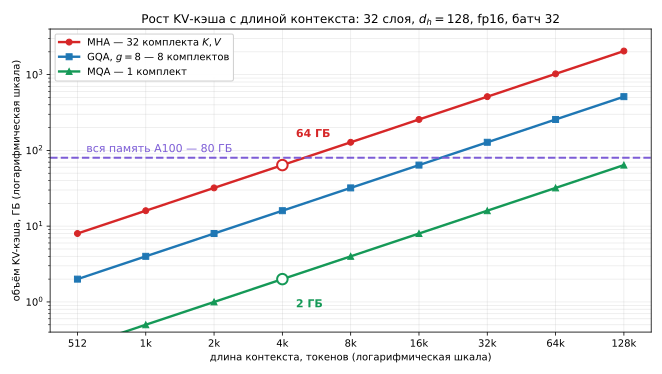
Обе шкалы логарифмические, поэтому три схемы дают три параллельные прямые: MQA не меняет наклон — кэш всё равно растёт линейно по длине контекста, — а только опускает прямую в 32 раза, GQA с восемью группами в 4 раза. Кружками обведены числа из примеров выше: при контексте 4k и батче 32 у MHA это 64 ГБ, у MQA — 2 ГБ. Красная прямая пересекает всю память A100 сразу за 4k токенов, синяя — около 20k, а зелёная и на 128k держится на 64 ГБ: MQA на контексте в 128 тысяч токенов стоит ровно столько же, сколько MHA на четырёх тысячах. Декодирование одного токена — операция, ограниченная пропускной способностью памяти (memory-bound), а не арифметикой. На каждый новый токен GPU обязана прочитать из HBM (High Bandwidth Memory — основная память видеокарты) весь KV-кэш целиком, а посчитать по нему нужно совсем немного.
Значит, время шага генерации определяется не числом операций, а числом прочитанных байт. Уменьшили кэш в 32 раза — во столько же раз сократили чтение — и получили ускорение декодирования, даже если количество арифметических операций осталось прежним.
Формальная запись
В классическом Multi-Head Attention каждая голова $i$ имеет три собственные проекции: $$ Q_i = X W_q^{(i)}, \quad K_i = X W_k^{(i)}, \quad V_i = X W_v^{(i)}, \quad i = 1 \ldots h $$
В Multi-Query Attention индекс головы остаётся только у запроса: $$ Q_i = X W_q^{(i)}, \quad K = X W_k, \quad V = X W_v $$
Сама формула внимания не меняется — меняется только то, что все головы подставляют в неё один и тот же $K$ и один и тот же $V$: $$ \mathrm{head}_i = \mathrm{softmax}\!\left(\frac{Q_i K^\top}{\sqrt{d_h}}\right) V $$
Головы не становятся одинаковыми. У каждой свой $W_q^{(i)}$, а значит, свой «угол зрения»: одна голова может искать подлежащее, другая — открывающую кавычку, третья — последнее упоминание сущности. Они просто ищут это в общей картотеке, а не каждая в своей копии.
Цена компромисса
Общие $K$ и $V$ означают, что все головы вынуждены описывать прошлые токены одним и тем же способом. Голове, которой удобнее было бы «видеть» токены в синтаксическом представлении, приходится довольствоваться тем же представлением, что и голове, следящей за темой текста.
Эмпирически это стоит небольшой, но заметной просадки качества (перплексии) и делает обучение чуть менее устойчивым. Поэтому чистый MQA сегодня почти вытеснен GQA — компромиссом, где $K,V$ общие не на всю модель, а внутри группы из нескольких голов.
Все три варианта — один и тот же механизм с разным числом «картотек» $g$:
Вариант Число комплектов $K,V$ KV-кэш Качество MHA $g = h$ (по одному на голову) максимальный эталон GQA $1 < g < h$ (по одному на группу) в $h/g$ раз меньше почти как MHA MQA $g = 1$ (один на всю модель) в $h$ раз меньше заметно ниже MQA — это не отдельная идея, а крайняя точка шкалы GQA при $g = 1$.
- «MQA ускоряет обучение» — почти нет. Обучение упирается в арифметику (compute-bound), а не в чтение памяти, и там весь батч обрабатывается параллельно, без кэша. MQA оптимизирует именно инференс.
- «MQA — это когда голов меньше» — нет. Голов ровно столько же, все $h$ запросов на месте. Урезается только количество хранимых комплектов $K$ и $V$.
- «Экономия видна на коротких промптах» — нет. При контексте в 100 токенов KV-кэш и так крошечный. Выигрыш появляется на длинных контекстах и больших батчах, где кэш становится узким местом.
- «MQA-модель можно получить из готовой MHA-модели, просто усреднив веса» — не бесплатно. Такое преобразование (uptraining) требует дообучения на нескольких процентах исходного корпуса, иначе качество проседает сильно.
MQA использовался в PaLM (Google), StarCoder (BigCode) и Falcon (TII) — моделях, для которых дешёвый инференс с длинным контекстом был приоритетом. В более поздних открытых моделях (LLaMA-2 70B, Mistral, Gemma) от чистого MQA отказались в пользу GQA как более безопасного компромисса.
- Эволюция схем внимания под давлением KV-кэша — MQA как крайняя точка шкалы и почему на практике остановились на компромиссе.
- PaLM и Falcon — модели, выбравшие именно MQA, и цена этого выбора по качеству.
Что такое Multi-Query Attention (MQA)?
MQA — разновидность Multi-Head Attention, где каждая голова использует собственный $Q$, но одни и те же матрицы $K$ и $V$ для всех голов. Это уменьшает потребление памяти KV-кэшем и ускоряет инференс, сохраняя разнообразие «взглядов» на контекст со стороны запросов.
Почему MQA экономит память при авторегрессивной генерации?
При генерации токен за токеном нужно кэшировать $K$ и $V$ для всех предыдущих позиций. В стандартном MHA KV-кэш масштабируется как $O(h \cdot L)$ (по числу голов $h$ и длине $L$), в MQA — как $O(1 \cdot L)$: один комплект $K, V$ на всю последовательность. При 32 головах это экономия ровно в 32 раза.
Почему сокращение KV-кэша даёт не только память, но и скорость?
Декодирование одного токена ограничено пропускной способностью памяти: на каждый шаг GPU читает весь KV-кэш из HBM, а вычислений делает мало. Время шага определяется числом прочитанных байт, поэтому уменьшение кэша напрямую сокращает задержку.
Чем MQA отличается от GQA?
MQA — крайний случай: одна пара $K,V$ на все $h$ голов (одна группа). GQA — более гибкий вариант с $g$ группами ($1 \le g \le h$): в каждой группе свои $K,V$. GQA даёт больше выразительности при экономии памяти меньшей, чем в MQA, но большей, чем в MHA.
Какой ценой MQA достигает экономии памяти?
Потерей разнообразия ключей и значений: все головы вынуждены описывать прошлые токены одним и тем же способом, что ограничивает способность модели одновременно фокусироваться на разных аспектах контекста. На практике это стоит небольшой просадки перплексии, которую GQA смягчает.
В каких сценариях MQA/GQA особенно важны?
При инференсе с длинными контекстами и большими батчами, где KV-кэш становится узким местом по памяти GPU. Особенно критично для промышленного развёртывания больших моделей с ограниченным объёмом VRAM — там кэш может занимать десятки гигабайт и вытеснять саму модель.
-
Grouped-Query Attention
Grouped-Query Attention (GQA) — компромиссный вариант между Multi-Head Attention и Multi-Query Attention. Все головы внимания делятся на группы: внутри группы у всех голов общие ключи $K$ и значения $V$, но у каждой головы остаются свои запросы $Q$.
Если совсем простыми словами: MHA даёт каждому сотруднику по личной картотеке (дорого), MQA оставляет одну картотеку на весь офис (дёшево, но все вынуждены пользоваться одним каталогом). GQA говорит: пусть картотека будет одна на отдел. Восемь отделов вместо тридцати двух личных копий — памяти в четыре раза меньше, а свобода почти не пострадала.
GQA не является отдельной архитектурой — это семейство с одним числом $g$ (количество групп):
- $g = h$ (групп столько же, сколько голов) $\to$ каждая голова со своими $K,V$ $\to$ это MHA;
- $g = 1$ (одна группа на всё) $\to$ один комплект $K,V$ $\to$ это MQA;
- $1 < g < h$ $\to$ собственно GQA.
Поэтому вопрос «MHA или MQA?» на самом деле является вопросом «какое $g$ выбрать?».
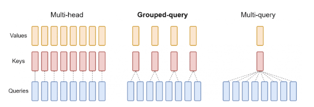
Синие прямоугольники — головы запросов (их везде 8), красные и жёлтые — ключи и значения, которые и занимают KV-кэш. Слева MHA: 8 комплектов $K,V$, по одному на голову. Справа MQA: один комплект на все 8 голов. В центре GQA: 4 группы по две головы, то есть 4 комплекта — вдвое меньше памяти, чем в MHA, и вчетверо больше разнообразия, чем в MQA. Сколько красно-жёлтых столбиков на картинке, столько раз KV-кэш и умножается. Формальная запись
Пусть $h$ — число голов внимания, $g$ — число групп, $h$ делится на $g$ нацело. Голова с номером $i$ попадает в группу $$ \mathrm{grp}(i) = \left\lceil \frac{i \cdot g}{h} \right\rceil. $$
Запросы остаются индивидуальными, ключи и значения — групповыми: $$ Q_i = X W_q^{(i)}, \quad i = 1 \ldots h; \qquad K_j = X W_k^{(j)}, \quad V_j = X W_v^{(j)}, \quad j = 1 \ldots g $$
Выход головы $i$ считается с ключами и значениями её группы: $$ \mathrm{head}_i = \mathrm{softmax}\!\left(\frac{Q_i K_{\mathrm{grp}(i)}^\top}{\sqrt{d_h}}\right) V_{\mathrm{grp}(i)} $$
- $X$ — матрица скрытых состояний токенов на входе слоя.
- $W_q^{(i)}, W_k^{(j)}, W_v^{(j)}$ — обучаемые матрицы проекций; их всего $h + 2g$ штук, а не $3h$, как в MHA.
- $d_h$ — размерность одной головы; деление на $\sqrt{d_h}$ — стандартная нормировка, чтобы логиты не разъезжались при большой размерности.
- $\mathrm{grp}(i)$ — просто «номер отдела», к которому приписана голова $i$.
Обратите внимание: вся структура вычислений внимания остаётся прежней. Меняется только то, откуда голова берёт $K$ и $V$.
Сколько памяти это экономит
32 слоя, $h = 32$ головы, $d_h = 128$,
fp16(2 байта), контекст 4096 токенов, батч 32.KV-кэш на токен на слой равен $2 \cdot g \cdot d_h \cdot 2$ байта, то есть зависит только от числа групп:
Вариант $g$ На токен (32 слоя) Батч 32, контекст 4096 MHA 32 512 КБ 64 ГБ GQA 8 128 КБ 16 ГБ GQA 4 64 КБ 8 ГБ MQA 1 16 КБ 2 ГБ Практический вывод: переход с MHA на GQA с восемью группами убирает 48 ГБ из 64 — то есть освобождает больше памяти, чем занимает сама модель в
fp16(14 ГБ).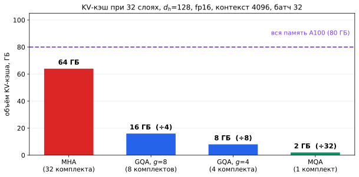
Объём KV-кэша для одной и той же модели при разном числе комплектов $K,V$. Главное, что видно: столбик MHA не помещается на карту вместе с моделью — 64 ГБ кэша при 80 ГБ всей памяти A100 и 14 ГБ на сами веса. Уже восьми групп достаточно, чтобы кэш перестал быть узким местом (16 ГБ), а дальнейшее сокращение до одной группы экономит ещё 14 ГБ, но платится заметной потерей качества. Именно поэтому индустрия остановилась на $g = 8$: столбик уже низкий, а качество ещё на месте. Эмпирическое наблюдение авторов GQA (Ainslie et al., 2023): качество деградирует не линейно по $g$. Переход от $g = h$ к $g = 8$ почти не меняет перплексию, а вот дальнейшее падение до $g = 1$ обходится существенно дороже.
Интуиция: восьми разных «взглядов» на прошлые токены уже достаточно, чтобы покрыть основные роли (синтаксис, кореференция, тема, позиция), а лишние 24 комплекта — избыточность. Отсюда и типичная конфигурация современных моделей: 32 головы запросов, 8 групп KV.
При распределении модели по нескольким GPU головы делят между устройствами. С $g = 8$ и восемью GPU каждое устройство получает ровно одну группу и хранит только свой комплект $K,V$ — кэш делится между картами без дублирования.
С $g = 1$ (MQA) единственный комплект $K,V$ нужен всем устройствам сразу, поэтому его приходится дублировать на каждой карте. Это ещё одна причина, по которой GQA практичнее MQA в промышленном инференсе.
Как получают GQA-модель
GQA-модель можно обучить с нуля, но чаще её получают из уже готовой MHA-модели процедурой uptraining:
- Головы разбивают на $g$ групп подряд идущих голов.
- Внутри группы веса $W_k^{(i)}$ всех голов усредняют (mean pooling), получая один $W_k^{(j)}$; то же для $W_v$.
- Полученную модель дообучают на небольшой доле исходного корпуса — обычно около 5%.
Авторы показывают, что этого хватает, чтобы вернуть качество почти к уровню исходного MHA, — переучивать модель с нуля не требуется.
- «GQA уменьшает число голов внимания» — нет. Голов запросов ровно $h$, как и было. Сокращается только количество независимых комплектов $K,V$.
- «GQA ускоряет обучение» — почти нет: обучение упирается в арифметику, а не в чтение KV-кэша (кэша при обучении вообще нет). Выигрыш проявляется на инференсе.
- «$g$ можно взять любым» — на практике $h$ должно делиться на $g$ нацело, иначе группы получаются неравными и реализация усложняется.
- «Просто усреднить веса MHA и получить GQA» — усреднение без последующего дообучения даёт заметную просадку качества. Uptraining обязателен.
GQA сегодня — фактический стандарт открытых LLM: LLaMA-2 70B и все LLaMA-3, Mistral 7B, Mixtral, Gemma, Qwen2. Типичная конфигурация — 32 головы запросов и 8 KV-групп, то есть четырёхкратное сокращение KV-кэша практически без потери качества.
- Эволюция схем внимания под давлением KV-кэша — вся линейка MHA, MQA, GQA, MLA, GTA и GLA на одной сводной карте.
- Mistral 7B — 32 головы на 8 KV-групп в рабочей конфигурации.
- Llama — как GQA появился в 70B во второй версии и разошёлся на все размеры в третьей.
Что такое Grouped-Query Attention (GQA) и зачем он нужен?
GQA — компромисс между Multi-Head Attention и Multi-Query Attention: головы разбиваются на группы, внутри которых $K$ и $V$ общие, но $Q$ у каждой головы свой. Это сокращает KV-кэш и ускоряет инференс при меньшей потере качества, чем MQA.
Как GQA соотносится с MHA и MQA?
При числе групп $g = h$ (число голов) GQA вырождается в MHA. При $g = 1$ — в MQA (одна пара $K,V$ на все головы). GQA занимает промежуточное положение при $1 < g < h$, то есть все три варианта — точки на одной шкале.
Почему общие $K$ и $V$ в группе экономят память при инференсе?
Во время авторегрессивной генерации KV-кэш хранит ключи и значения для всех предыдущих токенов. При MHA кэш растёт как $O(h \cdot L)$, при GQA — как $O(g \cdot L)$, что при $g \ll h$ существенно снижает потребление памяти: например, при $h=32$ и $g=8$ — вчетверо.
Сохраняется ли разнообразие представлений при совместном использовании $K, V$?
Частично. Каждая голова внутри группы имеет свой $Q_i$, что обеспечивает разные «взгляды» на входные данные. Однако использование одного $K,V$ на группу ограничивает разнообразие относительно полного MHA. Эмпирически при $g = 8$ потеря качества минимальна.
Как из готовой MHA-модели получают GQA-модель?
Процедурой uptraining: веса $W_k$ и $W_v$ внутри каждой группы усредняются, после чего модель дообучается примерно на 5% исходного корпуса. Обучать с нуля не требуется.
Почему GQA удобнее MQA при распределении модели по нескольким GPU?
При tensor parallelism головы раскладываются по устройствам. В GQA каждое устройство хранит только KV своей группы, а в MQA единственный комплект $K,V$ нужен всем картам сразу и потому дублируется, что съедает часть экономии памяти.
В каких известных моделях применяется GQA?
LLaMA-2 70B, все версии LLaMA-3, Mistral 7B, Mixtral, Gemma, Qwen2 — GQA стал фактическим стандартом открытых LLM как баланс между качеством и эффективностью инференса.
-
Multi-head Latent Attention
Чтобы понять, зачем MLA уменьшает KV-cache и требования к пропускной способности памяти, полезно сначала знать, как KV-cache устроен при авторегрессивной генерации. Подробно он разбирается в разделе NLP Optimization: KV-cache, а сжатая версия — в вопросе про Multi-Query Attention.
Multi-head Latent Attention (MLA) — вариант механизма внимания, в котором модель не хранит полный KV-cache. Вместо ключей и значений в кэш кладётся одно компактное обучаемое скрытое представление, а нужные проекции либо восстанавливаются из него, либо алгебраически «поглощаются» в матрицы запроса и выхода.
Формально: вместо хранения $$ K_t, V_t \in \mathbb{R}^{n_h \times d_h} $$ для каждого токена $t$ модель хранит вектор $$ c_t^{KV} \in \mathbb{R}^{d_c}, \qquad d_c \ll 2\,n_h d_h $$
MQA и GQA экономят кэш грубой силой: заставляют головы пользоваться общими $K$ и $V$. Это работает, но выбор «сколько групп оставить» делает человек, а не модель.
MLA действует иначе: она предполагает, что в полном наборе $K,V$ много избыточности, и обучает модель самой решать, что из этой информации сохранить. Вместо «выбросим 24 комплекта из 32» получается «сожмём все 32 в одно плотное представление на 512 чисел, а модель научится восстанавливать из него то, что нужно каждой голове».
Аналогия: GQA — это когда семь человек читают одну газету по очереди. MLA — это когда один человек конспектирует газету, а остальные работают с конспектом, причём конспектировать он учился специально под их задачи.
Место в линейке
- MHA — отдельные $K,V$ для каждой головы. Максимум выразительности, максимум памяти.
- MQA — одна пара $K,V$ на все головы. Минимум памяти, заметная потеря качества.
- GQA — одна пара $K,V$ на группу голов. Компромисс, выбранный вручную.
- MLA — не готовые $K,V$, а сжатое скрытое представление, из которого нужное получается обучаемыми проекциями. Компромисс, найденный обучением.
Первые три отличаются только числом групп. MLA меняет сам характер того, что лежит в кэше.
Слово «низкоранговое» (low-rank) означает следующее. Матрицу размера $n \times m$ и ранга $r$ можно представить произведением двух узких матриц: $n \times r$ и $r \times m$. Если $r$ мало, то вместо $nm$ чисел достаточно $r(n+m)$ — иногда в десятки раз меньше.
Работает это тогда, когда данные действительно лежат в узком подпространстве: строки матрицы не независимы, а являются комбинациями небольшого числа базовых направлений. Именно это эмпирически верно для KV-кэша трансформера: ключи разных голов сильно скоррелированы, и их разброс сосредоточен в подпространстве куда меньшей размерности, чем полный набор $2 n_h d_h$.
MLA берёт эту идею и встраивает в обучение: сжимающая проекция и обратные проекции — обучаемые матрицы, а не результат разложения постфактум.
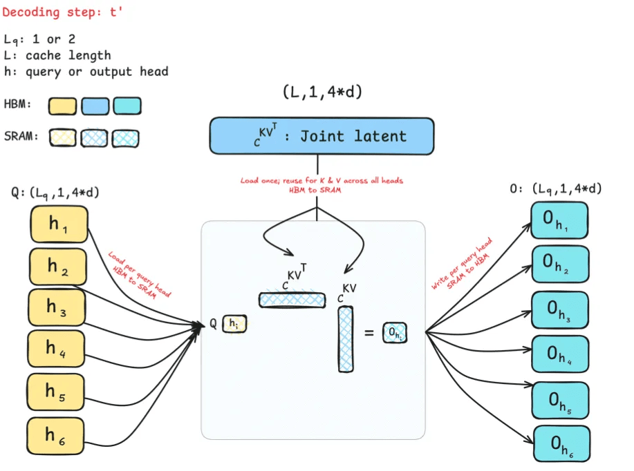
В MLA ключи $K$ и значения $V$ сжимаются в общее скрытое пространство, которое переиспользуется всеми головами: в кэше вместо десятков комплектов $K,V$ лежит один вектор $c^{KV}$. Это резко уменьшает размер KV-cache, но создаёт проблему масштабирования: скрытое представление приходится целиком держать на каждой GPU, поэтому его сложно эффективно разделять между устройствами при распределённом инференсе. Именно эту оставшуюся проблему решает GLA. Как это устроено
$$ c_t^{KV} = h_t W^{DKV} $$ где $h_t$ — скрытое состояние токена $t$ на входе слоя, $W^{DKV}$ — обучаемая матрица down-projection (сжимающей проекции). Именно $c_t^{KV}$ и попадает в кэш.
Полные ключи и значения можно было бы получить обратными проекциями: $$ k_t = c_t^{KV} W^{UK}, \qquad v_t = c_t^{KV} W^{UV} $$ где $W^{UK}, W^{UV}$ — матрицы up-projection.
Но во время декодирования делать это явно не требуется — и в этом главный технический трюк MLA.
Логит внимания между запросом $q_s$ и ключом $k_t$ равен $$ q_s k_t^\top = q_s \left(c_t^{KV} W^{UK}\right)^\top = \underbrace{\left(q_s (W^{UK})^\top\right)}_{\text{назовём } \tilde q_s} \cdot \left(c_t^{KV}\right)^\top $$
Смотрите, что произошло: матрица $W^{UK}$ переехала на сторону запроса. А запрос вычисляется один раз для текущего токена, тогда как ключей в кэше тысячи. Значит, вместо того чтобы разворачивать каждый из тысяч сжатых векторов в полный ключ, достаточно один раз преобразовать единственный запрос и дальше скалярно умножать его прямо на сжатые представления.
Более того, $W^{UK}$ — фиксированная матрица весов, поэтому её можно заранее перемножить с матрицей проекции запроса $W^{Q}$: получится один слитый вес, и никакого дополнительного умножения при инференсе вообще не будет. Это и называется поглощением весов (weight absorption).
Выход головы — взвешенная сумма значений, которая затем умножается на выходную матрицу $W^{O}$: $$ \left(\sum_t a_t v_t\right) W^{O} = \left(\sum_t a_t\, c_t^{KV} W^{UV}\right) W^{O} = \left(\sum_t a_t\, c_t^{KV}\right) \underbrace{W^{UV} W^{O}}_{\text{можно перемножить заранее}} $$
Взвешенную сумму берём прямо по сжатым векторам, а произведение $W^{UV}W^{O}$ считаем один раз при загрузке модели. Полные $v_t$ снова не нужны.
Итог: при декодировании MLA работает с кэшем напрямую, ни разу не материализуя полные $K$ и $V$.
Почему это выгодно на железе
- При декодировании на каждый новый токен нужно прочитать KV-cache всех предыдущих токенов.
- Для длинного контекста и большого батча задача упирается в чтение из HBM (High Bandwidth Memory — основная память GPU), а не в число операций.
- MLA читает из HBM в десятки раз меньше байт, потому что вместо полного кэша читает компактное представление.
- Дополнительные проекции требуют вычислений, но на современных GPU свободных FLOPs обычно больше, чем свободной пропускной способности памяти.
Вычислительная плотность (arithmetic intensity) — это отношение «сколько операций сделано» к «сколько байт прочитано из памяти». У современных GPU счётный блок способен выполнить сотни операций за то время, пока из HBM приезжает один байт.
Обычное декодирование трансформера имеет катастрофически низкую плотность: прочитали огромный кэш, сделали по нему пару скалярных произведений, счётные блоки простаивали. Любая перестройка, которая сокращает чтение ценой лишней арифметики, здесь выгодна почти автоматически — мы платим ресурсом, которого в избытке, за ресурс, которого не хватает.
Именно из этого соображения выросли MLA, GTA и GLA. Это не «математические» оптимизации, а оптимизации под конкретную форму железа.
Возьмём конфигурацию DeepSeek-V2: 60 слоёв, $n_h = 128$ голов, $d_h = 128$, размер скрытого представления $d_c = 512$ плюс отдельная RoPE-часть на 64 числа.
- Гипотетический MHA: $2 \cdot 128 \cdot 128 = 32\,768$ чисел на токен на слой.
- MLA: $512 + 64 = 576$ чисел на токен на слой.
Отношение — примерно 57 раз. В аннотации статьи авторы приводят сравнение с реальной предыдущей моделью DeepSeek 67B: сокращение KV-cache на 93.3% и рост максимальной пропускной способности генерации в 5.76 раза.
Проблема с RoPE
RoPE (rotary positional embeddings) поворачивает векторы $q$ и $k$ на угол, зависящий от позиции. Логит внимания при этом принимает вид $$ (q_s R_s)(k_t R_t)^\top = q_s R_{s-t} k_t^\top $$ где $R_{s-t}$ — матрица поворота, зависящая от разности позиций.
Подставим сюда сжатый ключ $k_t = c_t^{KV} W^{UK}$: матрица $R_{s-t}$ оказывается зажата между запросом и $W^{UK}$. А заранее поглотить в фиксированные веса можно только фиксированную матрицу — здесь же она своя для каждой пары позиций. Поглощение весов ломается, и приходится честно разворачивать каждый сжатый вектор в полный ключ, теряя весь выигрыш.
DeepSeek-V2 разделяет ключ на две независимые части:
- содержательная часть — приходит из сжатого представления $c_t^{KV}$ и не вращается RoPE;
- позиционная часть — небольшой отдельный вектор (в DeepSeek-V2 это 64 числа), к которому RoPE применяется обычным образом.
Логит внимания складывается из двух слагаемых: содержательного (где поглощение весов работает) и позиционного (где вращение честно применяется к маленькому вектору). Кэшируются обе части.
Поэтому «MLA cache» на практике — это не только $c_t^{KV}$, а $c_t^{KV}$ плюс небольшой позиционный компонент. В приведённом выше расчёте это те самые $+64$ числа к $512$.
Механизм внимания Что кэшируется Интуиция MHA $K,V$ для каждой головы максимум выразительности, максимум памяти MQA одна пара $K,V$ минимум памяти, сильная потеря разнообразия GQA $K,V$ на группу голов компромисс, заданный вручную MLA сжатое $c^{KV}$ + RoPE-часть компромисс, найденный обучением - «MLA — это GQA с очень маленьким числом групп» — нет. В GQA кэшируются настоящие $K,V$, просто их мало. В MLA кэшируется представление, из которого $K,V$ выводятся обучаемыми проекциями; это принципиально иной объект.
- «MLA — это квантизация кэша» — нет. Квантизация уменьшает число бит на элемент, не меняя их количества. MLA уменьшает само количество элементов, а квантизацию можно применить сверху.
- «Сжатие обязательно теряет качество» — авторы сообщают о качестве не хуже MHA при кратно меньшем кэше. Это возможно потому, что сжимающие и восстанавливающие проекции обучаются вместе со всей моделью, а не подгоняются к готовым весам.
- «Раз $K$ и $V$ не восстанавливаются, значит, их вообще нет» — они есть математически, просто никогда не вычисляются явно во время декодирования. При обучении (где обрабатывается весь батч сразу и кэша нет) их обычно как раз материализуют.
- «Достаточно скопировать формулы из статьи» — практическая реализация MLA требует специализированных ядер (FlashMLA и аналоги). Без них лишние операции изменения формы тензоров съедают заметную часть выигрыша.
- DeepSeek-V2 представил MLA как одну из двух ключевых архитектурных идей (вторая — DeepSeekMoE).
- DeepSeek-V3 / R1 и стек инференса вокруг них популяризировали практическую сторону MLA.
- Во фреймворках инференса вроде SGLang и vLLM обсуждаются детали эффективного MLA, включая weight absorption и специализированные ядра.
Полезные материалы: DeepSeek-V2 paper, Hugging Face DeepSeek-V2 overview, Verda / DataCrunch, разбор Chris McCormick.
- DeepSeek — MLA в модели на 671 млрд параметров: экономия кэша свыше 90% без потери качества.
- Эволюция схем внимания под давлением KV-кэша — чем сжатие в латентный вектор принципиально отличается от сокращения числа пар в GQA.
Какую проблему решает Multi-head Latent Attention?
MLA уменьшает размер KV-cache и объём чтения из памяти при авторегрессивном декодировании. Вместо полных $K,V$ для всех голов она хранит компактное скрытое представление $c^{KV}$, из которого нужная информация получается обучаемыми проекциями.
Что означает «низкоранговое сжатие» и почему оно здесь работает?
Матрицу ранга $r$ можно представить произведением двух узких матриц, храня $r(n+m)$ чисел вместо $nm$. Для KV-кэша это оправдано эмпирически: ключи и значения разных голов сильно скоррелированы, и их разброс сосредоточен в подпространстве существенно меньшей размерности.
Чем MLA отличается от GQA?
GQA жёстко делит головы на группы и хранит настоящие общие $K,V$ на группу; выбор числа групп делает человек. MLA хранит обучаемое сжатое представление, из которого $K,V$ выводятся проекциями, — что именно сохранять, решает обучение.
Что такое weight absorption в MLA?
Алгебраический приём: матрица обратной проекции ключей переносится на сторону запроса ($q W^{UK\top}$ вместо $c W^{UK}$), а обратная проекция значений сливается с выходной матрицей ($W^{UV}W^{O}$). Обе фиксированные матрицы перемножаются заранее, поэтому при декодировании полные $K,V$ не создаются вообще.
Почему MLA может быть быстрее, хотя добавляет проекции?
Декодирование ограничено пропускной способностью памяти: на каждый токен читается весь KV-cache из HBM, а арифметики делается мало. MLA сокращает объём чтения в десятки раз и платит за это лишними вычислениями — ресурсом, которого на GPU в избытке. Это и означает «повысить вычислительную плотность».
Почему RoPE в MLA приходится делать decoupled?
RoPE вносит матрицу поворота, зависящую от разности позиций, между запросом и матрицей обратной проекции ключей. Заранее поглотить можно только фиксированную матрицу, поэтому поглощение весов ломается. Решение — вынести позиционную информацию в отдельную небольшую часть ключа, которая вращается отдельно и кэшируется рядом со сжатым представлением.
Насколько велик выигрыш на практике?
Для конфигурации DeepSeek-V2 сжатое представление занимает 576 чисел на токен на слой против ~32 700 у гипотетического MHA. В аннотации статьи заявлено сокращение KV-cache на 93.3% и рост максимальной пропускной способности генерации в 5.76 раза относительно DeepSeek 67B.
Какое ограничение остаётся у MLA?
Одно общее скрытое представление плохо делится между GPU при tensor parallelism: каждому устройству нужен весь вектор целиком, поэтому кэш дублируется. Именно эту проблему адресует GLA, разбивающая представление на групповые части.
-
Grouped-Tied Attention
Чтобы понять, зачем GTA уменьшает KV-cache и объём чтения из памяти при декодировании, полезно сначала разобраться с Grouped-Query Attention и с устройством KV-cache — подробно он разбирается в разделе NLP Optimization: KV-cache.
Grouped-Tied Attention (GTA) — вариант GQA, спроектированный с оглядкой на эффективность исполнения на GPU. Он связывает ключи и значения внутри каждой группы: вместо двух отдельных кэшируемых состояний $K_g$ и $V_g$ модель хранит одно связанное KV-состояние, которое используется и как значение, и как часть ключа.
Цель — сохранить качество уровня GQA, но примерно вдвое сократить KV-cache и объём чтения из памяти при декодировании.
GQA уже сказал: «пусть головы внутри группы пользуются общими ключами и значениями». GTA делает следующий шаг и замечает, что сами ключ и значение внутри группы тоже во многом дублируют друг друга: и то и другое — линейные проекции одного и того же скрытого состояния токена, и обе описывают «что это был за токен», просто с разных сторон.
Поэтому GTA хранит один вектор на группу и использует его дважды: целиком — как значение, наполовину — как содержательную часть ключа. Читать из памяти вместо двух строк кэша приходится одну.
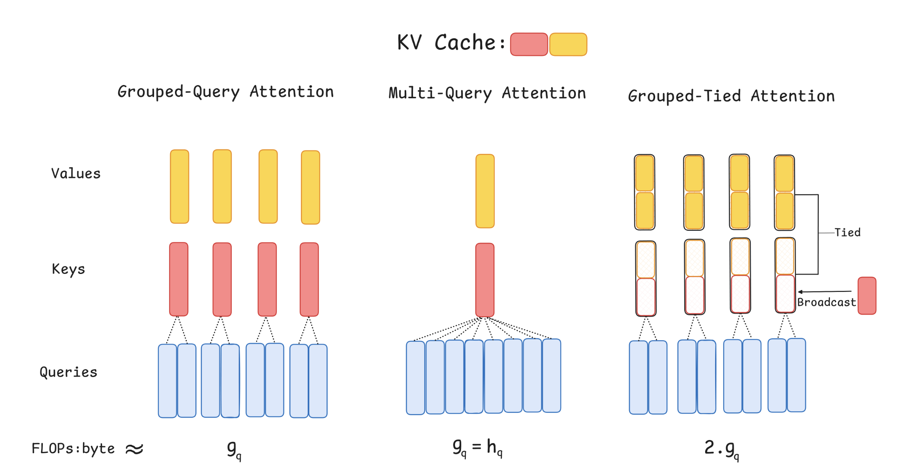
Схема GTA: одна проекция создаёт связанное KV-состояние, которое используется и как ключ, и как значение. Полная размерность этого состояния идёт в значение. Для ключа половина размерности берётся из связанного вектора без позиционного кодирования, а вторая половина получается отдельной проекцией с одной головой и RoPE; эта RoPE-часть распространяется на все головы группы и объединяется со связанной KV-половиной. Обратите внимание на то, сколько прямоугольников надо прочитать из кэша: в GQA их два на группу, в GTA — один плюс маленький общий позиционный кусок. Что именно меняется относительно GQA
- головы запросов делятся на группы;
- внутри каждой группы несколько голов используют одну общую голову ключей и одну общую голову значений;
- кэш на группу всё ещё содержит два состояния: $K_g$ и $V_g$.
- одна проекция создаёт связанный вектор $z_g$ — единственное кэшируемое состояние группы;
- полный $z_g$ используется как значение, без RoPE;
- ключ собирается из двух частей: невращаемой половины $z_g$ и отдельной небольшой RoPE-части, общей для всех групп.
Одной фразой: GQA говорит «разделим $K,V$ между головами группы», а GTA добавляет — «а ещё свяжем $K$ и $V$ между собой, чтобы не читать две строки кэша там, где хватает одной».
$$ z_{t,g} = h_t W_g^{KV} $$ где $z_{t,g}$ — связанное KV-состояние группы $g$ для токена $t$, а $h_t$ — скрытое состояние токена.
Значение берёт его целиком и без позиционного вращения: $$ v_{t,g} = z_{t,g} $$
Ключ составляется из двух частей: $$ k_{t,g} = \mathrm{concat}\left( z_{t,g}^{(1/2)},\ \mathrm{RoPE}(r_t) \right) $$ где $z_{t,g}^{(1/2)}$ — первая, не вращаемая половина связанного вектора, а $r_t$ — отдельная проекция с одной головой, к которой применяется RoPE и которая затем распространяется на все группы.
Важная деталь из статьи: RoPE к общей связанной части не применяется. Авторы сообщают, что попытка вращать её ухудшает качество — даже если потом пытаться «отменить» вращение на пути значений обратным поворотом.
Интуиция: значению позиция не нужна. Значение отвечает на вопрос «что этот токен отдаёт в ответ», и содержимое ответа не должно зависеть от того, на каком месте токен стоял. Позиция нужна только при сравнении запроса с ключом. Смешивать позиционную информацию в общий вектор — значит портить путь значений ради пути ключей.
Почему это вообще работает
- Кэш ключей избыточен. Значимая часть разброса ключей лежит в низкоразмерном подпространстве — то же наблюдение, из которого выросла MLA.
- RoPE не нужен всем каналам. Позиционная информация прекрасно живёт в отдельном небольшом срезе размерности головы; вращать все каналы необязательно (эта идея встречалась и раньше — в partial RoPE).
- Пути ключей и значений могут делить состояние. Обе проекции берутся из одного $h_t$ и потому сильно скоррелированы; хранить их независимо — расточительство.
Сложив три наблюдения, получаем GTA: оставить группировку уровня GQA, но убрать дублирование «отдельный ключ + отдельное значение» внутри группы.
Механизм Что хранится в KV-cache группы RoPE Эффект GQA $K_g$ и $V_g$ — два полных состояния применяется к ключу стандартный компромисс качества и памяти GTA связанный $z_g$ + маленькая общая RoPE-часть только в отдельной части ключа вдвое меньше кэша и чтения из памяти При одинаковом числе групп GTA примерно вдвое уменьшает KV-cache относительно GQA, во столько же раз снижает объём чтения при декодировании и примерно вдвое повышает вычислительную плотность.
Вычислительная плотность (arithmetic intensity) — число операций, приходящихся на один прочитанный из памяти байт. Декодирование трансформера страдает от её нехватки: GPU успевает посчитать намного больше, чем память успевает подвезти.
В GTA объём арифметики внимания остаётся прежним — головы по-прежнему считают те же скалярные произведения. А байт читается вдвое меньше, потому что одно состояние обслуживает и роль ключа, и роль значения. Отношение «операции / байты» удваивается, и узкое место расширяется ровно в тех задачах, где оно и было узким: длинный контекст, большой батч, авторегрессивная генерация.
Три метода решают одну проблему разными инструментами:
- GQA сокращает количество кэшируемых комплектов $K,V$ (меньше групп);
- MLA сокращает размерность кэшируемого объекта (низкоранговое сжатие);
- GTA сокращает число ролей, под которые заведены отдельные состояния (одно состояние вместо ключа и значения).
Это ортогональные направления, и они в принципе комбинируемы.
- «GTA — готовая замена GQA в любой модели» — нет. Это более свежая и менее широко проверенная идея; её испытывали на ограниченном числе конфигураций, и переносимость на очень большие модели ещё предстоит подтвердить.
- «Выигрыш будет всегда» — только если декодирование действительно упирается в чтение из памяти. При коротких контекстах, маленьких батчах или compute-bound режимах эффект близок к нулю.
- «Достаточно поменять слой внимания» — без специализированных ядер инференса часть теоретического выигрыша уходит на лишние операции изменения формы, проекции и конкатенации тензоров.
- «Связывание $K$ и $V$ — это просто $K = V$» — нет. Значение берёт вектор целиком, ключ — только половину и вдобавок дополняется отдельной RoPE-частью. Роли остаются разными, общим является лишь хранимое состояние.
Основная работа — Hardware-Efficient Attention for Fast Decoding, где GTA вводится как простой способ поднять вычислительную плотность без потери качества уровня GQA. Авторы показывают, что GTA сохраняет качество GQA при примерно вдвое меньшем KV-cache.
Краткий обзор с теми же акцентами есть на Emergent Mind: там GTA описывается как единое представление ключей и значений, общее для голов запросов внутри группы.
Что такое Grouped-Tied Attention?
Вариант GQA, где внутри каждой группы ключ и значение связываются в одно кэшируемое KV-состояние. Это состояние целиком используется как значение и наполовину — как содержательная часть ключа, к которой добавляется отдельная небольшая RoPE-часть.
Чем GTA отличается от GQA?
В GQA на группу кэшируются два отдельных состояния, $K_g$ и $V_g$. В GTA кэшируется один связанный вектор $z_g$ плюс маленькая общая RoPE-часть ключа. Поэтому и объём кэша, и объём чтения из памяти примерно вдвое меньше при том же числе групп.
Как в GTA формируется ключ?
Конкатенацией двух частей: невращаемой половины связанного вектора $z_g$ и отдельной RoPE-проекции с одной головой, которая распространяется на все группы. Сама связанная часть RoPE не вращается.
Почему связанную часть нельзя вращать RoPE?
Она используется и как значение, а значению позиционная информация не нужна: содержание ответа токена не должно зависеть от его места в тексте. Авторы сообщают, что вращение общей части ухудшает качество даже при попытке инвертировать поворот на пути значений.
Почему GTA примерно вдвое уменьшает KV-cache относительно GQA?
Потому что вместо двух кэшируемых состояний на группу (ключа и значения) хранится одно связанное, переиспользуемое в обеих ролях. Отдельная RoPE-часть намного меньше полного второго состояния и общая для групп.
Что означает «удваивает вычислительную плотность»?
При декодировании GPU выполняет прежний объём арифметики внимания, но читает вдвое меньше байт из HBM. Отношение «операции на прочитанный байт» растёт примерно вдвое, что расширяет узкое место memory-bound декодирования.
Чем GTA отличается от MLA по идее?
MLA сокращает размерность кэшируемого объекта низкоранговым сжатием, GQA сокращает количество комплектов $K,V$, а GTA сокращает число ролей, под которые заведены отдельные состояния. Это ортогональные приёмы.
Какой главный риск у GTA?
Это новая архитектура, спроектированная под конкретный режим исполнения. Ей нужна аккуратная реализация со специализированными ядрами и дополнительная проверка качества; там, где декодирование не ограничено чтением из памяти, выигрыш может оказаться заметно меньше ожидаемого.
-
Grouped Latent Attention
GLA — прямое продолжение MLA, и без неё вопрос не читается. Про устройство KV-cache при авторегрессивной генерации см. NLP Optimization: KV-cache.
Grouped Latent Attention (GLA) — вариант внимания со скрытым представлением, который сохраняет идею MLA о сжатом KV-cache, но делает её удобной для распределённого инференса.
MLA хранит одно общее скрытое представление, которое трудно эффективно разделить между устройствами. GLA делит это представление на группы: каждая группа голов запросов работает со своей частью. В результате KV-cache естественно распределяется по GPU — каждое устройство хранит и читает только свой кусок.
MLA решала математическую задачу: «как хранить в кэше поменьше чисел». GLA решает инженерную: «как разложить эти числа по восьми видеокартам так, чтобы каждая хранила только свою восьмую часть».
Разница кажется технической, но именно она определяет, будет ли выигрыш MLA виден в реальном продакшене — где модель никогда не живёт на одной GPU.
Что такое tensor parallelism и почему из-за него всё ломается
Модель на несколько сотен миллиардов параметров не помещается на одну GPU, поэтому её разрезают между устройствами. Самый распространённый способ для слоя внимания — tensor parallelism: головы внимания делят между картами. При 8 GPU и 128 головах каждая карта считает свои 16 голов, а в конце частичные результаты складываются коллективной операцией AllReduce (каждое устройство отдаёт свой кусок и получает общую сумму).
Важное свойство такой схемы: каждое устройство должно иметь всё, что нужно его собственным головам — и ничего сверх того. Если данные удаётся нарезать ровно по головам, память делится честно: восемь карт хранят по одной восьмой.
В MLA в кэше лежит одно общее скрытое представление $c^{KV}$ на все головы. Чтобы получить ключи и значения для своих локальных голов, устройство должно взять это представление и применить к нему свою часть обратной проекции. Но применить проекцию к части вектора нельзя — нужен весь $c^{KV}$ целиком.
Следствие: сжатый кэш приходится дублировать на каждом устройстве. При 8 GPU суммарный объём кэша умножается на 8, а экономия на чтении из памяти частично теряется — каждая карта читает полный кэш, а не свою долю.
Получается парадокс: MLA отлично работает на одной GPU, ради которой её и выводили, но масштабируется хуже, чем простой GQA, где кэш режется по группам естественным образом.
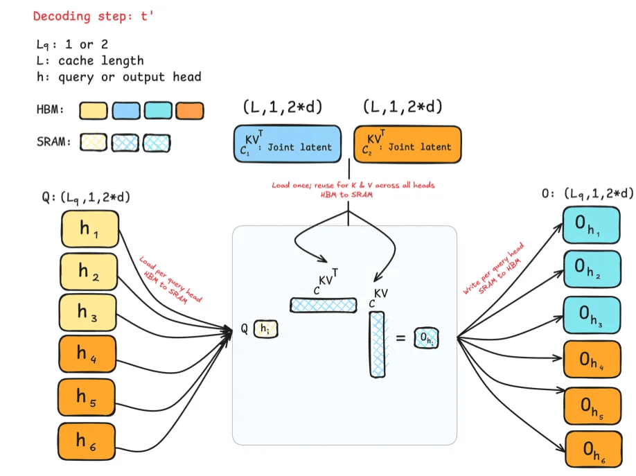
GLA решает проблему разделения кэша между устройствами: головы делятся на группы, и у каждой группы своё скрытое представление. Кэш теперь распределяется по GPU естественным образом — каждое устройство хранит только свою часть, а не копию целого. Это даёт параллелизм без роста памяти на устройство. Сжимая $K$ и $V$ низкоранговыми проекциями, GLA к тому же освобождает параметрический бюджет для более широких проекций или большего числа голов запросов. Итог — лучшее масштабирование, более ровная задержка по батчам и эффективность, согласованная с железом, особенно на длинных контекстах и больших нагрузках. Как устроена GLA
Вместо одного вектора скрытое представление разбивается на $g$ частей: $$ c_t^{KV} = \left[c_{t,1}^{KV},\ c_{t,2}^{KV},\ \dots,\ c_{t,g}^{KV}\right] $$ где каждая часть $c_{t,r}^{KV}$ обслуживает свою группу голов запросов — ровно ту, что назначена устройству с номером $r$.
- Устройство $r$ читает из своей памяти только $c_{t,r}^{KV}$ — часть кэша, соответствующую его группе.
- Считает внимание для своих локальных голов запросов.
- Применяет свою долю выходной проекции.
- Частичные результаты всех устройств складываются через AllReduce.
Формально: $\text{rank } r \longrightarrow c_{t,r}^{KV}$. Никаких дублирований: суммарный кэш по всем картам равен кэшу MLA, но каждое устройство хранит и читает лишь $1/g$ его часть.
- MQA максимально агрессивно переиспользует $K,V$, но одну общую пару приходится дублировать на всех устройствах.
- GQA вводит группы — и кэш начинает делиться по картам естественным образом.
GLA повторяет ровно этот приём на уровне скрытых представлений:
- MLA — одно глобальное представление: отлично сжимает, плохо делится.
- GLA — несколько групповых представлений: сжимает почти так же, зато совпадает с тем, как работа уже разрезана между устройствами.
Одна и та же идея, применённая дважды к разным объектам.
Свойство MLA GLA Что хранится одно общее сжатое представление групповые сжатые представления Основная цель максимальное сжатие KV сжатие + удобное разделение между устройствами Tensor parallelism представление дублируется на каждом устройстве части раскладываются по устройствам Кэш на одно устройство при $g$ картах весь кэш $1/g$ кэша Где сильнее одна GPU, хорошо оптимизированное декодирование распределённый инференс, длинный контекст, большой батч - Меньше чтения на каждом устройстве. Узкое место декодирования — объём данных, читаемых из HBM конкретной картой, а не суммарно по кластеру. GLA сокращает именно эту величину.
- Выше вычислительная плотность. На каждый прочитанный байт приходится больше полезных операций, поэтому счётные блоки простаивают меньше.
- Проще раскладка данных. Части представления ложатся на устройства ровно так же, как головы запросов, — не нужно смешивать data parallelism с tensor parallelism ради того, чтобы кэш куда-то поместился.
- Ровнее задержка. Нагрузка между картами распределяется симметрично, поэтому нет карты-«отстающей», задающей время всего шага.
В статье авторы показывают, что GLA сохраняет качество MLA, при этом оптимизированное ядро GLA бывает до $2\times$ быстрее FlashMLA в отдельных сценариях декодирования, а в тестах онлайн-инференса сообщается до $2\times$ улучшения пропускной способности и задержки за счёт меньшего кэша на устройство.
MLA оптимизирует математическую структуру кэша: как представить $K,V$ меньшим числом чисел.
GLA оптимизирует расположение этого сжатого кэша относительно железа: как его разрезать, где хранить куски, сколько читать на каждом устройстве, как синхронизировать частичные результаты.
Поэтому GLA почти не даёт эффекта в маленьком инференсе для одного пользователя на одной карте и становится важной в промышленном обслуживании: длинные контексты, большие батчи, tensor parallelism, speculative decoding и жёсткие требования к задержке онлайн-ответов.
- «GLA сжимает кэш сильнее, чем MLA» — суммарно по кластеру объём примерно тот же. Разница в том, сколько приходится на одно устройство: у MLA это весь кэш, у GLA — его $1/g$ часть.
- «Достаточно взять MLA и запустить на нескольких GPU» — так и получается проблема, ради которой придумана GLA: кэш продублируется на каждой карте.
- «Группы в GLA — это то же самое, что группы в GQA» — идея аналогична, но объекты разные: в GQA группируются настоящие $K,V$, в GLA — сжатые скрытые представления, из которых $K,V$ выводятся проекциями.
- «Выигрыш чисто математический» — нет, он в значительной мере инженерный: реализация требует специализированных ядер и продуманной раскладки тензоров, без которых теоретическое преимущество не материализуется.
Основной источник — Hardware-Efficient Attention for Fast Decoding (та же работа, в которой введена GTA). Краткий обзор с теми же акцентами есть на Emergent Mind: GLA описывается как механизм внимания, сжимающий токены в групповые скрытые представления и улучшающий масштабируемость распределённого инференса.
Что такое Grouped Latent Attention?
Вариант внимания со скрытым представлением, где сжатый KV-cache хранится не одним общим вектором, а набором групповых. Это сохраняет сжатие в духе MLA, но делает кэш удобным для разделения между устройствами при tensor parallelism.
Что такое tensor parallelism и почему он здесь важен?
Способ разрезать слой внимания между GPU: головы делят между картами, а частичные результаты складывают через AllReduce. Каждому устройству должно хватать своих локальных данных — иначе приходится дублировать общие структуры на всех картах.
Какую проблему MLA решает GLA?
В MLA одно общее скрытое представление нужно каждому устройству целиком, чтобы применить свою часть обратной проекции. Поэтому сжатый кэш дублируется на всех картах: суммарная память растёт с числом устройств, а экономия на чтении теряется. GLA разбивает представление по группам, и каждое устройство хранит и читает лишь свою часть.
Чем GLA похожа на GQA по интуиции?
Это один и тот же ход, применённый к разным объектам. GQA ввёл группы вместо одной общей пары $K,V$, чтобы кэш делился по устройствам. GLA вводит групповые скрытые представления вместо одного глобального ради той же цели.
Почему GLA может быть быстрее MLA в распределённом обслуживании?
Каждое устройство читает меньшую часть кэша, поэтому объём чтения из HBM на устройство ниже, а вычислительная плотность выше. Это уменьшает задержку и повышает пропускную способность, особенно при длинном контексте, большом батче и speculative decoding.
Одинаков ли суммарный объём кэша у MLA и GLA?
Логически да, различие в раскладке: у MLA каждое устройство держит копию всего кэша, у GLA — только $1/g$ его часть. Именно память и чтение на одно устройство, а не суммарные по кластеру, и являются узким местом.
Что является главным компромиссом GLA?
Усложнение организации внимания: нужны специализированные ядра и продуманная раскладка данных. Выигрыш возникает не только из математики, но и из соответствия схеме исполнения на железе при tensor parallelism.
Где GLA наиболее полезна?
В промышленном инференсе на нескольких GPU: длинные контексты, большие батчи, жёсткие требования к задержке и сценарии, где нужно сжатие в духе MLA, но одно общее скрытое представление плохо делится между устройствами.
-
Sliding Window Attention (скользящее окно)
SWA (Sliding Window Attention, внимание со скользящим окном) — вариант внимания, в котором токен смотрит не на весь префикс, а только на последние $w$ токенов. Всё, что дальше окна, для него полностью замаскировано.
Если совсем простыми словами: вместо «каждый смотрит на всех» получается «каждый смотрит на своих ближайших соседей». Дальние связи при этом не теряются — они передаются через слои, как слухи через цепочку знакомых.
Полное внимание квадратично по длине последовательности $n$:
- Вычисления: матрица скоров имеет размер $n \times n$, то есть $O(n^2 d)$ операций. При $n = 32000$ это уже неприемлемо дорого.
- Память KV-кэша: растёт линейно по $n$, и на длинных контекстах становится доминирующей статьёй расхода (см. KV-cache).
SWA убирает обе проблемы разом: вычисления становятся $O(n \cdot w \cdot d)$ — линейными по длине, а кэш можно ограничить $w$ последними токенами, то есть сделать постоянного размера.
Раз токен видит только последние $w$ позиций, хранить весь кэш незачем. Rolling buffer — кольцевой буфер фиксированного размера $w$: позиция $i$ пишется в ячейку $i \bmod w$, затирая запись, которая уже вышла из окна.
Практический эффект в Mistral 7B ($w = 4096$): при контексте 32 000 токенов кэш занимает столько же, сколько при контексте 4096, — экономия в 8 раз, причём независимо от того, насколько длинный текст подан.
Главное возражение к SWA: «токен не видит начало документа, значит информация потеряна». Это неверно, и вот почему.
Каждый слой расширяет рецептивное поле на $w$ позиций. Токен на позиции $i$ в первом слое видит $[i - w,\, i]$. Но токен $i - w$ во втором слое сам уже вобрал информацию из $[i - 2w,\, i - w]$ — значит, через два слоя токен $i$ косвенно зависит от $[i - 2w,\, i]$.
Общая формула: после $L$ слоёв рецептивное поле составляет $$w \cdot L \ \text{токенов}$$
Механика ровно та же, что у стека свёрточных слоёв в CNN: маленькие ядра, но глубина даёт большое поле зрения.
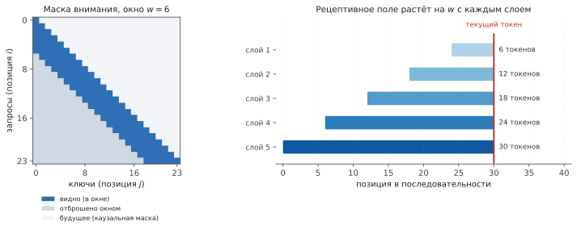
Слева: маска внимания — синим то, что токен реально видит; всё, что дальше окна, отброшено, хотя формально находится в прошлом. Справа: несмотря на узкое окно, зона влияния расширяется на $w$ позиций с каждым слоем, поэтому глубокая модель косвенно зависит от куда более далёкого прошлого, чем видит один слой. Параметры: $w = 4096$, $L = 32$ слоя.
$$4096 \times 32 = 131\,072 \ \text{токена}$$
То есть теоретически последний токен может зависеть от текста, отстоящего на 131 тысячу позиций назад, — при том что каждый отдельный слой смотрит всего на 4096.
Практическая оговорка: это потолок, а не гарантия. Информация с каждым «пересказом» через слой ослабевает, поэтому реальная дальность полезной зависимости меньше — эффективно порядка десятков тысяч токенов.
- Точный поиск в дальнем контексте. Задача «найди строку, которая встретилась 30 000 токенов назад, и процитируй дословно» (тест «иголка в стоге сена») даётся SWA хуже, чем полному вниманию: информация проходит через несколько слоёв и искажается.
- Гарантированный доступ к системному промпту. Если системная инструкция стоит в самом начале очень длинного диалога, она может «вымыться» из окна.
- Отсюда практика гибридов. В современных моделях SWA обычно чередуют с полным вниманием: например, каждый четвёртый слой — полный. Так делают Gemma 2/3 и ряд других моделей. Полные слои обеспечивают точный дальний доступ, а окно — дешевизну.
SWA — простейший представитель большого семейства:
- Longformer (2020): окно + несколько глобальных токенов, которые видят всё и видны всем (например,
[CLS]и токены вопроса). - BigBird (2020): окно + глобальные токены + случайные связи. Авторы доказали, что такая схема сохраняет выразительность полного трансформера.
- StreamingLLM (2023): окно + attention sinks — первые несколько токенов последовательности, которые всегда остаются в кэше. Оказалось, что модели «сливают» лишнее внимание в первые токены, и если их выбросить, генерация разваливается.
Общее у всех трёх — шаблон разреженности фиксирован заранее и не зависит от содержания текста. Следующий шаг — обучаемое разреженное внимание, где модель сама решает, на какие фрагменты контекста смотреть.
Эффект, который стоит запомнить: если просто выкидывать из кэша самые старые токены, качество генерации резко падает — гораздо сильнее, чем можно объяснить потерей их содержания.
Причина в softmax: он обязан распределить суммарный вес 1 между всеми доступными позициями. Когда токену не на что смотреть по существу, он сбрасывает избыток внимания на первые токены последовательности, которые играют роль «стока». Уберите их — и веса перераспределятся на осмысленные позиции, исказив представления.
Лечение простое: всегда держать в кэше первые 4 токена, независимо от окна. Это позволяет генерировать миллионы токенов подряд с постоянной памятью.
- «SWA ограничивает длину контекста модели окном». Нет: контекст модели больше окна, дальние связи идут через слои. Ограничен размер окна одного слоя, а не всей модели.
- «SWA всегда быстрее». На коротких последовательностях ($n \lesssim w$) окно не даёт ничего: маска просто ни на что не влияет. Выигрыш появляется при $n \gg w$.
- Выбрасывать старые токены из кэша без attention sinks. Качество генерации разваливается по описанной выше причине.
- Путать SWA с локальным вниманием без пересечений. В SWA окна соседних токенов перекрываются (сдвигаются на одну позицию); при разбиении на непересекающиеся блоки информация между блоками не течёт вовсе.
Что такое sliding window attention?
Схема внимания, в которой каждый токен видит только $w$ предыдущих позиций, а всё, что дальше, замаскировано. Вычисления становятся линейными по длине последовательности, а KV-кэш можно ограничить фиксированным размером $w$.
Как SWA сохраняет доступ к дальнему контексту?
Через глубину: каждый слой расширяет рецептивное поле на $w$ позиций, поэтому после $L$ слоёв токен косвенно зависит примерно от $w \cdot L$ предыдущих токенов. Механика та же, что у стека свёрток в CNN.
Чему равно рецептивное поле Mistral 7B и что это означает на практике?
При окне 4096 и 32 слоях — примерно 131 тысяча токенов. Это теоретический потолок: информация ослабевает при передаче через слои, поэтому реально полезная дальность заметно меньше.
Что такое rolling buffer cache?
Кольцевой буфер фиксированного размера $w$ для KV-кэша: позиция $i$ записывается в ячейку $i \bmod w$ поверх записи, уже вышедшей из окна. Память под кэш перестаёт зависеть от длины контекста.
Что такое attention sinks и почему они нужны?
Первые несколько токенов последовательности, на которые модель сбрасывает избыточное внимание, потому что softmax обязан распределить суммарный вес 1. Если выбросить их из кэша, веса перераспределятся на содержательные позиции и генерация деградирует, поэтому их всегда сохраняют.
Почему современные модели чередуют SWA с полным вниманием?
Потому что окно плохо справляется с точным поиском в дальнем контексте и может «вымывать» системный промпт. Гибридная схема — например, каждый четвёртый слой полный — сохраняет точный дальний доступ, оставляя основную часть вычислений дешёвой.
-
Обучаемое разреженное внимание: NSA, MoBA, SSA
Обучаемое разреженное внимание (trainable / content-adaptive sparse attention) — схемы, в которых каждый запрос считает внимание не по всей последовательности, а по небольшому подмножеству позиций, выбранному самой моделью исходя из содержания текста. Выбор происходит обучаемым модулем и меняется от входа к входу.
Ключевое слово здесь — «обучаемое». В скользящем окне, Longformer и BigBird шаблон разреженности задан заранее и одинаков для любого текста: последние $w$ токенов, плюс несколько глобальных, плюс случайные. Модель к нему приспосабливается, но не управляет им.
Если совсем простыми словами: раньше мы говорили модели «смотри на соседей», а теперь говорим «сама реши, на что смотреть, — но выбери немного».
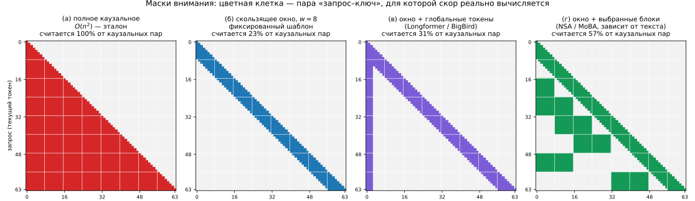
Игрушечная последовательность из 64 токенов: строка — запрос, столбец — ключ, цветная клетка — пара, для которой скор действительно вычисляется, светло-серая — та, которой в вычислениях нет вовсе. (а) полное каузальное внимание — нижний треугольник целиком. (б) скользящее окно шириной 8 — узкая полоса вдоль диагонали. (в) та же полоса плюс три глобальных токена, которые видны отовсюду и дают сплошной столбец у левого края. (г) обучаемая схема: к окну добавлено до двух выбранных блоков на каждую группу запросов (у самых первых групп выбирать ещё нечего), и именно их расположение меняется от текста к тексту, тогда как рисунки (б) и (в) одинаковы для любого входа. Доли в заголовках посчитаны от числа каузальных пар на этой игрушечной длине; на контекстах в сотни тысяч токенов те же самые шаблоны дают уже сотые доли процента. У фиксированных шаблонов есть врождённый недостаток: они семантически слепы. Окно шириной 4096 одинаково отбросит и бессмысленный текст, и определение термина, которое понадобится через сто тысяч токенов.
Для генерации связного текста этого хватает — соседние токены действительно важнее дальних. А вот для задач с точным поиском по длинному контексту — «найди, где в этом репозитории объявлена функция» — нет: нужная строка может оказаться где угодно, и фиксированный шаблон её просто не увидит.
Отсюда и требование: разреженность должна зависеть от содержания, а не только от позиции.
Идея «считать внимание только по важным позициям» очевидна с самого начала, и попыток было много. Мешали две вещи.
Разреженность появлялась только на инференсе. Модель обучали с полным вниманием, а при выкатке отбрасывали часть связей. Возникает рассогласование: модель обучалась в одном режиме, а работает в другом, — качество падает, и обучение при этом не дешевеет вообще.
Теоретическая экономия не превращалась в реальную. GPU эффективен на плотных блоках; выборка произвольных разрозненных позиций даёт нерегулярный доступ к памяти, и ядро на разреженной матрице может оказаться медленнее плотного, несмотря на кратно меньшее число операций.
Обе проблемы и решают современные схемы: они нативно обучаемые и hardware-aligned — то есть выбирают не отдельные токены, а блоки, удобные для GPU.
Три реализации
NSA (Native Sparse Attention, DeepSeek, arXiv 2502.11089) для каждого запроса складывает результаты трёх параллельных ветвей с обучаемыми весами:
- Compression — токены прошлого сжимаются в блоки, каждый блок заменяется одним агрегированным представлением. Даёт грубый обзор всего контекста.
- Selection — по этим сжатым представлениям выбираются несколько самых релевантных блоков, и внутри них внимание считается точно, по исходным токенам.
- Sliding window — фиксированное окно последних токенов, гарантирующее качество ближнего контекста.
Логика разделения труда: compression отвечает «где-то там было что-то похожее», selection уточняет «вот именно здесь», окно закрывает ближний порядок, который и так нужен всегда.
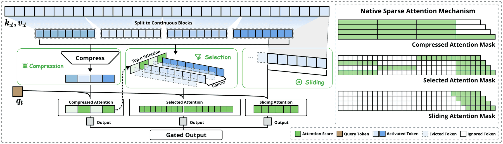
Схема NSA из статьи DeepSeek. Сверху ключи и значения $k_{:t}, v_{:t}$ режутся на непрерывные блоки, и дальше расходятся три ветви в зелёных рамках. Compression сжимает каждый блок в один вектор; Selection по этим векторам берёт top-n блоков — синие прямоугольники — и достаёт их целиком, а пунктирные полупрозрачные блоки отбрасываются; Sliding даёт последнее окно. Каждая ветвь считает своё внимание с запросом $q_t$ (квадратик слева), и три выхода складываются обучаемыми весами в Gated Output — это и есть сложение с обучаемыми весами из абзаца выше. Справа три маски одной и той же схемы, зелёное считается, белое игнорируется: у compression покрытие сплошное, но грубое, у selection — блочными кусками, у sliding — узкой полосой у диагонали. Это и есть «hardware-aligned» часть. Выбирай NSA отдельные токены — получился бы нерегулярный доступ к памяти, и весь выигрыш съелся бы на уровне ядра.
Отбор блоками позволяет читать из памяти непрерывные куски и загружать тензорные ядра плотными матричными умножениями — теми же, что и обычное внимание, просто их меньше.
Результат: заявленное ускорение на последовательностях длины 64k получено во всех трёх режимах — прямом проходе, обратном и декодировании. Ускорение обратного прохода здесь принципиально: именно оно означает, что схема удешевляет само обучение, а не только инференс.
MoBA (Mixture of Block Attention, Moonshot AI) заходит с другой стороны: контекст режется на блоки, и обучаемый роутер для каждого запроса выбирает top-$k$ блоков, к которым тот получит доступ.
Это буквально механика MoE, перенесённая с экспертов на фрагменты контекста: там роутер выбирал, какие подсети активировать, здесь — какие куски прошлого прочитать.
Практическое достоинство MoBA — переключаемость: одна и та же модель может работать и в плотном, и в разреженном режиме. Короткие запросы обрабатываются полным вниманием, разреженность включается там, где она действительно нужна.
SSA (Subquadratic Sparse Attention) — схема, на которой построена модель SubQ с окном 12 миллионов токенов. Публичного описания уровня статьи на момент написания нет, известна общая конструкция:
- токены группируются в локальные кластеры, взаимодействие между кластерами идёт через агрегированные представления;
- часть токенов назначается глобальными якорями — они видны отовсюду;
- уже вычисленные шаблоны внимания кэшируются и переиспользуются по чанкам.
Заявленная сложность — $O(n \log n)$ или $O(n \cdot k)$, где $k$ — среднее число релевантных связей на токен. На контексте 1M это даёт около 64-кратного сокращения числа операций по сравнению с плотным вниманием (реальное ускорение по времени выходит скромнее — см. SubQ).
Плотное внимание на $n$ токенах требует $O(n^2)$ операций. При $n = 10^6$ это порядка $10^{12}$ операций на слой на голову.
Разреженная схема с $k \approx 4000$ выбранных позиций на запрос требует $O(n \cdot k) \approx 4 \cdot 10^9$ — примерно в 250 раз меньше.
Именно этот разрыв и делает контексты в миллионы токенов не просто медленными, а вообще возможными: при квадратичном росте счёт идёт не на «подождать подольше», а на «не хватит ни памяти, ни времени ни при каком железе».
Разреженное внимание легко спутать с другими способами убежать от квадратичности, но разница принципиальная.
Linear attention и SSM / Mamba сжимают всё прошлое в состояние фиксированного размера. Стоимость честно линейная, но информация о конкретном токене размывается: точный поиск («что было написано в строке 4172») проваливается — это известное слабое место рекуррентных схем.
Sparse attention вычисляет точные скоры внимания, просто на выбранном подмножестве. Ничего не аппроксимируется — только отбрасывается. Поэтому точный retrieval сохраняется: если нужный блок попал в выбранные, доступ к нему такой же, как в обычном трансформере.
Плата за это — сохраняется полный KV-кэш: хранить-то надо всё, экономия только на вычислениях.
- «Разреженное внимание — это приближение полного». Нет. Скоры внутри выбранного подмножества считаются точно; приближением является сам выбор подмножества. Это ближе к «не прочитать часть текста», чем к «прочитать весь текст неаккуратно».
- Путать разреженность с экономией памяти. Sparse attention сокращает вычисления. KV-кэш при этом остаётся полным — за память отвечают другие схемы.
- «Раз сложность линейная, контекст можно наращивать бесконечно». Линейная стоимость внимания по длине не отменяет линейного роста памяти под кэш и деградации качества отбора: чем больше кандидатов, тем труднее роутеру не промахнуться.
- Считать NSA и MoBA просто «улучшенным Longformer». Разница не в форме шаблона, а в том, что шаблона нет: он вычисляется по входу и обучается вместе с моделью.
Чем обучаемое разреженное внимание отличается от sliding window, Longformer и BigBird?
Тем, что шаблон разреженности не задан заранее, а вычисляется по содержанию входа обучаемым модулем и меняется от текста к тексту. У SWA, Longformer и BigBird набор видимых позиций определяется только позицией токена и одинаков для любого входа, поэтому они семантически слепы: одинаково отбросят и мусор, и нужное определение.
Что означает «нативно обучаемое» и почему это важно?
Что разреженность присутствует и во время обучения, а не включается только на инференсе. Иначе возникает рассогласование режимов — модель обучалась с полным вниманием, а работает с урезанным, — и качество падает. Дополнительно нативность означает, что удешевляется само обучение: у NSA ускорен и обратный проход.
Из каких ветвей состоит NSA?
Из трёх, результаты которых складываются с обучаемыми весами: compression сжимает блоки прошлого в агрегированные представления и даёт грубый обзор всего контекста, selection выбирает по ним несколько самых релевантных блоков и считает внутри них точное внимание, sliding window закрывает ближний контекст фиксированным окном.
Почему эти схемы выбирают блоки, а не отдельные токены?
Ради эффективности на GPU. Отбор произвольных токенов даёт нерегулярный доступ к памяти, и разреженное ядро может оказаться медленнее плотного, несмотря на меньшее число операций. Блочный отбор позволяет читать непрерывные куски памяти и выполнять плотные матричные умножения на тензорных ядрах.
В чём принципиальная разница между sparse attention и SSM или линейным вниманием?
SSM и линейное внимание сжимают всё прошлое в состояние фиксированного размера — стоимость линейная, но информация о конкретном токене размывается, и точный поиск по контексту проваливается. Sparse attention считает точные скоры на выбранном подмножестве позиций, поэтому точный retrieval сохраняется, но приходится хранить полный KV-кэш.
Что именно экономит разреженное внимание — память или вычисления?
Вычисления. Вместо $O(n^2)$ получается порядка $O(n \cdot k)$, что на контексте в миллион токенов даёт сокращение в сотни раз. Память под KV-кэш при этом не уменьшается: хранить нужно по-прежнему все токены, ведь любой из них может быть выбран на следующем шаге.
-
RoPE: вращающиеся позиционные эмбеддинги
RoPE (Rotary Position Embedding, Su et al., 2021) — способ закодировать позицию токена поворотом его векторов запроса и ключа на угол, пропорциональный позиции, вместо прибавления позиционного вектора.
Если совсем простыми словами: вместо того чтобы дописывать к слову метку «я стою на пятом месте», RoPE поворачивает вектор слова на угол, соответствующий пятому месту. Тогда при скалярном произведении двух повёрнутых векторов углы вычитаются, и результат зависит только от разности позиций — то есть от того, насколько далеко слова стоят друг от друга.
RoPE используют практически все современные декодерные LLM: Llama, Mistral, Qwen, DeepSeek, Gemma.
- Обучаемые абсолютные позиции (GPT-2, BERT): для каждой позиции хранится свой обучаемый вектор, который прибавляется к эмбеддингу. Проблема — жёсткий потолок длины: позиции 5000 в таблице просто нет, а если и дообучить, модель никогда не видела её при обучении.
- Синусоидальные позиции (оригинальный Transformer): формально определены для любой длины, но модель всё равно плохо экстраполирует за пределы обучающих длин, а сумма «содержание + позиция» размывает и то и другое.
- Общая беда обоих: позиция подмешивается на входе, а внимание сравнивает уже смешанные векторы. Модель вынуждена сама распутывать, что в скоре от смысла, а что от расположения.
Вектор размерности $d$ разбивается на $d/2$ пар соседних координат. Каждая пара $(x_{2i}, x_{2i+1})$ трактуется как точка на плоскости и поворачивается на угол $m\theta_i$, где $m$ — позиция токена:
$$\begin{pmatrix} x'_{2i} \\ x'_{2i+1} \end{pmatrix} = \begin{pmatrix} \cos m\theta_i & -\sin m\theta_i \\ \sin m\theta_i & \cos m\theta_i \end{pmatrix} \begin{pmatrix} x_{2i} \\ x_{2i+1} \end{pmatrix}$$
Частоты задаются геометрической прогрессией, как в синусоидальных эмбеддингах: $$\theta_i = b^{-2i/d}, \qquad i = 0, \dots, d/2 - 1$$ где $b$ — база (по умолчанию 10000).
Поворот применяется к запросам $q$ и ключам $k$, но не к значениям $v$ — и не к самому эмбеддингу токена, а внутри каждого слоя внимания.
Ключевое свойство поворота: скалярное произведение двух повёрнутых векторов зависит только от разности углов. Для пары координат с частотой $\theta$: $$\langle R_m q,\; R_n k \rangle = \langle R_{m-n} q,\; k \rangle$$
То есть скор внимания между токеном на позиции $m$ и токеном на позиции $n$ определяется величиной $m - n$, а не самими $m$ и $n$. Абсолютная позиция вкладывается на входе, а внимание автоматически получает относительную — без отдельной таблицы относительных позиций и без дополнительных параметров.
Именно это сочетание — простота реализации абсолютного кодирования и поведение относительного — сделало RoPE стандартом.
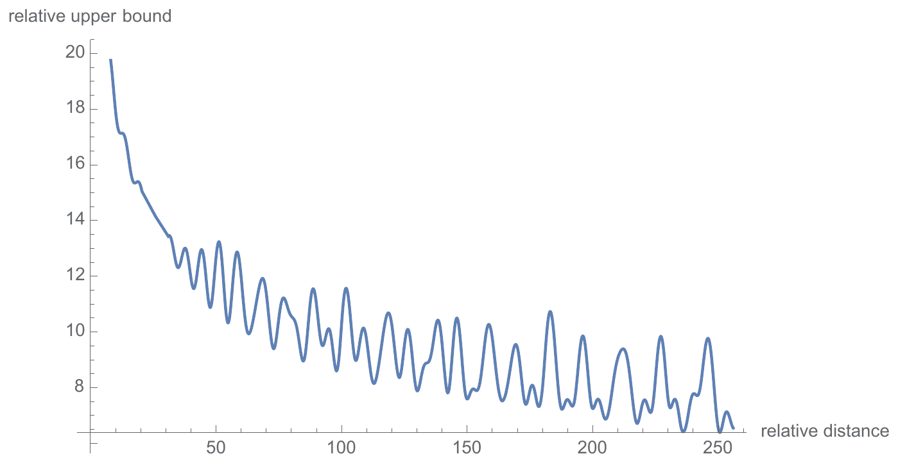
Второе следствие того же поворота, показанное в статье RoFormer: верхняя граница скора внимания как функция расстояния между токенами, обе шкалы линейные. Кривая сильно колеблется — это складываются пары координат с разными частотами, — но её огибающая монотонно спадает: около 20 на расстоянии в десяток токенов и 7–8 на расстоянии 250. То есть затухание интереса к далёким токенам у RoPE встроено само собой, без отдельного штрафа вроде того, что добавляет ALiBi. Модель при этом ничего не запрещает: граница именно спадает, а не обнуляется. Возьмём $d = 128$ и базу $b = 10000$. Тогда:
- Первая пара координат: $\theta_0 = 1$ — полный оборот за $2\pi \approx 6.3$ токена. Эта пара кодирует ближний порядок: «предыдущее слово», «через два слова».
- Средняя пара: $\theta_{32} = 10000^{-0.5} = 0.01$ — оборот за ≈ 628 токенов. Масштаб абзаца.
- Последняя пара: $\theta_{63} \approx 10^{-4}$ — оборот за ≈ 63 000 токенов. Этот компонент почти не меняется внутри обучающего контекста и кодирует «в какой части документа мы находимся».
То есть RoPE — это позиционные «часы» с разными стрелками: быстрая ловит соседей, медленная — общую позицию в тексте.
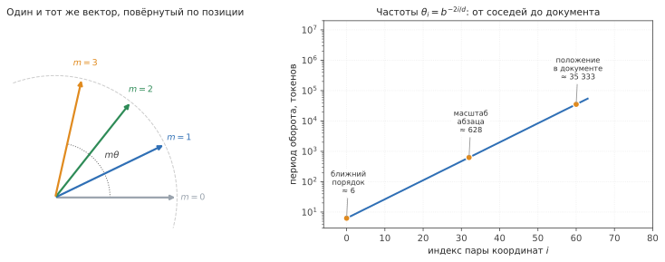
Слева: один и тот же вектор, повёрнутый на угол, пропорциональный позиции. При скалярном произведении двух таких векторов углы вычитаются, поэтому скор зависит только от разности позиций. Справа: у каждой пары координат своя частота, и периоды охватывают диапазон от единиц токенов (различение соседей) до десятков тысяч (положение в документе). Модель, обученная на контексте 4096, при подаче 16 000 токенов ломается: медленные компоненты попадают в область углов, которых она никогда не видела.
Простейшее лечение — position interpolation: сжать позиции в $s$ раз, заменив $m$ на $m/s$. Тогда 16 000 токенов «выглядят» как 4096. Минус — страдает разрешение по ближним расстояниям: соседние токены становятся почти неразличимы.
Более аккуратные методы:
- NTK-aware scaling — вместо равномерного сжатия увеличивают базу $b$. Высокочастотные компоненты (ближний порядок) почти не трогают, низкочастотные растягивают сильно.
- YaRN — комбинирует интерполяцию для низких частот, сохранение высоких и поправку температуры внимания. Позволяет расширять контекст в 8–32 раза, дообучая модель на небольшом количестве длинных примеров.
Альтернативный ответ на ту же проблему — вообще не кодировать позицию в векторах, а вычитать штраф за расстояние прямо из скоров внимания: так устроен ALiBi, который экстраполируется на длины больше обучающих без всякого дообучения.
Llama 2 обучена с $b = 10000$ и контекстом 4096. Llama 3.1 поддерживает контекст 128 000 — и одна из ключевых правок именно здесь: база увеличена до $b = 500000$.
Логика: увеличив $b$, мы удлиняем период всех компонент. Медленные «стрелки часов» теперь делают полный оборот не за 63 тысячи токенов, а за миллионы, поэтому на 128 000 токенов модель по-прежнему работает в знакомом диапазоне углов.
- «RoPE прибавляется к эмбеддингу токена». Нет: это умножение (поворот), и применяется оно к $q$ и $k$ внутри каждого слоя внимания, а не один раз на входе.
- Применять RoPE к значениям $v$. Не нужно и вредно: относительность обеспечивается уже на уровне скоров внимания, а поворот $v$ исказил бы передаваемое содержание.
- Наивно увеличивать
max_position_embeddingsв конфиге. Формально модель запустится на длинном контексте, но качество рухнет. Нужны интерполяция или NTK/YaRN, желательно с коротким дообучением. - Считать, что RoPE даёт неограниченную экстраполяцию. Без специальных приёмов модель работает примерно в пределах длины, на которой обучалась, плюс небольшой запас.
Что делает RoPE с векторами и в какой момент?
Поворачивает каждую пару соседних координат векторов запроса и ключа на угол, пропорциональный позиции токена, с частотой, своей для каждой пары. Применяется внутри каждого слоя внимания к $q$ и $k$, но не к $v$ и не к входному эмбеддингу.
Почему поворот даёт относительное кодирование позиции?
Скалярное произведение повёрнутых векторов зависит только от разности углов: $\langle R_m q, R_n k\rangle = \langle R_{m-n} q, k\rangle$. Значит, скор внимания определяется разностью позиций $m - n$, хотя кодировались абсолютные позиции, и никаких дополнительных параметров для этого не нужно.
Зачем нужны разные частоты $\theta_i$?
Чтобы кодировать расстояния разных масштабов: высокочастотные компоненты различают соседние токены, низкочастотные — положение в документе целиком. Частоты задаются геометрической прогрессией $\theta_i = b^{-2i/d}$.
Почему модель ломается при подаче контекста длиннее обучающего?
Низкочастотные компоненты попадают в диапазон углов, который при обучении не встречался, и скоры внимания оказываются вне знакомого модели распределения. Формально функция определена для любой позиции, но обученного поведения там нет.
Чем NTK-aware scaling лучше простой интерполяции позиций?
Простая интерполяция сжимает все позиции одинаково и портит разрешение по ближним расстояниям. NTK-подход увеличивает базу $b$, почти не трогая высокочастотные компоненты и растягивая только низкочастотные, поэтому ближний порядок сохраняется.
Что изменили в RoPE при переходе от Llama 2 к Llama 3.1?
Увеличили базу с 10 000 до 500 000, что удлинило периоды всех компонент и позволило работать с контекстом 128 000 токенов, оставаясь в диапазоне углов, знакомом модели.
-
ALiBi (Attention with Linear Biases)
Механизм внимания сам по себе не знает порядка слов. Он смотрит на набор векторов и считает похожести — если переставить токены местами, результат для каждого токена не изменится. Для «мама мыла раму» и «раму мыла мама» внимание выдаст одно и то же.
Поэтому информацию о позиции приходится вносить отдельно. Исторически это делали, прибавляя к эмбеддингу токена вектор позиции (синусоидальный или обучаемый) либо вращая векторы $Q$ и $K$ на угол, зависящий от позиции (RoPE). ALiBi предлагает третий путь.
ALiBi (Attention with Linear Biases) — способ задать позиции токенов вообще без позиционных векторов. Вместо этого в матрицу логитов внимания добавляется линейный штраф за расстояние между токенами: чем дальше ключ от запроса, тем сильнее его вес занижается.
Если совсем простыми словами: модели не сообщают, «на каком месте стоит слово». Ей сообщают, «насколько давно оно было», и за каждый шаг давности отнимают фиксированную величину из оценки внимания. Позиция становится не координатой, а расстоянием.
Обычное внимание в трансформере: $$ \mathrm{Attention}(Q, K, V) = \mathrm{softmax}\!\left(\frac{QK^\top}{\sqrt{d_k}} + M \right) V $$ где $M$ — маска (например, причинная, запрещающая смотреть в будущее: там, где смотреть нельзя, стоит $-\infty$).
ALiBi добавляет к тем же логитам ещё одно слагаемое $B$: $$ \mathrm{Attention}_{\text{ALiBi}}(Q, K, V) = \mathrm{softmax}\!\left(\frac{QK^\top}{\sqrt{d_k}} + B \right) V $$
Больше в архитектуре не меняется ничего: ни размерность входа, ни число параметров, ни формула градиента. Смещение — просто ещё одно число, прибавленное к логиту перед softmax.
Как устроено смещение
Для каждой головы внимания $h$ задаётся собственный наклон $m_h > 0$. Для запроса в позиции $i$ и ключа в позиции $j$: $$ B_{ij}^{(h)} = \begin{cases} -\,m_h \cdot (i - j), & i \ge j \\[4pt] -\infty, & i < j \quad (\text{причинная маска: в будущее смотреть нельзя}) \end{cases} $$
Разберём по частям:
- $(i - j)$ — расстояние в токенах: сколько шагов назад находится ключ;
- $m_h$ — «цена одного шага назад» для этой головы;
- минус означает штраф: чем дальше, тем меньше логит, а после softmax — меньше вес.
Для соседнего токена ($i = j$, «сам на себя») штраф нулевой.
В части источников пишут $B_{ij} = m_h (i-j)$ и оговаривают, что $m_h < 0$. В других — $B_{ij} = -m_h (i-j)$ при $m_h > 0$. Это одно и то же: штраф должен расти по модулю с расстоянием и быть отрицательным. Если у вас в реализации получилось, что дальние токены получают больший вес, — вы перепутали знак.
Они задаются заранее по геометрической прогрессии: $$ m_h = \frac{1}{2^{\,8h / n_{\text{heads}}}}, \qquad h = 1, \dots, n_{\text{heads}} $$
Смысл формулы: показатель степени равномерно пробегает отрезок от $8/n_{\text{heads}}$ до $8$, то есть наклоны образуют геометрическую прогрессию от $2^{-8/n_{\text{heads}}}$ до $2^{-8} = 1/256$. Никакой глубокой теории за числом 8 нет — оно подобрано эмпирически и оказалось устойчивым к числу голов.
При $n_{\text{heads}} = 8$: $$ \mathbf{m}=\left[\underbrace{\tfrac{1}{2^1}}_{m_1}, \underbrace{\tfrac{1}{2^2}}_{m_2},\dots, \underbrace{\tfrac{1}{2^8}}_{m_8}\right] = \left[\tfrac12,\ \tfrac14,\ \tfrac18,\ \tfrac1{16},\ \tfrac1{32},\ \tfrac1{64},\ \tfrac1{128},\ \tfrac1{256}\right] $$
При $n_{\text{heads}} = 16$ шаг прогрессии становится вдвое мельче: $$ \mathbf{m}=\left[ \underbrace{\tfrac{1}{2^{0.5}}}_{m_1}, \underbrace{\tfrac{1}{2^1}}_{m_2}, \underbrace{\tfrac{1}{2^{1.5}}}_{m_3}, \dots, \underbrace{\tfrac{1}{2^8}}_{m_{16}} \right] $$
Диапазон один и тот же, просто он покрывается плотнее.
Пусть запрос стоит в позиции $i = 5$, а «сырые» логиты $q\cdot k$ для всех пяти доступных ключей одинаковы (модель не видит смысловой разницы). Посмотрим, что сделает софтмакс после добавления ALiBi.
Голова с $m_2 = 1/4$ (штрафы $0,\ -0.25,\ -0.5,\ -0.75,\ -1$ для расстояний $0,1,2,3,4$): $$ \text{веса} \approx [\underbrace{0.31}_{j=5},\ \underbrace{0.24}_{j=4},\ \underbrace{0.19}_{j=3},\ \underbrace{0.15}_{j=2},\ \underbrace{0.11}_{j=1}] $$
Голова с $m_8 = 1/256$ (штрафы $0,\ -0.004,\ -0.008,\ -0.012,\ -0.016$): $$ \text{веса} \approx [0.202,\ 0.201,\ 0.200,\ 0.199,\ 0.198] $$
Голова с $m_2$ при прочих равных отдаёт ближайшему токену втрое больше веса, чем самому дальнему, — это «локальная» голова, она следит за ближайшим контекстом. Восьмая голова практически не различает расстояния — это «глобальная» голова, она свободно смотрит на весь контекст и определяется только смысловой похожестью.
В этом и состоит смысл геометрической прогрессии наклонов: модель не заставляют выбирать между локальностью и дальнодействием. Ей выдают набор голов с разными «радиусами обзора» — грубо говоря, эффективное окно головы имеет порядок $1/m_h$, то есть от нескольких токенов до сотен, — и она сама распределяет по ним работу.
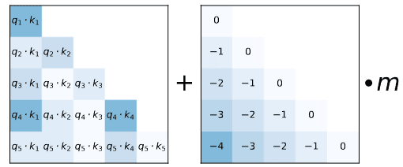
При вычислении внимания для каждой головы, ALiBi добавляет постоянное смещение (правая часть картинки) к каждому логиту внимания $q_i \cdot k_j$ (левая часть). Видно главное свойство матрицы смещений: она зависит только от разности позиций, а не от самих позиций — все элементы на одной диагонали одинаковы. Как и в обычном слое внимания, к полученным оценкам применяется softmax, остальные вычисления не меняются. $m$ — скаляр, свой для каждой головы, который задаётся заранее и не обучается. Главное следствие: экстраполяция на длинные контексты
Обучаемые позиционные эмбеддинги — это буквально таблица векторов на позиции $0 \ldots L_{\max}-1$. Токена на позиции $L_{\max}+1$ в таблице просто нет — брать нечего.
Синусоидальные кодировки формально определены на любой длине, но модель никогда не видела соответствующих комбинаций фаз и на них ведёт себя непредсказуемо. RoPE в этом смысле лучше (он относительный), но и у него углы поворота на невиданных ранее расстояниях выходят за диапазон, на котором обучались веса, — качество деградирует, если не применять специальные приёмы вроде интерполяции позиций.
У ALiBi нет ни одного параметра, зависящего от длины. Штраф $-m_h(i-j)$ определён для любого расстояния, и его поведение на расстоянии 8000 качественно такое же, как на расстоянии 800: линейный рост.
Более того, штраф растёт неограниченно, поэтому для очень дальних токенов вес после softmax становится исчезающе малым. Фактически каждая голова превращается в скользящее окно с мягкой границей: за пределами своего радиуса $\sim 1/m_h$ она почти ничего не видит. Модель, обученная на 1024 токенах, при подаче 4096 не «ломается» — она просто продолжает смотреть в своё привычное окно, а дальний хвост игнорирует.
Именно это авторы и показали: ALiBi-модель, обученная на контексте 1024, на длине 2048 даёт перплексию лучше, чем такая же модель с синусоидальными кодировками, обученная сразу на 2048.
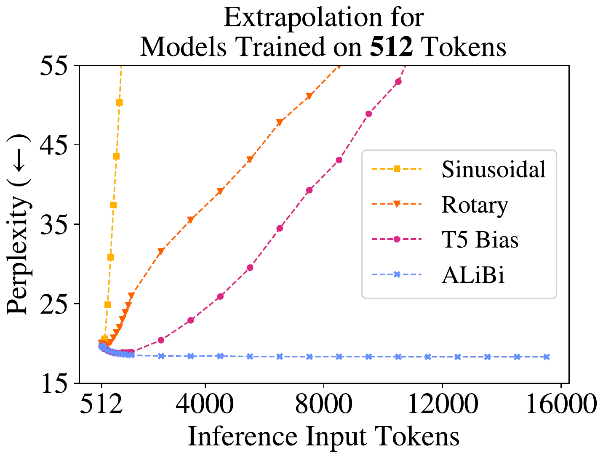
Все четыре модели обучены на контексте 512 токенов, а на инференсе им подают всё более длинный вход (горизонтальная ось, обе шкалы линейные); по вертикали перплексия, ниже лучше. Синусоидальные кодировки (жёлтые квадраты) вылетают за верхний край графика уже примерно на тысяче токенов, RoPE (оранжевые треугольники) — около восьми тысяч, обучаемое смещение из T5 (розовые кружки) держится дольше двух предыдущих, но и оно уходит вверх примерно к одиннадцати тысячам. Только ALiBi (голубые крестики) остаётся ровным до 16 000, то есть в тридцать с лишним раз дальше обучающей длины, и при этом даже чуть лучше, чем в точке 512. Источник. Хорошая экстраполяция достаётся не бесплатно. Механизм ALiBi устроен так, что дальние токены всегда штрафуются, независимо от содержания. Если правильный ответ требует достать факт, упомянутый 6000 токенов назад, все головы кроме самых «глобальных» будут против.
Отсюда практический эффект: ALiBi отлично держит перплексию на длинных текстах (там локального контекста обычно достаточно для предсказания следующего слова), но заметно хуже справляется с задачами точного извлечения из длинного контекста («иголка в стоге сена», длинный RAG-контекст, работа с большими документами). Это одна из причин, по которой массовая индустрия в итоге ушла в RoPE с масштабированием, а не в ALiBi.
Sinusoidal PE RoPE ALiBi Тип позиционного кодирования Абсолютное (sin/cos) Относительное (вращение векторов) Относительное (линейное смещение) Добавляется где К входному эмбеддингу Внутри внимания (вращение $Q$ и $K$) В логиты внимания Параметры Фиксированные Фиксированные Без параметров Возможность экстраполяции на длинные контексты Плохая Ограниченная (нужна интерполяция позиций) Хорошая по перплексии, слабая по точному извлечению Вычислительная стоимость Средняя Выше (вращения) Низкая Используется в GPT-2, BERT LLaMA, Mistral, Qwen BLOOM, MPT, некоторые варианты OPT Появление 2017 2021 2021 - Ноль дополнительных параметров и ноль дополнительной памяти — смещение вычисляется из индексов на лету.
- Дёшево по вычислениям: одно сложение на элемент матрицы логитов против пары умножений на каждый компонент $Q$ и $K$ в RoPE.
- Совместим с FlashAttention и другими оптимизациями внимания: смещение можно вносить прямо внутри ядра, оно не требует материализации полной матрицы $L \times L$.
- Тривиален в реализации — по сути одна строка при формировании логитов внимания.
- Позволяет обучать на коротких последовательностях, а применять к длинным, экономя на обучении: квадратичная сложность внимания делает обучение на длинном контексте очень дорогим.
- «ALiBi — это разновидность маски внимания» — нет. Маска запрещает жёстко ($-\infty$), ALiBi штрафует мягко: дальний токен всё ещё может победить, если его логит $q\cdot k$ достаточно велик.
- «Наклоны $m_h$ нужно обучать» — авторы пробовали и не получили выигрыша; фиксированные наклоны работают не хуже и не требуют настройки.
- «ALiBi даёт модели абсолютные позиции» — нет, только относительные. Модель на ALiBi не может напрямую ответить, какой токен идёт первым в тексте, — она знает лишь расстояния.
- «Раз ALiBi экстраполируется, длину контекста можно увеличивать бесконечно» — перплексия действительно держится, но способность фактически использовать дальний контекст падает из-за встроенного штрафа. Экстраполяция перплексии и экстраполяция полезности — не одно и то же.
Что такое ALiBi и как он кодирует позиционную информацию?
ALiBi (Attention with Linear Biases) добавляет линейный штраф $B_{ij} = -m_h \cdot (i-j)$ в матрицу логитов внимания: чем дальше ключевой токен от запросного, тем сильнее занижается его вес. Позиционные векторы при этом не используются вообще — позиция кодируется только через расстояние.
В чём главное преимущество ALiBi перед синусоидальными и RoPE кодировками?
У ALiBi нет параметров, зависящих от длины, поэтому модель, обученная на коротких последовательностях, применима к более длинным без деградации перплексии. Синусоидальные PE и RoPE вне обучающего диапазона ведут себя непредсказуемо и требуют дополнительных приёмов вроде интерполяции позиций.
Как выбираются наклоны $m_h$ для разных голов внимания?
Наклоны заданы заранее геометрической прогрессией $m_h = 1/2^{8h/n_{\text{heads}}}$ и не обучаются. Голова с большим $m_h$ имеет эффективное окно порядка нескольких токенов и следит за локальным контекстом, голова с малым $m_h$ практически не различает расстояния и работает глобально.
Почему ALiBi не добавляет параметров к модели?
Смещение $B_{ij}$ вычисляется детерминированно из индексов позиций с фиксированными наклонами — никаких обучаемых весов и никакой таблицы эмбеддингов не требуется, в отличие от обучаемых позиционных кодировок.
Чем ALiBi отличается от причинной маски?
Маска запрещает внимание жёстко (логит $-\infty$, вес ровно 0), ALiBi штрафует мягко: вес уменьшается, но не обнуляется, и дальний токен всё ещё может получить высокий вес, если содержательный логит $q \cdot k$ достаточно велик.
Каково главное ограничение ALiBi?
Встроенный recency bias: дальние токены штрафуются всегда, независимо от их важности. Это хорошо для языкового моделирования, где локального контекста обычно достаточно, но ухудшает задачи точного извлечения информации из длинного контекста.
В каких моделях применяется ALiBi и когда предпочитают RoPE?
ALiBi использован в BLOOM, MPT и ряде других моделей. RoPE (LLaMA, Mistral, Qwen) чаще предпочитают там, где нужен реально используемый длинный контекст: в связке с интерполяцией позиций он лучше сохраняет способность обращаться к далёким токенам.
-
Pre-Norm и Post-Norm: почему LLM отказались от постнормализации
В блоке трансформера нормализация может стоять в двух местах относительно остаточной связи, и этот выбор оказался одним из самых важных решений при переходе к моделям в десятки миллиардов параметров.
Post-LN — как в оригинальной статье «Attention Is All You Need»: $$x_{l+1} = \text{LN}\big(x_l + \text{Sublayer}(x_l)\big)$$ сначала складываем вход с результатом подслоя, потом нормируем сумму.
Pre-LN — как во всех современных LLM: $$x_{l+1} = x_l + \text{Sublayer}\big(\text{LN}(x_l)\big)$$ нормируем вход подслоя, а сумму оставляем нетронутой.
Что такое сама нормализация и чем LayerNorm отличается от BatchNorm — в вопросе Layer Normalization.
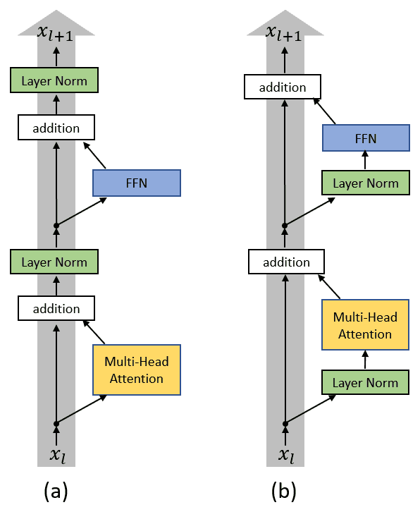
Один блок трансформера в двух вариантах, рисунок из статьи об оптимизации Post-LN и Pre-LN: (a) слева Post-LN, (b) справа Pre-LN. Главное здесь — широкая серая полоса: это остаточный поток от $x_l$ к $x_{l+1}$, и смотреть надо на то, что на ней стоит. В (a) зелёные прямоугольники Layer Norm врезаны прямо в полосу, поэтому пройти слой, не пройдя через нормализацию, невозможно. В (b) те же зелёные блоки вынесены в боковую ветвь — перед вниманием (жёлтый) и перед FFN (синий), — а на самой полосе остаются только сложения. Именно поэтому в Pre-LN путь от входа к выходу сквозной. Разница выглядит косметической — переставили $\text{LN}$ внутрь скобок. Но она меняет то, что происходит с градиентом.
В Pre-LN между $x_l$ и $x_{l+1}$ существует прямой путь без единого преобразования: слагаемое $x_l$ проходит насквозь. Градиент от последнего слоя доходит до первого практически без искажения — ровно та же логика, что у skip-connection в ResNet.
В Post-LN такого пути нет: между $x_l$ и $x_{l+1}$ всегда стоит $\text{LN}$. Градиент обязан пройти через нормализацию на каждом слое, и его норма систематически меняется от слоя к слою.
Если совсем простыми словами: в Pre-LN у сигнала есть скоростная магистраль от начала сети до конца, в Post-LN на каждом километре стоит шлагбаум.
Это не «желательно», а практически жёсткое требование. Warmup — стадия в начале обучения, где learning rate плавно поднимается с нуля в течение нескольких тысяч шагов, вместо того чтобы сразу стартовать с рабочего значения.
Уберите warmup у Post-LN трансформера — и обучение не сойдётся: ранние шаги с большим шагом обучения ломают ещё не сбалансированную сеть, а сквозного пути, который бы это компенсировал, нет. Внешне катастрофы может и не быть — лосс продолжает медленно падать, — но модель застревает в разы хуже нормального результата и уже не догоняет.
У Pre-LN warmup становится необязательным (хотя на практике его обычно всё равно оставляют — он не мешает) и допустим заметно более высокий learning rate.
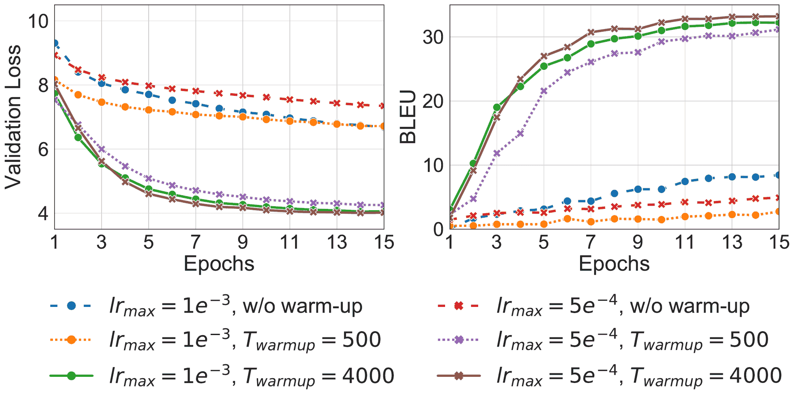
Все шесть кривых — это один и тот же Post-LN трансформер на переводе IWSLT14 De-En с оптимизатором Adam (источник); отличаются только максимальный learning rate и длина warmup. Слева ошибка на валидации, справа BLEU, все шкалы линейные. Три запуска доходят до цели: зелёный и коричневый сплошные — $T_{\text{warmup}} = 4000$ при обоих значениях $lr$, — и фиолетовый пунктирный, $T_{\text{warmup}} = 500$ при $lr = 5 \cdot 10^{-4}$; они дают лосс около $4$ и BLEU за $30$. Три оставшихся застревают на лоссе около $7$: без warmup модель добирается лишь до BLEU около $8$ при $lr = 10^{-3}$ (синий) и около $4.5$ при $lr = 5 \cdot 10^{-4}$ (красный). Хуже всех оранжевый — короткий warmup в 500 шагов при большом $lr = 10^{-3}$: он проигрывает даже полному отсутствию warmup. Разрыв тут не в десятые доли BLEU, а в разы: это не потеря качества, а несостоявшееся обучение. Post-LN трансформер глубиной больше примерно 20 слоёв обучить очень трудно: нужны тщательно подобранный warmup, малый learning rate и удачная инициализация, и всё равно обучение регулярно расходится.
Pre-LN варианты уверенно обучаются на 100+ слоях: у PaLM их 118, у MT-NLG — 105.
Именно этот разрыв и решил вопрос. Когда индустрия пошла в масштаб, альтернативы Pre-LN просто не осталось: Llama, Mistral, Qwen, Gemma, DeepSeek — все Pre-LN.
Post-LN проиграл не потому, что был плохой схемой. При равной глубине он нередко даёт чуть лучшее итоговое качество.
Причина в том же прямом пути, который спасает Pre-LN: норма остаточной ветви растёт от слоя к слою, и вклад каждого отдельного глубокого слоя на её фоне «размывается». Грубо говоря, глубокие слои в Pre-LN работают вполсилы.
Но возможность вообще обучить стослойную модель перевешивает несколько десятых пункта качества на двадцатислойной. Отсюда и появились гибриды — см. sandwich-norm ниже.
Что понадобилось добавить на больших масштабах
На масштабе в десятки миллиардов параметров всплыла отдельная проблема: скалярные произведения $q^\top k$ внутри внимания начинают неограниченно расти по ходу обучения. В bf16 это выливается в переполнение и резкие скачки лосса — обучение «взрывается» на ровном месте.
QK-norm нормализует запросы и ключи до вычисления скоров: $$\text{Attn} = \text{softmax}\!\left(\frac{\text{LN}(q)\,\text{LN}(k)^\top}{\sqrt{d_k}}\right) V$$
Норма векторов фиксирована, значит и логиты ограничены — источник переполнения исчезает. Приём стал стандартным в новых моделях именно как страховка от расходимости.
Sandwich norm (или double norm) ставит нормализацию и перед подслоем, и после него: $$x_{l+1} = x_l + \text{LN}_{\text{post}}\Big(\text{Sublayer}\big(\text{LN}_{\text{pre}}(x_l)\big)\Big)$$
Остаточная связь при этом остаётся сквозной — то есть устойчивость Pre-LN сохраняется. Но вторая нормализация ограничивает вклад подслоя, не давая норме остаточной ветви расти бесконтрольно, что частично возвращает качество Post-LN.
Схему использует, в частности, Gemma 2.
Ещё один приём — дополнительная нормализация сразу после слоя эмбеддингов, до первого блока трансформера.
История появления показательна: команда BLOOM в предварительных экспериментах обнаружила, что обучение модели на 104 млрд параметров в fp16 расходится, и добавление embedding LayerNorm было тем, что позволило довести обучение до конца.
Это иллюстрирует общий принцип: чем больше модель, тем дороже стоит расходимость и тем охотнее закладывают избыточную стабилизацию заранее.
- Убрать warmup в Post-LN модели. Обучение почти наверняка не сойдётся: сквозной остаточной связи нет, ранние шаги с большим learning rate ломают сеть, и она уже не выбирается на нормальное качество.
- «Pre-LN лучше во всём». Он устойчивее, но при равной глубине может уступать Post-LN по качеству. Выигрывает он тем, что позволяет взять глубину, недоступную Post-LN.
- Считать выбор схемы мелкой деталью реализации. На масштабах в десятки миллиардов параметров именно расположение нормализации чаще всего определяет, сойдётся обучение или нет.
- Путать QK-norm с нормализацией выхода внимания. QK-norm применяется к запросам и ключам до softmax и решает задачу переполнения логитов; нормализация выхода подслоя — это уже sandwich-norm, другая проблема.
В чём разница между Post-LN и Pre-LN?
В Post-LN нормализация применяется к сумме входа и результата подслоя, поэтому остаточная связь не сквозная. В Pre-LN нормализуется вход подслоя, а сумма остаётся нетронутой, и между входом и выходом блока существует прямой путь без преобразований.
Почему Post-LN требует warmup, а Pre-LN — нет?
Потому что в Post-LN градиент на каждом слое проходит через нормализацию и его норма систематически искажается, что на глубоких сетях приводит к расхождению при большом learning rate. В Pre-LN прямой остаточный путь доносит градиент до первых слоёв почти без искажения, поэтому обучение стартует устойчиво и с более высоким шагом.
Какой глубины моделей достигают обе схемы?
Post-LN тяжело обучается глубже примерно двадцати слоёв даже при аккуратном warmup и малом learning rate. Pre-LN уверенно работает на сотне слоёв и больше: 118 у PaLM, 105 у MT-NLG. Именно этот разрыв и сделал Pre-LN стандартом.
Есть ли у Pre-LN недостаток?
Да: норма остаточной ветви растёт от слоя к слою, поэтому вклад глубоких слоёв на её фоне размывается, и при равной глубине качество может быть чуть ниже, чем у Post-LN. Компромиссом служит sandwich-norm, где нормализация стоит и до подслоя, и после него, но остаточная связь остаётся сквозной.
Что такое QK-norm и какую проблему он решает?
Нормализация запросов и ключей перед вычислением скоров внимания. Она ограничивает рост логитов внимания, который на больших масштабах вызывает численное переполнение в bf16 и резкие скачки лосса, поэтому в новых моделях её ставят как страховку от расходимости.
Зачем нужен embedding LayerNorm?
Это дополнительная нормализация сразу после эмбеддингов, до первого блока. Она страхует от расходимости на самом входе сети: у команды BLOOM без неё предварительное обучение модели на 104 млрд параметров в fp16 разваливалось.
-
RMSNorm
RMSNorm (Root Mean Square Normalization) — слой нормализации, который делит вектор признаков на его среднеквадратичное значение, не вычитая при этом среднего.
Пусть на вход подан вектор $\mathbf{x} \in \mathbb{R}^d$, то есть представление одного токена из $d$ чисел: $$ \mathbf{x} = [x_1, x_2, \dots, x_d] $$
Тогда $$ \mathrm{RMSNorm}(\mathbf{x}) = \boldsymbol{\gamma} \odot \frac{\mathbf{x}}{\mathrm{RMS}(\mathbf{x})}, \qquad \mathrm{RMS}(\mathbf{x}) = \sqrt{ \frac{1}{d} \sum_{i=1}^{d} x_i^2 + \varepsilon } $$
- $\boldsymbol{\gamma} \in \mathbb{R}^d$ — обучаемый вектор масштабов (по одному числу на каждый признак);
- $\odot$ — поэлементное умножение;
- $\varepsilon$ — маленькое число (обычно $10^{-6}$), чтобы не делить на ноль.
$\mathrm{RMS}(\mathbf{x})$ — это «типичная величина координаты вектора»: возвели все координаты в квадрат, усреднили, извлекли корень. Деление на неё означает: «приведи вектор к стандартному размеру, направление не трогай».
То есть RMSNorm — это регулятор громкости. Сигнал (какие координаты больше, какие меньше, каких знаков) остаётся прежним, меняется только его общий масштаб. А обучаемый $\boldsymbol{\gamma}$ потом позволяет модели самой решить, какие признаки после этого сделать погромче, а какие потише.
Зачем вообще нужна нормализация
В глубокой сети выход каждого слоя подаётся на вход следующему. Если по мере прохода через слои масштаб активаций плавно растёт (или падает), то на глубине в 30–80 слоёв он уезжает на порядки: градиенты либо взрываются, либо затухают, а подобранный learning rate перестаёт подходить всем слоям сразу.
Нормализация ставит на каждом слое «шлагбаум»: что бы ни пришло на вход, дальше пойдёт вектор фиксированного масштаба. Обучение становится устойчивым, и можно брать больший learning rate.
Заметим, что $\mathrm{RMS}(\mathbf{x}) = \dfrac{\|\mathbf{x}\|_2}{\sqrt{d}}$ (при $\varepsilon \to 0$). Тогда $$ \left\| \frac{\mathbf{x}}{\mathrm{RMS}(\mathbf{x})} \right\|_2 = \frac{\|\mathbf{x}\|_2 \cdot \sqrt{d}}{\|\mathbf{x}\|_2} = \sqrt{d} $$
То есть RMSNorm проецирует любой вектор на сферу радиуса $\sqrt{d}$, сохраняя направление. Это и есть точный смысл фразы «меняет длину, не меняет направление».
Сравнение с соседями
$$ \mathrm{BatchNorm}(\mathbf{x}) = \boldsymbol{\gamma} \odot \frac{\mathbf{x} - \mu}{\sqrt{\sigma^2 + \varepsilon}} + \boldsymbol{\beta}, \qquad \mu = \frac{1}{m} \sum_{i=1}^{m} \mathbf{x}_i, \quad \sigma^2 = \frac{1}{m} \sum_{i=1}^{m} (\mathbf{x}_i - \mu)^2 $$ где $m$ — размер батча. Среднее и дисперсия считаются по всем объектам батча отдельно для каждого признака: «насколько велик признак №17 у типичного объекта в этой пачке».
Статистики BatchNorm зависят от того, кто ещё попал в батч. Для NLP это плохо сразу по трём причинам:
- последовательности разной длины, паддинг искажает среднее и дисперсию;
- при генерации батч часто равен единице — статистику считать не по чему, приходится держать скользящие средние с обучения;
- поведение на обучении и на инференсе различается, что даёт трудноуловимые расхождения.
Поэтому в трансформерах нормализуют внутри одного вектора, а не по батчу.
$$ \mathrm{LayerNorm}(\mathbf{x}) = \boldsymbol{\gamma} \odot \frac{\mathbf{x} - \mu}{\sqrt{\sigma^2 + \varepsilon}} + \boldsymbol{\beta}, \qquad \mu = \frac{1}{d} \sum_{i=1}^{d} x_i, \quad \sigma^2 = \frac{1}{d} \sum_{i=1}^{d} (x_i - \mu)^2 $$
Здесь среднее и дисперсия считаются по признакам одного токена. Никакой зависимости от батча нет — это ровно то, что нужно трансформеру. LayerNorm делает две вещи: центрирует (вычитает среднее) и масштабирует (делит на стандартное отклонение).
RMSNorm — это LayerNorm, у которого выбросили первую из двух операций.
Возьмём $\mathbf{x} = [3,\ -1,\ 4,\ -2]$, то есть $d = 4$. Пусть $\boldsymbol{\gamma} = \mathbf{1}$, $\boldsymbol{\beta} = \mathbf{0}$, $\varepsilon$ пренебрежимо мал.
LayerNorm. Среднее $\mu = (3 - 1 + 4 - 2)/4 = 1$. Дисперсия $\sigma^2 = (4 + 4 + 9 + 9)/4 = 6.5$, значит $\sigma \approx 2.55$. Результат: $$ \left[\tfrac{2}{2.55},\ \tfrac{-2}{2.55},\ \tfrac{3}{2.55},\ \tfrac{-3}{2.55}\right] \approx [0.78,\ -0.78,\ 1.18,\ -1.18] $$
RMSNorm. $\mathrm{RMS} = \sqrt{(9 + 1 + 16 + 4)/4} = \sqrt{7.5} \approx 2.74$. Результат: $$ \left[\tfrac{3}{2.74},\ \tfrac{-1}{2.74},\ \tfrac{4}{2.74},\ \tfrac{-2}{2.74}\right] \approx [1.10,\ -0.37,\ 1.46,\ -0.73] $$
Сравните пропорции. В исходном векторе вторая координата в три раза меньше первой по модулю ($1$ против $3$). После RMSNorm так и осталось: $0.37$ против $1.10$ — ровно втрое. После LayerNorm они стали равными по модулю ($0.78$ и $0.78$): вычитание среднего $\mu = 1$ перекроило соотношения между координатами.
Вот это и означает «RMSNorm сохраняет направление, LayerNorm меняет». RMSNorm умножает все координаты на одно и то же число, LayerNorm сначала сдвигает вектор, а сдвиг — это уже другое направление.
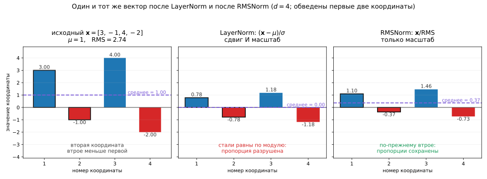
Тот же вектор $[3, -1, 4, -2]$, что и в примере выше; чёрной рамкой обведены первые две координаты, за которыми и надо следить. Слева вторая координата втрое меньше первой по модулю. В центре, после LayerNorm, они стали равны по модулю — $0.78$ и $-0.78$: вычитание среднего $\mu = 1$ сдвинуло все столбики и перекроило соотношения между ними. Справа, после RMSNorm, соотношение то же самое, $1.10$ и $-0.37$, ровно втрое, — все четыре координаты просто поделены на одно число $2.74$. Фиолетовая пунктирная линия — среднее: LayerNorm обнуляет его по построению, RMSNorm оставляет как есть, $0.37$. Оригинальная работа (Zhang & Sennrich, 2019) показала эмпирически: почти весь стабилизирующий эффект LayerNorm даёт re-scaling (приведение масштаба), а не re-centering (вычитание среднего).
Причина в том, что за нормализацией в трансформере сразу идёт линейный слой с обучаемым сдвигом (bias). Постоянная составляющая, которую вычитал бы LayerNorm, всё равно может быть скомпенсирована этим сдвигом — модель просто научится ей. А вот разъехавшийся масштаб компенсировать нечем: он умножается, а не прибавляется.
LayerNorm RMSNorm Центрирование (вычитание среднего): + - Масштабирование (нормировка): + (по $\sigma$) + (по RMS) Сохранение направления вектора: Меняет направление Сохраняет направление Обучаемые параметры: $\boldsymbol{\gamma}$ и $\boldsymbol{\beta}$ ($2d$ чисел) только $\boldsymbol{\gamma}$ ($d$ чисел) Стоимость вычислений: Выше (нужно среднее, затем дисперсия — два прохода) Ниже (одна сумма квадратов и корень) Численная стабильность на FP16/BF16: Иногда хуже Лучше Тип нормализации: По среднему и стандартному отклонению По среднеквадратичному значению Используется в: Классические Transformer (BERT, GPT-2) Современные LLM (LLaMA, Falcon, MPT, Mistral, Gemma) Появление: 2016 2019 На первый взгляд разница копеечная: одно вычитание. Но считать надо аккуратно.
LayerNorm требует двух проходов по вектору: сначала сумма для среднего, потом сумма квадратов отклонений от него. Между проходами нужна синхронизация внутри GPU-блока. RMSNorm обходится одним проходом: сумма квадратов, корень, деление.
Теперь умножьте это на 2 нормализации в каждом блоке трансформера, 80 блоков, тысячи токенов в батче и миллионы шагов обучения — и «копеечная» разница превращается в единицы процентов от всего времени обучения. В оригинальной статье сообщается об ускорении на 7–64% в зависимости от задачи.
Здесь легко ошибиться в рассуждении. Дело не в том, что вычитание само по себе «плохо», а в том, что при вычислении $\sigma^2 = \overline{x^2} - \mu^2$ два больших почти равных числа вычитаются друг из друга — классическая катастрофическая потеря значимости: старшие разряды сокращаются, и результат определяется мусором в младших. У
fp16мантисса всего 10 бит, уbf16— 7, запас точности крошечный.RMSNorm вычисляет только $\overline{x^2}$ — сумму заведомо неотрицательных чисел, где такого сокращения не бывает в принципе. Отсюда и репутация более устойчивого слоя при обучении в половинной точности.
- «RMSNorm — это LayerNorm без обучаемых параметров» — нет, $\boldsymbol{\gamma}$ остаётся. Выбрасывается сдвиг $\boldsymbol{\beta}$ и вычитание среднего, а масштабы модель по-прежнему учит.
- «RMSNorm нормирует по батчу» — нет, только внутри одного вектора признаков одного токена; поведение не зависит от того, кто ещё попал в батч.
- «Раз RMSNorm проще, он и качество даёт хуже» — эмпирически качество сравнимо, а иногда чуть лучше. Поэтому и произошёл массовый переход.
- Забыть про $\varepsilon$ внутри корня. Если вектор оказался нулевым (например, из-за паддинга или зануления дропаутом), без $\varepsilon$ получится деление на ноль и
NaNво всех последующих слоях.
Не путайте чем нормализуют (LayerNorm или RMSNorm) с тем, куда ставят нормализацию:
- post-norm (оригинальный Transformer 2017): нормализация после residual-сложения;
- pre-norm (все современные LLM): нормализация перед вниманием и перед FFN, а residual-путь остаётся чистым.
Именно pre-norm сделал возможным обучение очень глубоких моделей без разогрева learning rate. Современные LLM используют сочетание «pre-norm + RMSNorm», но это два независимых решения.
- Pre-Norm и Post-Norm в LLM — вторая половина вопроса о нормализации: не «чем нормировать», а «где ставить», плюс QK-norm, sandwich-norm и embedding LayerNorm.
- Mistral 7B — RMSNorm как часть стандартного современного стека.
Что такое RMSNorm и как он определяется?
RMSNorm нормирует вектор на его среднеквадратичное значение: $\mathrm{RMSNorm}(\mathbf{x}) = \boldsymbol{\gamma} \odot \mathbf{x} / \mathrm{RMS}(\mathbf{x})$, где $\mathrm{RMS}(\mathbf{x}) = \sqrt{\frac{1}{d}\sum x_i^2 + \varepsilon}$. Геометрически это проекция вектора на сферу радиуса $\sqrt{d}$ с сохранением направления.
Чем RMSNorm отличается от LayerNorm?
LayerNorm вычитает среднее (центрирует) и делит на стандартное отклонение, имея параметры $\boldsymbol{\gamma}$ и $\boldsymbol{\beta}$. RMSNorm пропускает центрирование и сдвиг: делит только на RMS и масштабирует на $\boldsymbol{\gamma}$. Поэтому RMSNorm быстрее и численно стабильнее на FP16/BF16.
Почему центрирование оказалось необязательным?
Zhang & Sennrich показали, что стабилизирующий эффект LayerNorm обеспечивает главным образом приведение масштаба (re-scaling), а не вычитание среднего (re-centering). Постоянную составляющую всё равно может скомпенсировать bias следующего линейного слоя, а разъехавшийся масштаб — не может.
Почему RMSNorm лучше подходит для FP16/BF16?
При вычислении дисперсии в LayerNorm вычитаются два близких больших числа ($\overline{x^2} - \mu^2$), что даёт катастрофическую потерю значимости при короткой мантиссе. RMSNorm суммирует только квадраты — неотрицательные величины, где такого сокращения не возникает.
Почему в трансформерах не используют BatchNorm?
Его статистики зависят от состава батча: последовательности разной длины и паддинг искажают среднее, при генерации батч часто равен единице, а поведение на обучении и инференсе различается. LayerNorm и RMSNorm считают статистики внутри одного вектора и от батча не зависят.
Насколько реально экономит RMSNorm?
LayerNorm требует двух проходов по вектору (среднее, затем дисперсия), RMSNorm — одного. С учётом двух нормализаций на блок и десятков блоков это даёт по оригинальной работе ускорение на 7–64% в зависимости от задачи и реализации.
В каких моделях используется RMSNorm вместо LayerNorm?
LLaMA (все версии), Falcon, MPT, Mistral, Gemma и большинство современных open-source LLM. Классические BERT и GPT-2 использовали LayerNorm. Обычно RMSNorm применяют вместе со схемой pre-norm, но это два независимых архитектурных решения.
-
MoE: смесь экспертов
MoE (Mixture of Experts) — это архитектура нейронных сетей, в которой есть несколько независимых подмоделей — экспертов, и для каждого входа активируется только их небольшое подмножество.
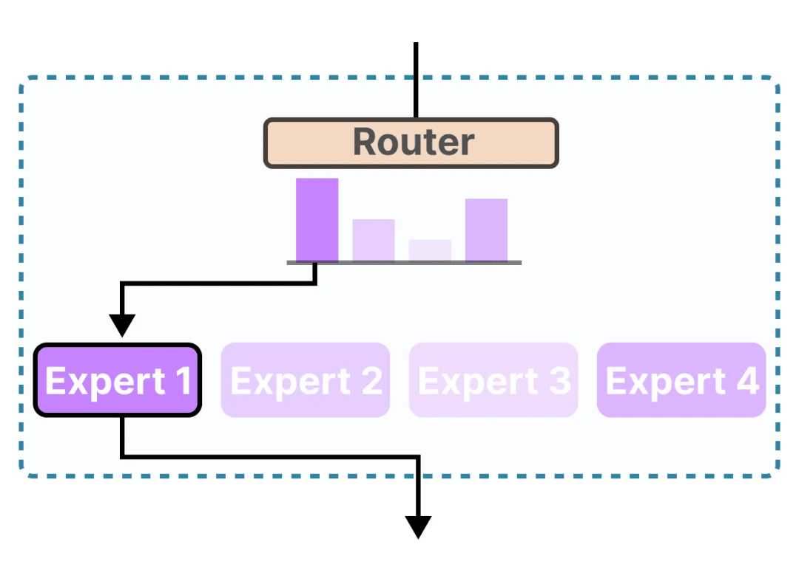
В обычном («плотном», dense) трансформере каждый токен проходит через все веса модели. Хотите модель умнее — увеличивайте слои, и ровно во столько же раз вырастет цена обработки каждого токена. Знания и вычисления жёстко связаны.
MoE эту связку разрывает. Вместо одного большого блока FFN ставится восемь блоков поменьше плюс маленький «диспетчер» (роутер), который для каждого токена выбирает, скажем, двух из восьми. В модели теперь в восемь раз больше весов, но каждый токен по-прежнему проходит только через два блока — считаем мы столько же, а знать модель может кратно больше.
Аналогия: вместо одного врача-универсала — поликлиника из восьми специалистов и регистратура, которая направляет пациента к двоим нужным. Штат вырос, приём одного пациента не подорожал.
Вместо использования всех параметров модели для каждого токена применяется динамическое разбиение нагрузки: разные токены обрабатываются разными экспертами.
Таким образом, MoE позволяет создавать «разреженные» модели (sparse models), где общий размер параметров может быть сотни миллиардов, но при этом на каждом шаге активно лишь 10–20% сети.
- Это снижает вычислительную нагрузку при сохранении высокой ёмкости модели;
- Именно такой подход использовался в GLaM (Google, 2021), Switch Transformer (2022), Mixtral (Mistral, 2023), DeepSeekMoE (2024) и др.
- 8 экспертов в каждом MoE-слое, роутер выбирает top-2.
- Всего параметров: 46.7 млрд (не 56 — часть весов, вниманиe и эмбеддинги, общая для всех экспертов).
- Активных параметров на токен: ≈ 12.9 млрд.
Что это значит на практике: скорость генерации примерно как у плотной модели на 13 млрд параметров, а качество — на уровне плотных моделей на 30–70 млрд. Плата — память: в VRAM надо загрузить все 46.7 млрд весов, потому что заранее неизвестно, какие эксперты понадобятся следующему токену.
За этим стоит эмпирическое наблюдение из работ по масштабированию: качество модели растёт и от числа параметров, и от объёма вычислений, но это два разных рычага.
Плотная модель дёргает оба рычага сразу и потому упирается в стоимость обучения и инференса. MoE позволяет тянуть только первый: параметров становится больше, вычислений — нет. Каждый эксперт при этом видит лишь свою долю токенов и специализируется на ней, вместо того чтобы усреднённые веса пытались обслужить весь язык сразу.
Разумеется, бесплатного тут ничего нет: платим памятью, усложнением обучения и коммуникацией между устройствами. Об этом ниже.
Каждый MoE-слой состоит из:
- Эксперты — набор независимых MLP-слоёв, каждый со своими весами
- Router (маршрутизатор), или сеть шлюзов — небольшая сеть, которая для каждого токена вычисляет распределение вероятностей по экспертам. Решает, какие токены отправлять тем или иным экспертам
На каждом уровне LLM с MoE мы можем найти некоторых (относительно специализированных) экспертов:
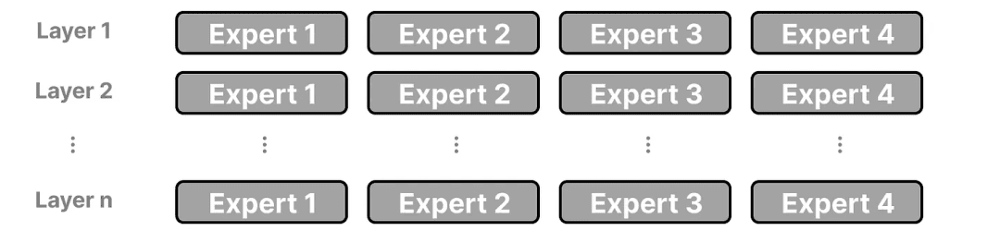
Важно, что эти "эксперты" не являются узкоспециализированными специалистами в конкретной области, как эксперты по "психологии" или "биологии". На самом деле, они усваивают больше синтаксической информации на лексическом уровне и отлично справляются с обработкой определенных токенов в определенных контекстах.
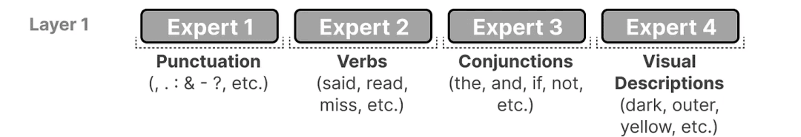
Маршрутизатор (или сеть шлюзов) отвечает за выбор наиболее подходящего эксперта для каждого входа:
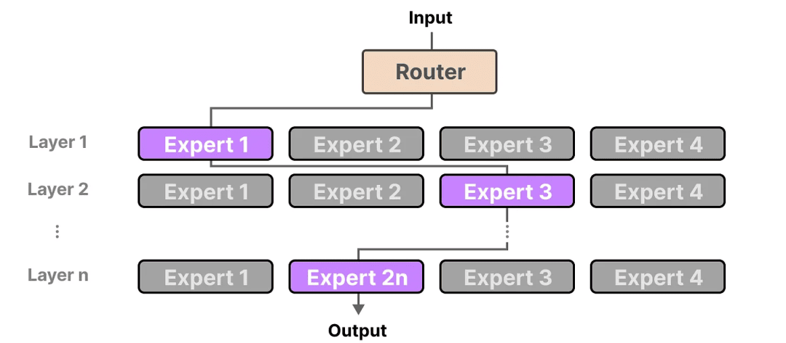
Чтобы понять, что такое эксперты и как они работают, сначала нужно понять, что MoE заменяет плотные слои (MLP, FFNN).
FFNN обычно применяются после слоёв нормализации:
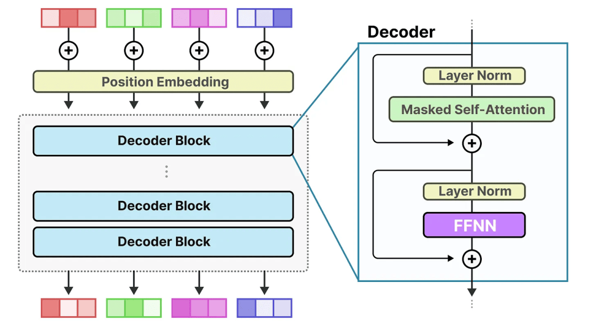
Принцип работы MoE похож на принцип работы sparse models (разреженных моделей), которые используют только некоторую часть своих нейронов для обработки данных. За счет этого в момент времени задействуется только некоторое подмножество активных параметров, что снижает вычислительную нагрузку.
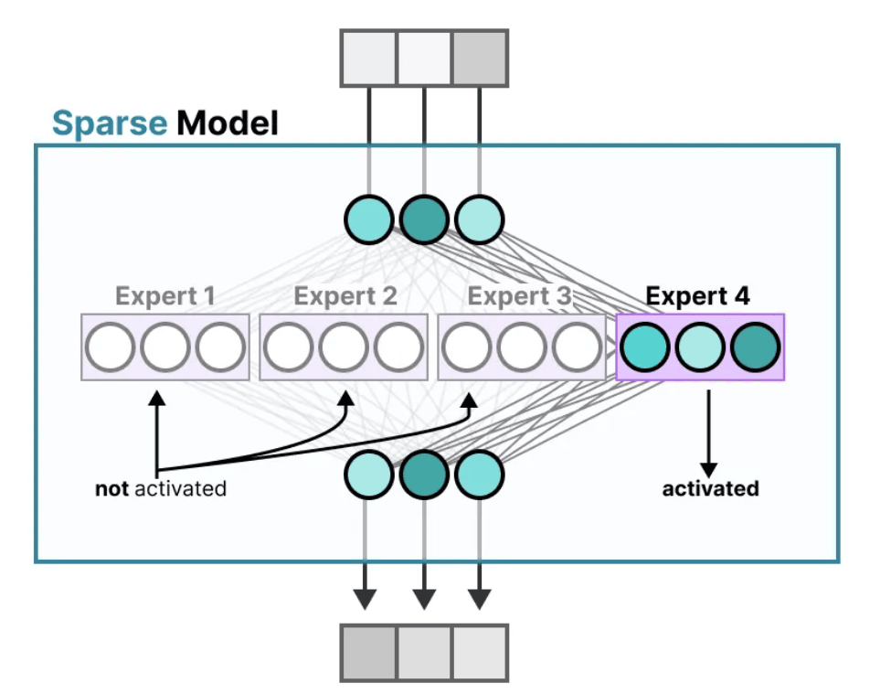
Задавая вопрос, мы можем выбрать эксперта, наиболее подходящего для данного запроса:
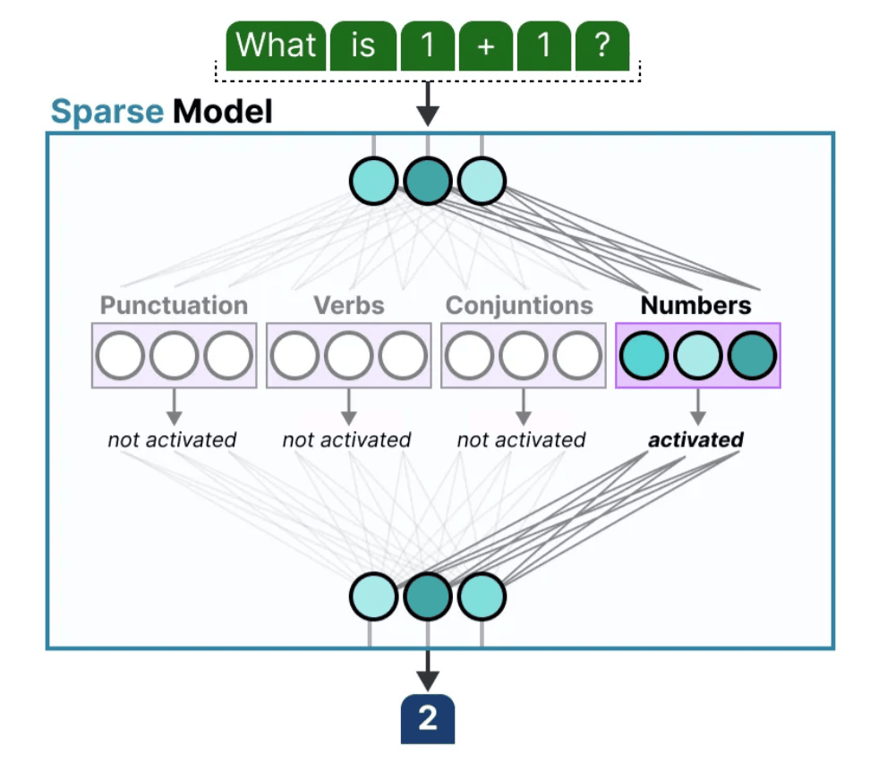
Пример можно найти в статье Mixtral 8x7B, где каждый токен окрашен в цвет первого выбора эксперта:
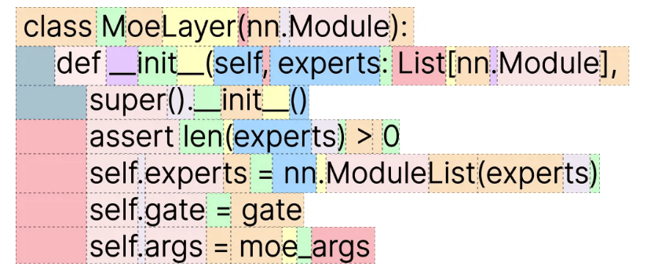
Поскольку большинство LLM имеют несколько блоков декодера, то поданный на вход текст пройдет через несколько экспертов перед генерацией текста:
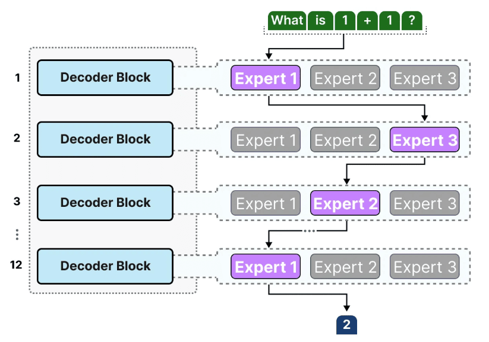
Выбранные эксперты, вероятно, различаются между токенами, что приводит к различным "путям":
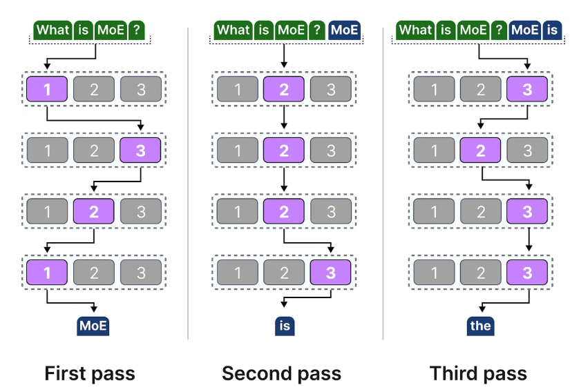
На каждом шаге генерации разные токены активируют разных экспертов, что формирует уникальные "пути" внутри MoE-слоёв.
Это делает модель более гибкой и эффективной: она не тратит вычисления на всех экспертов, а использует только тех, которые наиболее релевантны текущему контексту.
Если мы обновим нашу визуализацию блока декодера согласно определению MoE, то она будет содержать больше FFNN (один для каждого эксперта):
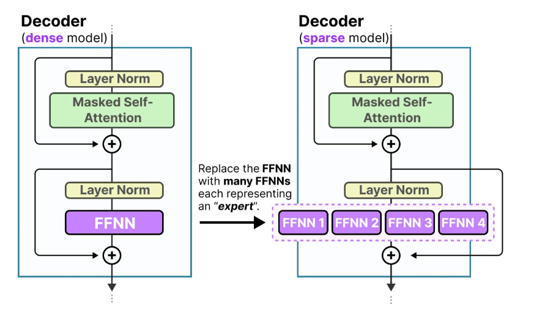
Блок декодера теперь имеет несколько FFNN (каждый является "экспертом"), которые он может использовать во время генерации.
Router
Роутер также является FFNN и используется для выбора эксперта на основе определенного входа. На выходе он выдаёт вероятности, по которым выбирается наиболее подходящий эксперт:
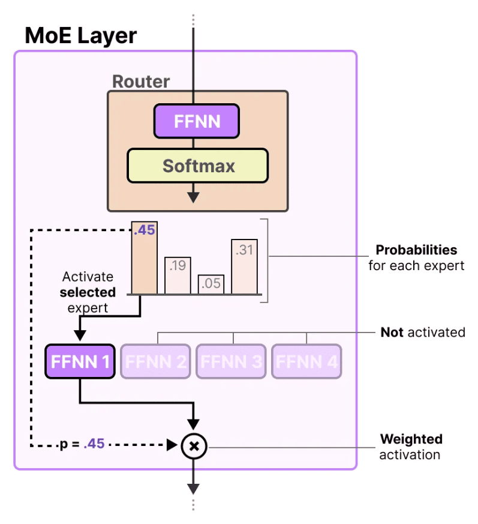
Экспертный слой возвращает выход выбранного эксперта, умноженный на значение шлюза, то есть на вероятность выбора. Роутер вместе с экспертами (из которых только несколько выбраны) образуют MoE-слой:
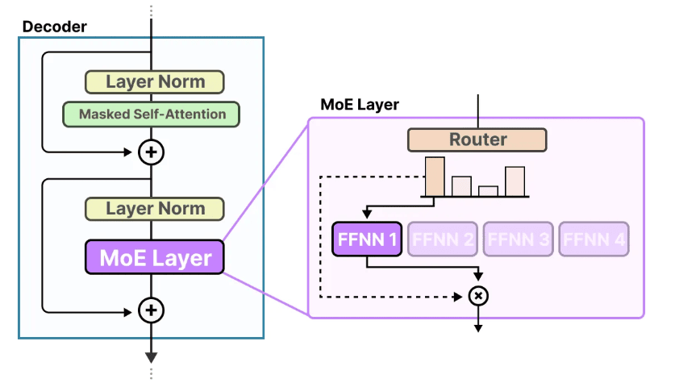
Данный MoE-слой может быть как разреженной (sparse), так и плотной (dense) смесью экспертов. Оба используют роутер для выбора экспертов, но разреженная MoE выбирает только несколько экспертов, в то время как плотная MoE выбирает всех экспертов, но потенциально в разных распределениях.
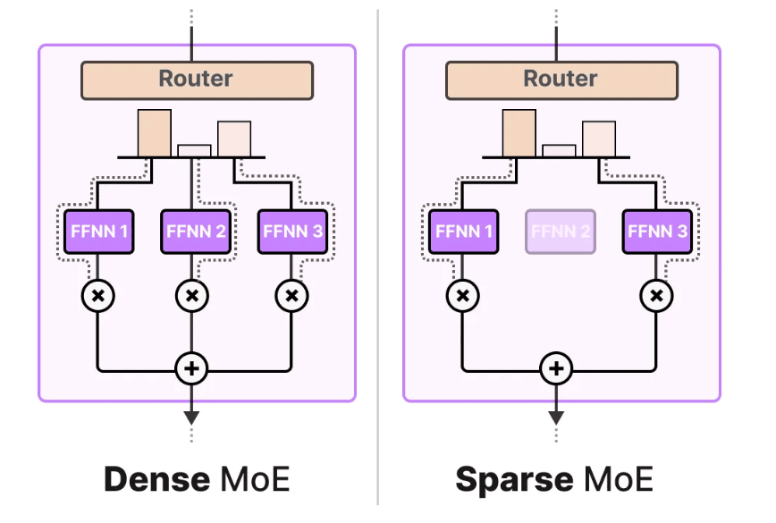
На сегодняшний день, когда вы видите "MoE", это обычно будет разреженная MoE, так как она позволяет использовать только несколько экспертов, что является более вычислительно эффективным для LLM.
Выбор экспертов
Сеть шлюзов (gating network) — один из самых важных компонентов любой MoE, потому что она не только решает, какие эксперты выбирать во время генерации, но также решает, каких экспертов использовать и во время обучения.
В своей наиболее базовой форме, мы умножаем вход $x$ на матрицу весов роутера $W$:
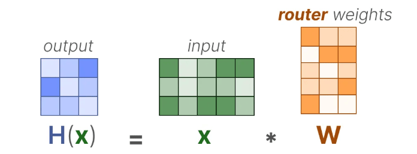
После этого применяется softmax для получения вероятностей выбора каждого эксперта:
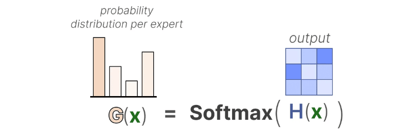
Роутер использует это распределение вероятностей для выбора наиболее подходящего эксперта для данного входа. Наконец, мы умножаем выход каждого роутера на каждого выбранного эксперта и суммируем результаты:
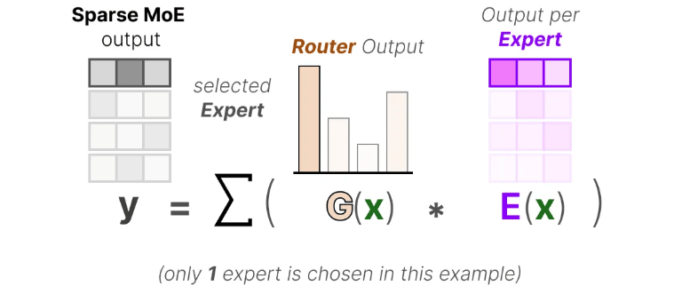
Давайте теперь рассмотрим все этапы вместе: как вход проходит через роутер и экспертов:
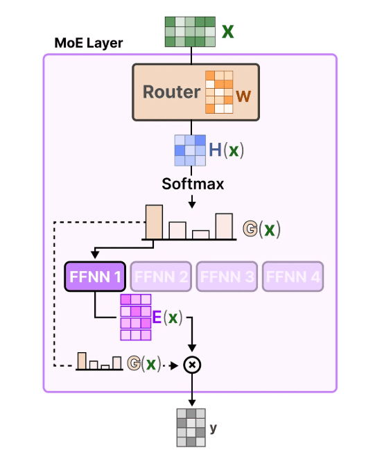
Обучение роутера
Роутер в MoE обучается совместно с экспертами через стандартный процесс обратного распространения ошибки. Градиенты от основной функции потерь (например, cross-entropy для языкового моделирования) проходят через роутер и обновляют его веса $W$.
Формально, если основной лосс $\mathcal{L}_{main}$, то градиенты вычисляются как: $$ \frac{\partial \mathcal{L}_{main}}{\partial W} = \frac{\partial \mathcal{L}_{main}}{\partial y} \cdot \frac{\partial y}{\partial \textcolor{orange}{G(x)}} \cdot \frac{\partial \textcolor{orange}{G(x)}}{\partial W} $$ где $y$ — выход MoE-слоя, $\textcolor{orange}{G(x)} = \text{softmax}(xW)$ — выход роутера.
Проблема: если роутер обучается только на основной функции потерь, возникает явление коллапса роутера (router collapse):
- Роутер начинает всегда выбирать одного и того же "сильного" эксперта
- Другие эксперты почти не используются и не обучаются
- Это приводит к неэффективному использованию модели и переобучению
- Нарушается принцип специализации экспертов
Это происходит потому, что роутер оптимизирует только качество предсказания, не учитывая равномерность распределения нагрузки между экспертами.
Для предотвращения коллапса роутера используется вспомогательная функция потерь (auxiliary loss) — дополнительное слагаемое в общей функции потерь, которое поощряет равномерное использование экспертов.
Общая функция потерь становится: $$ \mathcal{L}_{total} = \mathcal{L}_{main} + \alpha \cdot \mathcal{L}_{aux} $$ где $\alpha$ — коэффициент, контролирующий важность балансировки (обычно $0.01$–$0.1$).
Наиболее распространённые типы вспомогательной функции потерь:
1. Load Balancing Loss — функция потерь для балансировки нагрузки:
Поощряет равномерное распределение токенов между экспертами. Пример из Switch Transformer: $$ \mathcal{L}_{load} = \frac{N}{E} \sum_{e=1}^{E} f_e \cdot P_e $$ где:
- $N$ — количество токенов в батче
- $E$ — количество экспертов
- $f_e = \frac{1}{N} \sum_{i=1}^{N} \mathbb{1}[\text{эксперт } e \text{ выбран для токена } i]$ — доля токенов, направленных к эксперту $e$
- $P_e = \frac{1}{N} \sum_{i=1}^{N} G_e(x_i)$ — средняя вероятность выбора эксперта $e$ по всем токенам
Минимизация этой функции потерь заставляет $f_e$ и $P_e$ быть близкими, что означает равномерное использование экспертов.
2. Expert Diversity Loss — функция потерь для разнообразия экспертов:
Поощряет разнообразие в выборе экспертов для разных токенов: $$ \mathcal{L}_{diversity} = -\sum_{e=1}^{E} \sum_{i=1}^{N} G_e(x_i) \log G_e(x_i) $$ Это энтропия распределения, максимизация которой увеличивает неопределённость и разнообразие выбора.
В Switch Transformer используется функция потерь для балансировки нагрузки: $$ \mathcal{L}_{aux} = \alpha \cdot \frac{N}{E} \sum_{e=1}^{E} f_e \cdot P_e $$ где $\alpha = 0.01$ (1% от основного лосса).
Этот лосс:
- Вычисляется для каждого MoE-слоя отдельно
- Суммируется по всем слоям
- Добавляется к основной функции потерь языкового моделирования
- Помогает избежать ситуации, когда один эксперт обрабатывает 90% токенов
Ответ: да, обычно нужна вспомогательная функция потерь, но не отдельная функция потерь для роутера как таковая. Вспомогательное слагаемое добавляется к основному и обучается совместно.
Почему это важно:
- Без вспомогательной функции потерь роутер склонен к коллапсу
- С вспомогательной функцией потерь эксперты используются более равномерно
- Это улучшает общую производительность модели
- Позволяет экспертам специализироваться на разных типах токенов
Альтернативные подходы:
- Noisy Top-K Gating: добавление шума к логитам перед softmax (используется в некоторых моделях)
- Expert Choice: вместо Token Choice используется Expert Choice, где каждый эксперт выбирает топ-$k$ токенов
- Адаптивные веса: динамическое изменение $\alpha$ в процессе обучения
При обучении MoE-моделей:
- Начните с малого $\alpha$ (0.01) и увеличивайте при необходимости
- Мониторьте распределение нагрузки: следите за тем, сколько токенов обрабатывает каждый эксперт
- Используйте разогрев: постепенно увеличивайте вес вспомогательной функции потерь в начале обучения
- Балансируйте: слишком большой $\alpha$ может ухудшить качество модели, слишком маленький — не решит проблему коллапса
- Экспериментируйте: разные типы вспомогательной функции потерь работают лучше для разных архитектур
Ёмкость эксперта и отбрасывание токенов
На практике у балансировки есть ещё одна, чисто инженерная причина. Эксперты физически лежат на разных GPU, и под каждого заранее выделяется буфер фиксированного размера. Его вместимость задаётся формулой $$ \text{capacity} = \text{capacity factor} \cdot \frac{N}{E} $$ где $N$ — число токенов в батче, $E$ — число экспертов, а capacity factor — коэффициент запаса, обычно $1.0$–$1.5$.
Смысл: $N/E$ — это сколько токенов досталось бы эксперту при идеально равномерном распределении, а capacity factor даёт запас на неизбежный перекос.
Если роутер направил эксперту больше токенов, чем вмещает буфер, лишние просто не обрабатываются этим экспертом. Их представление проходит дальше по residual-связи без изменений — как будто MoE-слоя для них не было. Это называется token dropping.
Отсюда несколько неочевидных следствий:
- Плохая балансировка — не только «эксперты не доучиваются», но и прямая потеря данных: часть токенов уходит из слоя необработанной.
- Большой capacity factor снижает потери, но раздувает память и вычисления: буферы под каждого эксперта резервируются заранее и в основном простаивают.
- Результат для конкретного токена начинает зависеть от того, кто ещё попал в тот же батч. Два одинаковых промпта в разных батчах могут дать разный ответ — источник трудновоспроизводимых багов на инференсе.
Раскладка экспертов по устройствам порождает свою схему параллелизма — expert parallelism. Каждая GPU держит часть экспертов, а токены после решения роутера нужно физически переслать на нужные карты, обработать и вернуть обратно.
Делается это коллективной операцией all-to-all (каждое устройство обменивается данными с каждым), причём дважды на каждый MoE-слой: туда и обратно. При десятках MoE-слоёв это становится одной из главных статей расхода времени, а на медленной сети — вообще узким местом.
Отсюда практический вывод, который часто удивляет: MoE выгоден в первую очередь на больших батчах. Там время пересылки амортизируется большим объёмом полезной работы. При батче из одного запроса накладные расходы могут съесть весь теоретический выигрыш.
Load Balancing
Эта простая функция $G(x)$ часто приводит к тому, что роутер выбирает того же эксперта, так как некоторые эксперты могут обучаться быстрее других.
Не только будет неравномерное распределение выбранных экспертов, но и некоторые эксперты будут почти не обучаться. Это приводит к проблемам как во время обучения, так и во время генерации.
Вместо этого мы хотим равное внимание к экспертам как во время обучения, так и во время генерации, что мы называем балансировкой нагрузки (load balancing). В некотором смысле это способ предотвратить переобучение на одних и тех же экспертах.
Один из методов балансировки роутера — KeepTopK. Вводя обучаемый гауссов шум, мы можем предотвратить то, что одни и те же эксперты всегда будут выбираться:
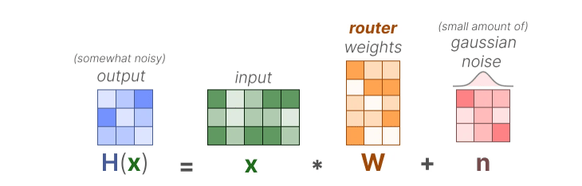
Затем, все кроме верхних $k$ экспертов, которых мы хотим активировать (например, 2), будут иметь свои веса установлены как $-\infty$:
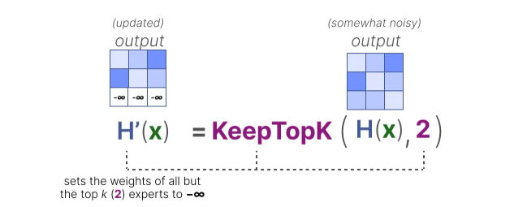
Если установить эти веса как $-\infty$, выход SoftMax на них будет равен 0:
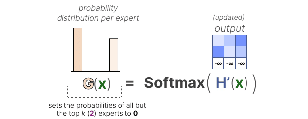
Token Choice (Token-level sparse gating)
В стратегии KeepTopK для каждого токена выбираются несколько лучших экспертов (например, top-$k$), которым он будет передан. Если $k=1$, это называется маршрутизацией top-$1$: каждый токен направляется только к одному эксперту. Такой подход иногда называют Token Choice, поскольку мы управляем маршрутизацией токенов к экспертам.
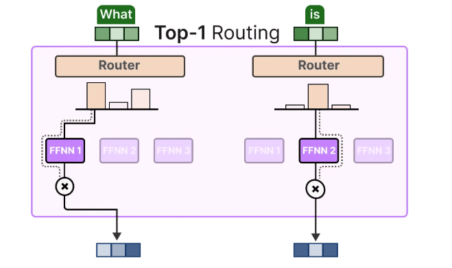
Если $k=2$, то тогда мы направляем токен к двум экспертам:
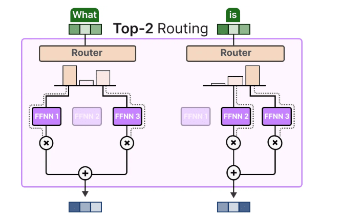
В чём различие между Token Choice и KeepTopK?
Эти два механизма можно спутать, но на самом деле они работают на разных этапах маршрутизации в MoE:
- KeepTopK — это как мы выбираем экспертов для каждого токена. Для каждого токена роутер рассчитывает вероятности по всем экспертам, и мы оставляем top-$k$ экспертов с максимальной оценкой (остальным ставится вес $-\infty$).
- Token Choice — это как мы выбираем, какие токены отправлять экспертам (или MoE-слою). Например, можно отправлять только часть наиболее важных/информативных токенов, а остальные — нет. Такой подход экономит вычисления и память.
KeepTopK (маршрутизация Top-$k$) Token Choice (разреженный выбор на уровне токенов) Что делает Выбирает $k$ лучших экспертов для каждого токена Решает, какие токены отправлять в MoE (или в обычный FFN) Управляет разреженностью по Экспертам (разреженность по экспертам) Токенам (разреженность по токенам) Примеры Switch Transformer (top-$1$), GShard (top-$2$), Mixtral (top-$2$) Только токены с $p_i > \text{threshold}$; игнорируем очень простые, паддинговые или неинформативные токены На что влияет Какие эксперты будут вызваны на каждый токен Какие токены вообще попадут в MoE-ветку Что не делает Не выбирает, какие токены пойдут в MoE или будут обработаны плотным FFN Не выбирает, какими экспертами токен будет обработан — только допускает/не допускает токен до MoE Аналогия Выбор $K$ лучших специалистов для каждого вопроса Фильтр: какие вопросы вообще стоит выносить на консилиум экспертов [Token embeddings] └──> Token Choice -> токены_для_MoE └──> Router -> распределение p └──> KeepTopK -> выбор экспертов └──> ЭкспертыToken Choice — это сравнительно современный подход, используемый в таких моделях, как DeepSeek-MoE и Qwen-MoE-A2. Применять Token Choice имеет смысл в следующих случаях:
- Ускорение инференса — сокращает число токенов, попадающих в MoE-ветку, уменьшая вычислительные затраты и задержки.
- Уменьшение стоимости экспертов — позволяет не задействовать экспертов на простых или неинформативных токенах, снижая общую нагрузку.
- Избежание переполнения ёмкости — снижает вероятность того, что отдельные эксперты получат слишком много токенов (балансировка нагрузки).
- Динамическая разреженность — даёт гибкий способ регулировать количество токенов, обрабатываемых через MoE, в зависимости от контекста.
Особенно полезен подход Token Choice в очень больших MoE-моделях — например, когда число экспертов превышает 100.
Switch Transformer
Switch Transformer — это T5-модель encoder-decoder, которая заменяет традиционный FFNN-слой на Switching Layer. Switching Layer — это разреженный MoE-слой, который выбирает одного эксперта для каждого токена (маршрутизация top-$1$).
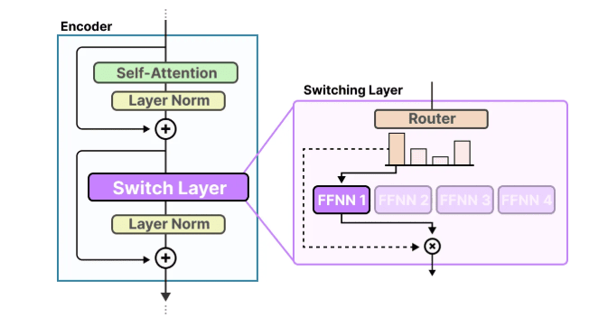
Активные параметры
Большая часть того, что делает MoE интересным, это его вычислительные требования. Поскольку только подмножество экспертов используется в единицу времени, мы имеем доступ к большему количеству параметров, чем мы используем.
Несмотря на то, что данной MoE требует больше параметров для загрузки (разреженные параметры), меньше из них активируется, так как мы только используем несколько экспертов во время генерации (активные параметры).
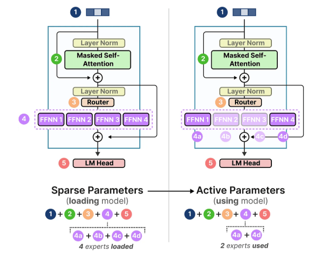
Другими словами, нам все равно нужно загрузить всю модель (включая всех экспертов) на ваше устройство (разреженные параметры), но когда мы запускаем генерацию, мы используем только подмножество параметров (активные параметры). MoE модели требуют больше VRAM для загрузки всех экспертов, но работают быстрее во время генерации на инференсе.
Рассмотрим количество разреженных и активных параметров на примере модели Mixtral 8x7B:
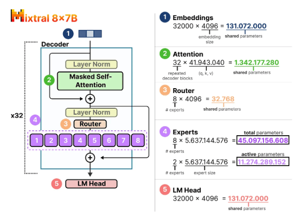
Здесь мы можем видеть, что каждый эксперт имеет размер 5.6B, а не 7B (хотя их 8).
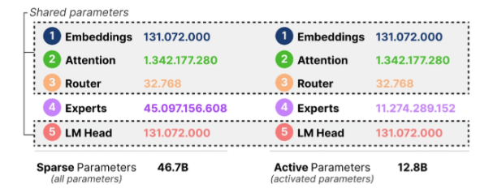
Нам нужно загрузить 8x5.6B (46.7B) параметров вместе с общими параметрами, но во время инференеса мы используем только 2x5.6B (12.8B) параметров.
Современные варианты
Две идеи из DeepSeekMoE (2024), ставшие фактическим стандартом в новых MoE-моделях:
- Fine-grained experts — вместо 8 крупных экспертов делают, например, 64 мелких и выбирают top-8 вместо top-2. Число активных параметров то же, а вариантов их сочетания несравнимо больше, что позволяет специализации быть тоньше.
- Shared experts — один-два эксперта объявляются общими и обрабатывают каждый токен без участия роутера.
Проблема обычной схемы: есть знания, нужные буквально всем токенам, — базовый синтаксис, служебные слова, общая структура языка. Без общих экспертов каждому специализированному эксперту приходится выучивать эти знания самостоятельно, дублируя их у всех восьми. Это прямая растрата ёмкости модели.
Shared expert снимает эту нагрузку: общее уходит к нему, а маршрутизируемые эксперты получают возможность заниматься исключительно тем, что их отличает. Эмпирически такая схема даёт заметный выигрыш при том же бюджете активных параметров.
- «Эксперты специализируются по предметным областям» — самое живучее заблуждение. Ни в одной изученной модели не нашлось эксперта «по биологии» или «по юриспруденции». Специализация в основном лексико-синтаксическая: эксперт по знакам препинания, по числам, по служебным словам, по коду. Название «эксперт» — историческое и вводит в заблуждение.
- «MoE экономит память» — наоборот. Загрузить нужно все веса, потому что заранее неизвестно, какой эксперт понадобится. MoE экономит вычисления, а память требует как модель полного размера.
- «MoE всегда быстрее» — только на достаточно больших батчах. При батче из одного запроса пересылки all-to-all между устройствами могут съесть весь выигрыш.
- «Число экспертов можно наращивать бесконечно» — растёт коммуникация, обостряется дисбаланс нагрузки, каждому эксперту достаётся всё меньше данных для обучения. Существует практический оптимум, и он зависит от размера корпуса и топологии кластера.
- «MoE-модель можно дообучать так же, как плотную» — MoE заметно более склонны к переобучению на маленьких датасетах: у них избыток параметров при малом числе примеров на эксперта. Обычно требуются более сильная регуляризация и осторожный learning rate.
- «Ответ модели зависит только от промпта» — при активном token dropping результат для конкретного токена зависит и от того, кто ещё оказался в том же батче.
- GLaM — первая разреженная модель, обогнавшая GPT-3: 1.2 трлн параметров при 97 млрд активных и втрое меньшая энергия обучения.
- Mixtral 8x7B — первая открытая MoE и разбор того, почему «8x7B» — это 46.7 млрд, а не 56.
- DeepSeek — 256 мелких экспертов, общий эксперт и балансировка без вспомогательного лосса.
Что такое MoE и какова его основная идея?
MoE (Mixture of Experts) — это архитектура, где вместо одного плотного FFN-слоя используется несколько независимых экспертов (FFN). Для каждого токена роутер выбирает только несколько из них (top-k), что позволяет иметь огромное число параметров при низких вычислительных затратах.
Чем "разреженные параметры" отличаются от "активных параметров" в MoE?
Разреженные параметры — полное число весов всей модели (все эксперты нужно загрузить в память). Активные параметры — число весов, реально используемых при обработке одного токена (только выбранные эксперты). Например, в Mixtral 8x7B: 46.7B разреженных, но только 12.8B активных.
Что такое router collapse и как он предотвращается?
Коллапс роутера — ситуация, когда роутер всегда выбирает одного-двух "сильных" экспертов, а остальные перестают обучаться. Предотвращается вспомогательной функцией потерь для балансировки нагрузки, которая штрафует неравномерное распределение токенов между экспертами.
В чём разница между Token Choice и KeepTopK?
KeepTopK — для каждого токена выбирается $k$ лучших экспертов. Token Choice — решает, какие токены вообще направить в MoE-ветку (а не в обычный FFN). Это ортогональные механизмы разреженности.
Что такое capacity factor и token dropping?
Под каждого эксперта заранее выделяется буфер на $\text{capacity factor} \cdot N/E$ токенов. Если роутер направил больше, лишние токены проходят слой необработанными по residual-связи — это token dropping. Поэтому дисбаланс нагрузки означает не только недообучение экспертов, но и прямую потерю данных.
Почему MoE выгоден в основном на больших батчах?
Эксперты лежат на разных GPU, и токены нужно пересылать между устройствами операцией all-to-all дважды на каждый MoE-слой. На больших батчах это время амортизируется полезной работой, при батче из одного запроса накладные расходы могут съесть весь выигрыш.
На чём на самом деле специализируются эксперты?
Не на предметных областях. Анализ показывает преимущественно лексико-синтаксическую специализацию: эксперт на знаках препинания, на числах, на служебных словах, на коде. Слово «эксперт» здесь историческое и вводит в заблуждение.
Зачем в DeepSeekMoE добавили shared experts?
Знания, нужные всем токенам (базовый синтаксис, служебные слова), иначе дублировались бы в каждом маршрутизируемом эксперте, растрачивая ёмкость модели. Общий эксперт обрабатывает каждый токен без участия роутера и берёт эту нагрузку на себя, освобождая остальных для настоящей специализации.
Какие известные LLM используют архитектуру MoE?
Mixtral 8x7B (Mistral AI), Switch Transformer (Google), GLaM (Google), DeepSeekMoE и DeepSeek-V2/V3 (DeepSeek). MoE позволяет масштабировать число параметров без пропорционального роста вычислений при инференсе — ценой памяти и коммуникации между устройствами.
-
Matryoshka Embeddings
Эмбеддинг — это вектор из $D$ чисел, в который модель упаковывает смысл текста так, чтобы близкие по смыслу тексты давали близкие векторы. На них строится семантический поиск и RAG: документы заранее превращают в векторы, кладут в индекс, а на запрос ищут ближайшие.
Размерность $D$ — это компромисс, за который платят дважды: памятью (индекс хранит $N \times D$ чисел) и временем (сравнение с каждым кандидатом стоит $O(D)$ операций). Хочется большого $D$ для качества и маленького — для скорости. Обычно приходится выбирать одно и обучать под него отдельную модель.
Matryoshka Embeddings — это эмбеддинги, у которых смысл «упакован слоями»: один и тот же вектор длины $D$ можно обрезать по префиксу до меньшей размерности $d < D$ и всё равно получать хорошее качество в задачах похожести и поиска. Идея введена в работе Matryoshka Representation Learning (MRL).
Формально: для набора размеров $$ d_1 < d_2 < \dots < d_k = D $$ мы хотим, чтобы «вложенные» представления $$ \mathbf{z}^{(d)} = \mathbf{z}_{1:d} $$ работали как самостоятельные эмбеддинги. Здесь $\mathbf{z} \in \mathbb{R}^{D}$ — полный вектор, а $\mathbf{z}_{1:d}$ — просто его первые $d$ координат.
Обычный эмбеддинг похож на смесь: смысл размазан по всем 768 координатам примерно поровну, вынуть часть нельзя.
Matryoshka-эмбеддинг устроен как русская матрёшка: первые 64 координаты — это уже полноценный, пусть и грубый, эмбеддинг. Следующие 64 добавляют деталей поверх него, следующие 128 — ещё деталей, и так далее. Обрезать вектор — значит достать матрёшку поменьше, а не отломать кусок от большой.
Ключевое: это не сжатие после обучения, а свойство, которое закладывается во время обучения. Одна модель — сразу целое семейство эмбеддингов разной длины.
Индекс на 10 миллионов документов, векторы во
float32(4 байта на число):Размерность Объём индекса Относительная скорость перебора 768 30.7 ГБ $1\times$ 256 10.2 ГБ $\approx 3\times$ 128 5.1 ГБ $\approx 6\times$ 64 2.6 ГБ $\approx 12\times$ Переход с 768 на 128 измерений — это разница между «индекс не влезает в оперативную память сервера» и «влезает с запасом». Именно ради этого и придумали MRL.
Почему обычный эмбеддинг обрезать нельзя
В обычно обученной модели ни одна координата не «главнее» других: обучение ничем не поощряло складывать важное в начало. Координата №3 и координата №700 в среднем несут сопоставимое количество информации.
Поэтому взятие префикса $\mathbf{z}_{1:128}$ — это выбрасывание случайных 83% информации. Геометрия ломается: расстояния между векторами перестают соответствовать смысловой близости, качество поиска падает обвально, а не плавно.
Кажется, что задачу решает метод главных компонент: он тоже упорядочивает координаты по важности. Разница принципиальная:
- PCA — постобработка. Она ищет направления максимальной дисперсии уже готовых векторов и не знает ничего о том, что оптимизировалось при обучении. Она сохраняет разброс, а не качество поиска.
- MRL — свойство обучения. Модель с самого начала учится так, чтобы префикс работал в целевой задаче.
Плюс практика: PCA требует хранить матрицу проекции и применять её к каждому запросу, а обрезка префикса — это буквально
z[:128], бесплатная операция.Как обучают: Matryoshka Representation Learning
Ключевая идея: оптимизировать качество сразу для нескольких усечений одного и того же вектора. Берётся обычная функция потерь для представлений (контрастивная InfoNCE, triplet loss, классификационная — любая) и считается для каждого префикса: $$ \mathcal{L}_{total}=\sum_{t=1}^{k} \lambda_t \, \mathcal{L}\!\left(\mathbf{z}_{1:d_t}\right) $$
- $d_t$ — целевые размерности, обычно степени двойки: 64, 128, 256, 512, 768;
- $\lambda_t$ — веса слагаемых, чаще всего просто единицы;
- $\mathcal{L}$ — та же самая базовая функция потерь, что использовалась бы и без MRL.
Посмотрите, в сколько слагаемых входит каждая координата:
- координата №5 участвует в вычислении всех $k$ слагаемых (она есть в любом префиксе);
- координата №700 участвует только в последнем, где $d_t = 768$.
Значит, ранние координаты получают градиент из $k$ источников сразу, а поздние — из одного. Оптимизация под таким давлением естественным образом складывает в начало вектора то, что полезно всем задачам сразу, — грубую, общую семантику. Поздним координатам достаётся роль уточнений, которые нужны только тогда, когда есть место.
Именно поэтому MRL почти не стоит качества на полной размерности: мы не отняли у модели выразительность, мы только задали порядок, в котором она раскладывает информацию.
Обычно берут все $\lambda_t = 1$ — это работает и рекомендуется по умолчанию. Иногда веса для маленьких $d$ слегка увеличивают, чтобы «ранние» координаты гарантированно не остались полупустыми.
Перекос в обратную сторону (большой вес у полной размерности) сводит MRL на нет: модель снова начнёт размазывать информацию равномерно.
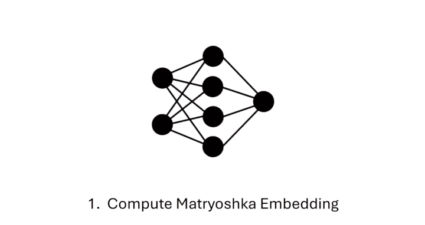
Один вектор, вложенные представления: обрезая его по префиксу, мы получаем эмбеддинги меньшей размерности, каждый из которых остаётся рабочим. Источник 
Matryoshka Representation Learning применим к любой задаче обучения представлений: исходная функция потерь $\mathcal{L}(\cdot)$ считается на $O(\log d)$ выбранных размерностях одного и того же вектора $z$. Обратите внимание на структуру картинки: ранние координаты входят во все слагаемые сразу, поздние — только в самое длинное, и именно эта асимметрия градиента и упорядочивает информацию по важности. Первые координаты кодируют грубую семантику — «про что вообще текст», крупные темы и категории. Последующие добавляют уточняющие детали, различающие близкие документы внутри одной темы.
Отсюда предсказуемое поведение качества: при обрезке оно падает плавно и медленно. Типичная картина из работ по MRL — на 1/6 размерности теряется порядка одного-двух процентных пунктов метрики поиска вместо обвала на десятки пунктов у обычной модели.
Как это используют в проде
Храним полный $\mathbf{z}$ (или заранее нарезанные срезы), а при запросе выбираем $d$ под доступный бюджет задержки. На мобильном устройстве или edge — 64–128 измерений, на сервере — 512–1024. Модель при этом одна, переобучать ничего не нужно.
- Отбор кандидатов. Быстрый ANN-поиск (approximate nearest neighbors — приближённый поиск ближайших соседей) по «лёгкому» индексу на 128 измерениях. Достаём топ-100.
- Уточнение. Пересчитываем похожесть для этих 100 кандидатов тем же самым вектором, но на полной длине 768, и сортируем заново.
Стоимость шага 2 ничтожна: 100 скалярных произведений вместо 10 миллионов. Качество — почти как у полного поиска, скорость — как у поиска на 128 измерениях.
10 млн документов, полный поиск по 768 измерениям — базовая линия.
- Одностадийный поиск по 128 измерениям: $\approx 6\times$ быстрее, но топ-10 подобран по грубому представлению.
- Двустадийный (128 $\to$ отбор 100 $\to$ пересортировка по 768): те же $\approx 6\times$ на первом этапе плюс 100 скалярных произведений на втором — прибавка меньше доли процента.
При этом финальный порядок выдачи определяется полным вектором, поэтому качество почти совпадает с полным перебором: грубый этап должен лишь не потерять нужный документ среди сотни кандидатов, а не расставить их правильно.
Если вы работаете с косинусной близостью и ваши векторы нормированы ($\|\mathbf{z}\|_2 = 1$), то префикс $\mathbf{z}_{1:d}$ уже не нормирован — его длина меньше единицы, причём у разных документов по-разному.
Сравнивать такие префиксы напрямую скалярным произведением некорректно: документ с «тяжёлым» началом вектора получит незаслуженное преимущество. Правильный порядок действий: обрезать, затем заново поделить на L2-норму. Именно так делают и
sentence-transformers, и OpenAI Embeddings API.- «Любой эмбеддинг можно обрезать, если он от хорошей модели» — нет. Matryoshka — свойство, появившееся из специального обучения. Без MRL префикс работает существенно хуже полного вектора.
- «MRL повышает качество эмбеддингов» — нет, это не его задача. На полной размерности качество примерно такое же, как без MRL (иногда на десятые доли пункта ниже). Выигрыш — в гибкости, а не в точности.
- «Раз можно обрезать, будем всегда брать 64» — качество всё-таки падает; насколько именно, надо измерить на своих данных и своей метрике (Recall@k, nDCG), а не поверить графику из статьи.
- Смешивать в одном индексе векторы разной длины. Расстояния между префиксами разной длины несопоставимы. Индекс должен быть однородным по $d$.
Обучение Matryoshka-эмбеддингов в
sentence-transformersсводится к обёртке над обычной функцией потерь —MatryoshkaLossсама считает базовый лосс на каждом из указанных срезов и складывает результаты:from sentence_transformers import SentenceTransformer from sentence_transformers.losses import CoSENTLoss, MatryoshkaLoss model = SentenceTransformer("microsoft/mpnet-base") base_loss = CoSENTLoss(model=model) loss = MatryoshkaLoss( model=model, loss=base_loss, matryoshka_dims=[768, 512, 256, 128, 64], matryoshka_weight=[1, 1, 1, 1, 1], ) model.fit( train_objectives=[(train_dataset, loss)], # ... остальные параметры обучения )- OpenAI
text-embedding-3-small/-large— параметрdimensionsв API обрезает вектор именно по matryoshka-принципу; это самый массовый пример MRL в продакшене. - Nomic Embed,
mxbai-embed-large, многие модели на Hugging Face — обучены с MRL и явно это декларируют. - Векторные БД (Milvus, Qdrant, Weaviate) — поддерживают многостадийный поиск, для которого MRL является естественным партнёром.
Полезные материалы: Kusupati et al., 2022 (MRL), Hugging Face блог, Milvus, статья на Хабре.
Что такое Matryoshka Embeddings и в чём их ключевое свойство?
Это эмбеддинги, обученные так, что любой префикс вектора $\mathbf{z}_{1:d}$ при $d < D$ остаётся полноценным эмбеддингом и сохраняет хорошее качество в задачах similarity и retrieval. Смысл «упакован слоями»: ранние координаты — грубая семантика, поздние — уточняющие детали.
Как обучают Matryoshka Embeddings (MRL)?
Суммируют базовую функцию потерь по нескольким срезам одного вектора: $\mathcal{L}_{total} = \sum_t \lambda_t \mathcal{L}(\mathbf{z}_{1:d_t})$, где $d_t$ — обычно 64, 128, 256, 512, 768. Модель одновременно оптимизирует качество для всех этих размерностей.
Почему такая функция потерь заставляет важное оказаться в начале вектора?
Ранние координаты входят во все слагаемые суммы, поздние — только в самое длинное. Ранние получают градиент из $k$ источников, поздние — из одного, поэтому оптимизация складывает в начало информацию, полезную для всех размерностей сразу.
Почему нельзя просто обрезать обычный эмбеддинг до меньшей размерности?
В обычной модели семантика распределена по координатам примерно равномерно: ничто при обучении не поощряло складывать важное в начало. Взятие префикса выбрасывает случайную часть информации и ломает геометрию пространства, из-за чего качество падает обвально.
Чем MRL отличается от PCA?
PCA — постобработка готовых векторов, оптимизирующая сохранение дисперсии, и требует хранить и применять матрицу проекции. MRL — свойство самого обучения, оптимизирующее целевую метрику качества, а обрезка префикса не стоит вообще ничего.
Как Matryoshka Embeddings применяются в двухэтапном поиске?
На первом этапе быстрый ANN-поиск ведётся по векторам малой размерности (например, 128) и отбирает топ-100 кандидатов. На втором эти кандидаты пересортировываются по полному вектору (768+). Второй этап почти ничего не стоит, а качество получается близким к полному поиску.
Какую тонкость надо помнить при обрезке вектора на практике?
Префикс нормированного вектора уже не имеет единичной длины, причём у разных документов по-разному. Перед сравнением по косинусной близости обрезанный вектор надо заново поделить на его L2-норму, иначе ранжирование смещается.
Какая практическая выгода от Matryoshka Embeddings в промышленных RAG-системах?
Одна модель вместо семейства моделей под разные бюджеты: размерность выбирается динамически под доступную память и допустимую задержку — 64–128 на мобильных устройствах, 512–1024 на сервере — без переобучения и без пересчёта индекса.
-
TRPO (2015)
Дальше идёт цепочка алгоритмов выравнивания LLM: TRPO $\to$ PPO $\to$ DPO $\to$ IPO $\to$ KTO $\to$ GRPO. Общий контекст — этап RLHF в обучении LLM — разобран в вопросе Пайплайн обучения LLM. Здесь мы начинаем с TRPO, потому что именно он объясняет, зачем во всех последующих методах нужны ограничения на размер шага.
Обучение с подкреплением придумали для роботов и игр, поэтому терминология поначалу сбивает с толку. Перевод на язык языковых моделей:
- Политика $\pi_\theta$ — сама языковая модель. Она задаёт распределение вероятностей следующего токена.
- Состояние $s_t$ — промпт плюс уже сгенерированные токены, то есть текущий контекст.
- Действие $a_t$ — выбор следующего токена.
- Траектория — целиком сгенерированный ответ.
- Вознаграждение $r$ — оценка ответа: балл от модели вознаграждения или результат проверки правильности.
- Преимущество $\hat{A}_t$ — насколько выбранный токен оказался лучше «среднего» токена в этой позиции.
То есть «оптимизация политики» здесь означает буквально: подкрутить веса модели так, чтобы она чаще писала то, за что получает высокие оценки.
TRPO (Trust Region Policy Optimization) — алгоритм оптимизации политики с гарантированным монотонным улучшением, предложенный Шульманом и соавторами (Schulman et al., 2015). TRPO формализует идею доверительной области (trust region): шаг обновления разрешён только тогда, когда новая политика остаётся достаточно близкой к старой.
Если совсем простыми словами: TRPO — это градиентный подъём с поводком. Модель тянут в сторону большей награды, но не дают уйти от текущего поведения дальше, чем на заранее заданное расстояние. Длина поводка измеряется не в весах, а в том, насколько сильно изменилось поведение модели.
Почему нельзя просто делать градиентный подъём
В обычном обучении с учителем данные фиксированы. Сделали неудачный шаг — метрика на валидации упала, откатились к предыдущему чекпоинту, уменьшили learning rate, поехали дальше. Данные никуда не делись.
В RL данные генерирует сама обучаемая модель. Если один шаг испортил политику, то следующая порция примеров будет собрана уже испорченной моделью: плохие ответы $\to$ бессмысленные оценки $\to$ ещё более плохие ответы. Это положительная обратная связь, из которой очень трудно выбраться. Отсюда одержимость RL-алгоритмов размером шага: осторожность здесь не перестраховка, а условие сходимости.
Мы хотим максимизировать ожидаемое вознаграждение $J(\theta) = \mathbb{E}_{\tau \sim \pi_\theta}[\sum_t r_t]$. Проблема в том, что ожидание берётся по траекториям новой политики, которой у нас ещё нет: чтобы посчитать $J(\theta)$, надо сначала обновить веса, сгенерировать данные и оценить их — и так на каждый пробный шаг.
Выход — importance sampling (взвешивание по отношению вероятностей): оценивать величину для нового распределения по выборке из старого, домножая каждый элемент на отношение вероятностей. Так возникает суррогатная (то есть заменяющая настоящую) цель:
$$ \mathcal{L}^{\text{IS}}(\theta) = \mathbb{E}_t\!\left[ \frac{\textcolor{#93C5FD}{\pi_\theta(a_t \mid s_t)}}{\textcolor{#6EE7B7}{\pi_{\theta_\text{old}}(a_t \mid s_t)}} \cdot \textcolor{#FDBA74}{\hat{A}_t} \right] = \mathbb{E}_t\!\left[\textcolor{#F9A8D4}{r_t(\theta)} \cdot \textcolor{#FDBA74}{\hat{A}_t}\right] $$
$\textcolor{#F9A8D4}{r_t(\theta)} = \textcolor{#93C5FD}{\pi_\theta} / \textcolor{#6EE7B7}{\pi_{\theta_\text{old}}}$ — во сколько раз новая политика охотнее выбирает тот же токен, чем старая. Единица означает «ничего не изменилось», $1.3$ — «стала выбирать на 30% охотнее».
Дальше произведение $r_t \cdot \hat{A}_t$ работает так:
- токен оказался хорошим ($\hat{A}_t > 0$) $\to$ цель растёт, когда растёт $r_t$ $\to$ градиент повышает вероятность этого токена;
- токен оказался плохим ($\hat{A}_t < 0$) $\to$ цель растёт, когда $r_t$ падает $\to$ градиент понижает вероятность.
Это ровно то, чего мы хотели. Ровно та же формула позже появится в PPO и GRPO — только там на $r_t$ навесят ограничение.
Оценка через отношение вероятностей корректна лишь тогда, когда распределения близки. Пусть старая политика давала токену вероятность $0.01$, а новая — $0.5$. Тогда $r_t = 50$, и один-единственный сэмпл перевесит в оценке сотню остальных.
Формально математическое ожидание остаётся несмещённым, но дисперсия оценки взрывается: по конечной выборке мы получаем шум вместо градиента. Именно из-за этого суррогатную цель обязательно нужно снабдить ограничением на то, насколько далеко разрешено уходить, — иначе она начинает врать ровно там, где мы на неё полагаемся.
Доверительная область
TRPO решает задачу условной оптимизации: максимизирует суррогатный объектив при жёстком ограничении на KL-дивергенцию между старой и новой политиками:
$$ \max_\theta \;\; \mathbb{E}_t\!\left[\textcolor{#F9A8D4}{r_t(\theta)} \cdot \textcolor{#FDBA74}{\hat{A}_t}\right] $$ $$ \text{при условии} \quad \textcolor{#C4B5FD}{\overline{D}_{\text{KL}}(\theta_\text{old}, \theta)} \leq \textcolor{#C4B5FD}{\delta} $$
где среднее KL по посещённым состояниям: $$ \textcolor{#C4B5FD}{\overline{D}_{\text{KL}}(\theta_\text{old}, \theta)} = \mathbb{E}_{s_t \sim \textcolor{#6EE7B7}{\pi_{\theta_\text{old}}}}\!\left[ D_{\text{KL}}\!\left(\textcolor{#6EE7B7}{\pi_{\theta_\text{old}}(\cdot \mid s_t)} \;\|\; \textcolor{#93C5FD}{\pi_\theta(\cdot \mid s_t)}\right) \right] $$
- $\textcolor{#C4B5FD}{\delta}$ — радиус доверительной области, обычно $0.01$–$0.05$;
- ограничение гарантирует, что новая политика не выходит за пределы «шара доверия» вокруг старой.
$D_{\text{KL}}(P \,\|\, Q)$ измеряет, насколько сильно распределение $Q$ отличается от $P$ — грубо говоря, сколько лишней информации мы теряем, подменяя $P$ на $Q$. Ноль означает «распределения совпадают», и чем больше значение, тем сильнее они разошлись. Величина несимметрична: $D_{\text{KL}}(P\|Q) \ne D_{\text{KL}}(Q\|P)$.
Применительно к LLM: $\overline{D}_{\text{KL}} \le 0.01$ читается как «в среднем по контекстам распределение следующего токена изменилось совсем чуть-чуть». Модель по-прежнему пишет примерно то же самое, просто немного сместила предпочтения.
Естественная мысль — ограничить обычную длину шага в пространстве параметров: $\|\Delta\theta\| \le \epsilon$. Так делать нельзя, потому что одинаковый шаг по весам даёт совершенно разное изменение поведения в зависимости от того, где мы находимся.
Возьмём игрушечную политику $p = \sigma(\theta)$ (вероятность одного из двух действий). Шаг $\Delta\theta = 0.1$:
- из $\theta = 0$: $p$ меняется с $0.500$ до $0.525$ — поведение заметно сдвинулось;
- из $\theta = 5$: $p$ меняется с $0.9933$ до $0.9939$ — не изменилось практически ничего.
Один и тот же шаг по весам — разный эффект. Поэтому TRPO меряет шаг там, где он действительно важен: в пространстве распределений.
Ключевой теоретический результат Schulman et al.: реальное качество политики ограничено снизу суррогатной целью со штрафом за расхождение:
$$ J(\theta) \geq \mathcal{L}^{\text{IS}}(\theta) - C \cdot \textcolor{#C4B5FD}{\overline{D}_{\text{KL}}(\theta_\text{old}, \theta)}, \qquad C = \frac{4\varepsilon \gamma}{(1-\gamma)^2} $$
где $\gamma$ — коэффициент дисконтирования (насколько мы ценим будущие награды по сравнению с немедленными), а $\varepsilon$ — максимальное по модулю преимущество.
Читать её надо так: «реальное улучшение $\ge$ то, что показала суррогатная цель, минус плата за то, что мы ушли от старой политики».
Отсюда рецепт: если максимизировать правую часть, то левая — настоящее качество — гарантированно не упадёт. Это и называется монотонным улучшением: каждый шаг не хуже предыдущего.
Практическая оговорка: константа $C$ в реальности огромна (при $\gamma = 0.99$ множитель $1/(1-\gamma)^2 = 10^4$), и если честно использовать её как штраф, шаги получатся микроскопическими. Поэтому TRPO переводит штраф в жёсткое ограничение с подобранным вручную $\delta$ — теоретическая гарантия при этом становится приблизительной, но алгоритм работает.
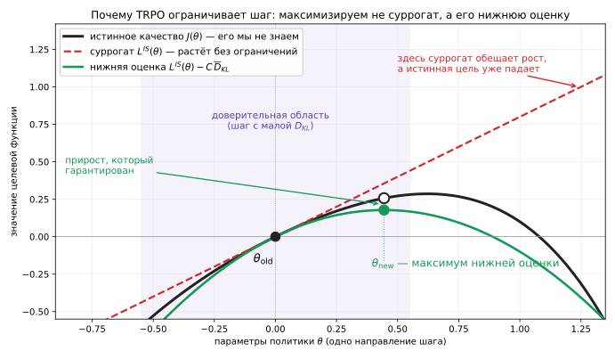
Разрез вдоль одного направления шага по параметрам. Чёрная сплошная — истинное качество $J(\theta)$, которое мы посчитать не можем; красная пунктирная — суррогат $L^{\text{IS}}$, совпадающий с ней по значению и наклону в точке $\theta_\text{old}$, но растущий дальше без всяких ограничений; зелёная — правая часть неравенства, то есть суррогат минус штраф за KL. Максимум зелёной кривой и берут за новую точку. Поскольку зелёная кривая нигде не выше чёрной, а в $\theta_\text{old}$ они совпадают, прирост зелёной гарантирует не меньший прирост истинного качества: белая точка на чёрной кривой лежит выше зелёной. Красная стрелка показывает зону, где суррогату верить уже нельзя — он всё ещё обещает рост, а истинное качество там падает. Как это решают технически
Задача с ограничением на KL решается методом натурального градиента: вместо евклидова шага в пространстве параметров делается шаг, нормированный метрикой пространства распределений:
$$ \theta \leftarrow \theta + \alpha \cdot \textcolor{#67E8F9}{\mathbf{F}^{-1}} \nabla_\theta \mathcal{L}^{\text{IS}}(\theta) $$
где $\textcolor{#67E8F9}{\mathbf{F}}$ — матрица Фишера, то есть матрица вторых производных KL-дивергенции по параметрам. Она отвечает на вопрос «насколько сильно изменится распределение, если пошевелить вот эти веса», и умножение на $\mathbf{F}^{-1}$ автоматически укорачивает шаг в тех направлениях, где поведение меняется резко.
Матрица Фишера имеет размер $d \times d$, где $d$ — число параметров. Для скромной по нынешним меркам модели на 7 млрд параметров это $7\cdot10^9 \times 7\cdot10^9 \approx 5 \cdot 10^{19}$ чисел. Даже по одному байту на элемент это $5\cdot10^{7}$ терабайт — величина, не имеющая физического смысла.
Поэтому TRPO никогда не строит $\mathbf{F}$ явно: он использует метод сопряжённых градиентов (conjugate gradient), которому достаточно уметь вычислять произведение $\mathbf{F}v$ для произвольного вектора $v$. Каждое такое произведение — это дополнительный проход по данным, и их нужно 10–20 штук на один шаг обновления. Для робота с сетью в сотню тысяч параметров это терпимо; для LLM — нет.
TRPO PPO Ограничение Жёсткое: KL $\leq \delta$ Мягкое: обрезание $r_t$ Порядок оптимизации 2-й (натуральный градиент) 1-й (SGD/Adam) Вычислительная стоимость Высокая (сопряжённые градиенты, 10–20 проходов на шаг) Низкая (один обычный шаг оптимизатора) Теоретические гарантии Строгие Менее строгие, но эмпирически сравнимые Сложность реализации Высокая Несколько строк поверх обычного лосса Применимость к LLM Практически нет Широко используется PPO берёт ту же самую суррогатную цель и заменяет дорогое ограничение дешёвой эвристикой: вместо того чтобы честно измерять KL и решать условную задачу, он просто обрезает отношение $r_t$ диапазоном $[1-\varepsilon,\ 1+\varepsilon]$.
Логика такая: если $r_t$ вылез за границы, значит, политика уже достаточно сместилась на этом токене — обнулим для него градиент и займёмся остальными. Это не эквивалентно доверительной области TRPO и никаких теорем не гарантирует, но на практике удерживает шаг в тех же рамках, стоит один обычный проход и реализуется в несколько строк. Так дешёвая эвристика вытеснила красивую теорию.
- «Доверительная область — это ограничение на learning rate» — нет. Learning rate ограничивает шаг в весах, доверительная область — расхождение распределений. Одному и тому же $\delta$ в разных точках обучения соответствуют совершенно разные шаги по весам.
- «TRPO гарантирует, что качество никогда не упадёт» — только в идеализированной постановке. На практике преимущества $\hat{A}_t$ оценены по конечной выборке, а константа $C$ заменена подобранным $\delta$, так что гарантия становится приблизительной.
- «PPO — это упрощённый TRPO, значит, он хуже» — эмпирически PPO работает не хуже, а часто и лучше: он позволяет сделать несколько эпох обновлений по одной порции данных, что TRPO с его дорогим шагом себе позволить не может.
- «KL можно заменить на любую метрику расстояния» — KL появляется в теореме о монотонном улучшении не случайно, а как следствие оценки через полную вариацию. Произвольная метрика теоретических гарантий не даст.
- Роботизированное управление (MuJoCo, OpenAI Gym) — исходная область применения; TRPO продемонстрировал стабильное обучение на задачах непрерывного управления: ходьба, управление манипуляторами.
- Точка сравнения в RL-исследованиях — теоретически обоснованный ориентир при разработке новых алгоритмов.
- Понимание PPO — практическая ценность TRPO сегодня в основном в этом: он объясняет, что именно приближает обрезание в PPO и при каких условиях это приближение перестаёт работать.
Что такое «доверительная область» в TRPO и зачем она нужна?
Доверительная область — шар в пространстве распределений (по метрике KL) вокруг текущей политики $\pi_{\theta_\text{old}}$. Обновление ограничено этим шаром ($\overline{D}_{\text{KL}} \leq \delta$), что даёт монотонное улучшение. Ограничение нужно потому, что в RL данные генерирует сама политика: один испорченный шаг портит и все последующие данные.
Чем суррогатный объектив TRPO отличается от прямого максимума $J(\theta)$?
$J(\theta)$ — ожидание по траекториям новой политики, которых у нас нет до обновления весов. Суррогатная цель через отношение вероятностей $r_t = \pi_\theta / \pi_{\theta_\text{old}}$ позволяет оценивать её по данным старой политики с поправкой на различие политик (importance sampling).
Почему суррогатную цель обязательно нужно ограничивать?
Importance sampling корректен только при близких распределениях. При сильном расхождении отдельные отношения $r_t$ становятся огромными, дисперсия оценки взрывается и градиент превращается в шум — оценка врёт именно там, где на неё полагаются.
Почему TRPO использует натуральный градиент, а не обычный SGD?
Обычный градиент задаёт направление в пространстве параметров (евклидова метрика), где один и тот же шаг по весам может как почти не изменить поведение модели, так и изменить его радикально. Натуральный градиент $\mathbf{F}^{-1}\nabla \mathcal{L}$ задаёт шаг в пространстве распределений — одинаковый по фактическому изменению политики.
Что утверждает теорема о монотонном улучшении?
Что реальный прирост качества не меньше суррогатной цели за вычетом штрафа $C \cdot \overline{D}_{\text{KL}}$. Максимизируя эту нижнюю границу, мы гарантируем, что настоящее качество политики не упадёт. На практике константа $C$ слишком велика, поэтому штраф заменяют жёстким ограничением с подобранным $\delta$.
Почему TRPO не применяется для дообучения LLM?
Натуральный градиент требует работы с матрицей Фишера размера $d \times d$; для 7B-модели это $\sim 5 \cdot 10^{19}$ элементов. Даже метод сопряжённых градиентов, не строящий её явно, требует 10–20 дополнительных проходов на каждый шаг обновления, что для LLM неприемлемо.
В чём теоретическое превосходство TRPO над PPO и почему победил PPO?
TRPO имеет строгую гарантию монотонного улучшения, PPO — эвристика без таких гарантий. Но PPO стоит один обычный шаг оптимизатора, реализуется в несколько строк и позволяет несколько эпох обновлений по одной порции данных, поэтому эмпирически работает сравнимо или лучше при кратно меньшей цене.
-
PPO в RLHF (2017/2022)
PPO (Proximal Policy Optimization) — алгоритм оптимизации политики из обучения с подкреплением (Schulman et al., 2017). В контексте LLM применяется как центральный алгоритм стадии RLHF (Reinforcement Learning from Human Feedback): именно на PPO обучались InstructGPT (2022) и первые версии ChatGPT.
Если совсем простыми словами: PPO — это тот же TRPO, но вместо честного измерения расстояния между политиками используется грубый, зато почти бесплатный приём — обрезание (clipping). Как только модель слишком сильно изменила своё мнение о каком-то токене, градиент по этому токену просто выключают. Слово «proximal» (близкий) в названии и означает «новая политика остаётся рядом со старой».
- Политика $\textcolor{#93C5FD}{\pi_\theta}$ (actor) — дообучаемая языковая модель, та самая, которую мы улучшаем.
- Референсная модель $\textcolor{#6EE7B7}{\pi_{\text{ref}}}$ — замороженная копия SFT-модели, точка отсчёта: «каким был текст до начала RLHF».
- Модель вознаграждения $\textcolor{#FCD34D}{r_\phi(x, y)}$ — отдельная нейросеть, обученная на человеческих сравнениях предсказывать, какой ответ понравится людям больше. На вход — промпт и ответ, на выход — одно число.
- Сеть ценности $V_\psi$ (critic) — предсказывает ожидаемую награду из текущего состояния; нужна, чтобы посчитать преимущество.
- Берём промпт $x$ и сэмплируем ответ $y \sim \textcolor{#93C5FD}{\pi_\theta}(\cdot \mid x)$.
- Считаем скалярную награду с KL-штрафом: $$ \textcolor{#FCD34D}{R(x,y)} = \textcolor{#FCD34D}{r_\phi(x,y)} - \beta \cdot \underbrace{\log \frac{\textcolor{#93C5FD}{\pi_\theta(y \mid x)}}{\textcolor{#6EE7B7}{\pi_{\text{ref}}(y \mid x)}}}_{\text{оценка KL-дивергенции}} $$
- Оцениваем преимущество $\textcolor{#FDBA74}{\hat{A}_t}$ для каждого токена — насколько он лучше базовой линии, предсказанной сетью ценности $V_\psi$.
- Обновляем $\theta$ по обрезанной суррогатной функции потерь.
Параметр $\beta$ управляет тем, насколько сильно модели разрешено отдаляться от $\textcolor{#6EE7B7}{\pi_{\text{ref}}}$.
Модель вознаграждения — это обычная нейросеть, обученная на конечном наборе человеческих сравнений. Как у всякой нейросети, у неё есть «слепые зоны»: тексты, которые она оценивает высоко, хотя человек оценил бы их низко. Такие тексты просто не встречались в её обучающей выборке.
А политика в RL занимается ровно тем, что ищет максимум этой функции. Дай ей волю — и она найдёт слепую зону: это называется reward hacking. Классическая картина — модель начинает генерировать вежливые пустые формулы, бесконечно повторять понравившийся оценщику оборот или уходить в откровенный бессвязный текст, который тем не менее получает 9 из 10.
KL-штраф — это привязь к SFT-модели. Он говорит: «за каждый шаг в сторону нетипичного текста плати». В результате политика может улучшаться только внутри области, где модель вознаграждения обучалась и потому осмысленна.
- Слишком маленькая $\beta$: reward hacking. Награда на графиках растёт, а качество ответов для людей падает — верный признак, что оптимизируется оценщик, а не полезность.
- Слишком большая $\beta$: политика намертво прижата к SFT-модели и почти не меняется; RLHF не даёт никакого эффекта.
На практике $\beta$ подбирают так, чтобы KL от референсной модели удерживалась в разумном коридоре, и часто регулируют её адаптивно прямо во время обучения (adaptive KL controller): KL вылезла за целевой уровень — увеличиваем $\beta$, ушла ниже — уменьшаем.
Обрезанный суррогатный лосс
$$ \mathcal{L}^{\text{CLIP}}(\theta) = -\mathbb{E}_t \left[ \min\!\left( \textcolor{#F9A8D4}{r_t(\theta)} \cdot \textcolor{#FDBA74}{\hat{A}_t},\; \textcolor{#67E8F9}{\text{clip}}\!\left(\textcolor{#F9A8D4}{r_t(\theta)},\, 1-\varepsilon,\, 1+\varepsilon\right) \cdot \textcolor{#FDBA74}{\hat{A}_t} \right) \right] $$
где отношение вероятностей (importance ratio): $$ \textcolor{#F9A8D4}{r_t(\theta)} = \frac{\textcolor{#93C5FD}{\pi_\theta(y_t \mid y_{\lt t}, x)}}{\textcolor{#6EE7B7}{\pi_{\theta_\text{old}}(y_t \mid y_{\lt t}, x)}} $$
- $\textcolor{#F9A8D4}{r_t(\theta)}$ — во сколько раз текущая политика охотнее выбирает токен $y_t$, чем та, что сгенерировала данные;
- $\textcolor{#FDBA74}{\hat{A}_t}$ — преимущество: $> 0$ значит «токен лучше среднего», $< 0$ — «хуже»;
- $\textcolor{#67E8F9}{\text{clip}(\cdot,\, 1-\varepsilon,\, 1+\varepsilon)}$ — зажимает $\textcolor{#F9A8D4}{r_t}$ в окрестность единицы;
- $\varepsilon$ — гиперпараметр, обычно $0.1$–$0.2$.
Минимум делает оценку пессимистичной: из двух версий выигрыша всегда берётся меньшая. Смысл в том, чтобы выключать градиент ровно в одном случае — когда модель уже сдвинулась достаточно далеко в ту сторону, в которую её толкает преимущество.
Разберём все четыре комбинации при $\varepsilon = 0.2$ и $|\hat{A}_t| = 2$:
$\hat{A}_t$ $r_t$ $r_t \hat{A}_t$ $\text{clip}(r_t)\hat{A}_t$ минимум Что происходит $+2$ $0.7$ $1.4$ $1.6$ $1.4$ градиент работает: повышаем вероятность $+2$ $1.5$ $3.0$ $2.4$ $2.4$ обрезано: уже подняли достаточно, градиент = 0 $-2$ $1.5$ $-3.0$ $-2.4$ $-3.0$ градиент работает: снижаем вероятность $-2$ $0.7$ $-1.4$ $-1.6$ $-1.6$ обрезано: уже опустили достаточно, градиент = 0 Посмотрите на строки 2 и 3 таблицы: при одном и том же $r_t = 1.5$ поведение разное.
- Если токен хороший ($\hat{A}>0$) и мы уже повысили его вероятность в полтора раза — стоп, дальше поощрять не за что, обрезаем.
- Если токен плохой ($\hat{A}<0$), а вероятность его почему-то выросла в полтора раза — никакого стопа: градиент продолжает давить вниз в полную силу.
Логика такая: обрезание защищает от чрезмерного шага в желаемом направлении, но никогда не мешает исправлять ошибку. Из-за этого $\mathcal{L}^{\text{CLIP}}$ и называют пессимистичной нижней оценкой суррогатной цели.
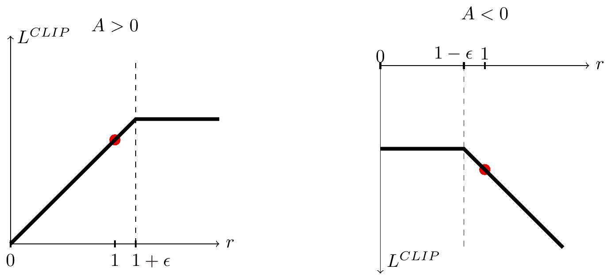
Один член $L^{\text{CLIP}}$ как функция отношения вероятностей $r$, рисунок из оригинальной статьи PPO. Здесь нарисована максимизируемая величина — то самое выражение под матожиданием, но без ведущего минуса, с которым оно записано в формуле выше как лосс. Красная точка — старт оптимизации, $r = 1$: там обе панели ещё на наклонном участке, градиент есть. Слева, при $A > 0$, линия растёт до $r = 1+\varepsilon$ и дальше уходит в горизонтальное плато — поощрять сильнее уже не за что. Справа, при $A < 0$, ось значений направлена вниз, и картинка зеркальна не полностью: плато стоит слева, при $r < 1-\varepsilon$, а правее линия падает без всякого предела. Это и есть асимметрия из абзаца выше — обрезание останавливает шаг в желаемую сторону, но не мешает исправлять ошибку. Обрезание ограничивает отношение вероятностей на каждом токене по отдельности, а TRPO ограничивал среднюю KL по всем состояниям. Это не одно и то же: политика может остаться в пределах $[1-\varepsilon, 1+\varepsilon]$ на каждом токене, но накопить заметное суммарное расхождение по всей последовательности.
Поэтому практические реализации PPO для LLM почти всегда добавляют вторую страховку — тот самый KL-штраф в награде — и следят за KL как за метрикой во время обучения. Одного обрезания на длинных последовательностях не хватает.
Преимущество и сеть ценности
$$ \hat{A}_t = Q(s_t, a_t) - V(s_t) $$ то есть «насколько выбор именно этого токена лучше, чем то, чего мы в среднем ожидали от этой позиции».
Зачем вычитать $V(s_t)$? Если использовать сырую награду, все токены удачного ответа получат положительный сигнал — включая проходные служебные слова, которые ни на что не влияли. Вычитание базовой линии оставляет только отклонение от ожидаемого, резко снижая дисперсию градиента. Это не меняет математического ожидания градиента, но делает обучение на порядок стабильнее.
В реальных реализациях преимущество считают методом GAE (Generalized Advantage Estimation) — экспоненциально взвешенной суммой временных разностей: $$ \hat{A}_t = \sum_{l=0}^{\infty} (\gamma\lambda)^l \delta_{t+l}, \qquad \delta_t = r_t + \gamma V_\psi(s_{t+1}) - V_\psi(s_t) $$
Параметр $\lambda \in [0,1]$ регулирует классический компромисс: $\lambda \to 0$ даёт оценку с малой дисперсией, но смещённую (сильно опирается на предсказания критика); $\lambda \to 1$ — несмещённую, но шумную (опирается на реальные награды). Типичные значения — $\lambda = 0.95$, $\gamma = 1.0$ для LLM, где эпизод конечен и короток.
Цена вопроса
Модель Роль Обновляется? $\textcolor{#93C5FD}{\pi_\theta}$ — actor Генерирует ответы + $V_\psi$ — critic (сеть ценности) Даёт базовую линию для $\textcolor{#FDBA74}{\hat{A}_t}$ + $\textcolor{#6EE7B7}{\pi_{\text{ref}}}$ — reference KL-штраф − $\textcolor{#FCD34D}{r_\phi}$ — модель вознаграждения Скалярная оценка ответа − Прикинем для модели на 7 млрд параметров при полном дообучении с Adam в смешанной точности (примерно 16 байт на параметр: bf16-веса, градиенты, fp32-мастер-копия и два момента Adam):
- actor: $7 \cdot 10^9 \times 16\ \text{байт} \approx 112$ ГБ;
- critic (обычно такого же размера): ещё $\approx 112$ ГБ;
- reference (заморожена, только bf16): $\approx 14$ ГБ;
- модель вознаграждения (заморожена): $\approx 14$ ГБ.
Итого порядка 250 ГБ — и это без учёта активаций и KV-кэша для генерации. Одной A100 на 80 ГБ не хватает втрое; нужен многокарточный кластер и сложная инфраструктура шардирования.
Именно эта цифра, а не теоретические соображения, стала главным мотивом для появления DPO (убирает и critic, и модель вознаграждения) и GRPO (убирает critic).
- «В PPO модель обучается прямо на человеческих оценках» — нет. Люди размечали данные для модели вознаграждения, а PPO работает уже с её предсказаниями. Все ограничения этой модели наследуются.
- «Растёт награда — растёт качество» — не обязательно. Рост награды при растущей KL — типичная картина reward hacking. Смотреть надо на пару «награда + KL», а лучше на честную оценку людьми или моделью-судьёй.
- «$\pi_{\theta_\text{old}}$ и $\pi_{\text{ref}}$ — это одно и то же» — нет, и это самая частая путаница. $\pi_{\theta_\text{old}}$ — политика, которой только что сгенерировали текущую порцию данных (обновляется каждую итерацию сбора). $\pi_{\text{ref}}$ — замороженная SFT-модель, не меняющаяся за всё обучение.
- «Обрезание гарантирует малый шаг» — только потокенно. Суммарное расхождение по последовательности оно не контролирует, поэтому KL-штраф остаётся нужен.
- «Один проход по данным, как в TRPO» — наоборот: главное практическое преимущество PPO в том, что по одной порции сэмплов можно сделать несколько эпох обновлений, — именно ради этого обрезание и нужно.
- InstructGPT / ChatGPT (OpenAI, 2022) — первое масштабное применение RLHF+PPO для LLM, работа, с которой начался современный alignment.
- Anthropic Claude (ранние версии) — Constitutional AI с PPO на этапе обучения с подкреплением.
- Llama 2-Chat (Meta, 2023) — открытая модель с подробно задокументированным пайплайном RLHF+PPO.
Что такое PPO и в чём смысл слова «Proximal»?
PPO — алгоритм policy gradient с ограничением на размер шага. «Proximal» означает, что новая политика остаётся в окрестности старой: обрезание удерживает отношение $r_t = \pi_\theta / \pi_{\theta_\text{old}}$ в диапазоне $[1-\varepsilon, 1+\varepsilon]$, приближая доверительную область TRPO первопорядковым способом.
Зачем в лоссе PPO берётся минимум из обрезанного и необрезанного вариантов?
Минимум делает оценку пессимистичной и создаёт нужную асимметрию: если политика уже сместилась в сторону, куда её толкает преимущество, градиент выключается; если же она сместилась в противоположную (ошибочную) сторону, градиент продолжает работать в полную силу и исправляет её.
Какую роль играет KL-штраф $\beta \log(\pi_\theta / \pi_{\text{ref}})$ в RLHF-PPO?
Он предотвращает reward hacking — поиск слепых зон модели вознаграждения, где она даёт высокий балл бессмысленному тексту. KL-штраф удерживает политику в области, на которой модель вознаграждения обучалась и потому осмысленна.
Чем $\pi_{\theta_\text{old}}$ отличается от $\pi_{\text{ref}}$?
$\pi_{\theta_\text{old}}$ — политика, сгенерировавшая текущую порцию данных; она обновляется на каждой итерации сбора и участвует в отношении $r_t$. $\pi_{\text{ref}}$ — замороженный SFT-чекпоинт, не меняющийся за всё обучение и участвующий только в KL-штрафе.
Что такое advantage $\hat{A}_t$ и зачем он нужен?
Преимущество оценивает, насколько выбор токена $y_t$ лучше или хуже базовой линии, предсказанной сетью ценности. Вычитание базовой линии не меняет матожидания градиента, но резко снижает его дисперсию, делая обучение стабильнее.
Почему PPO требует четырёх моделей и как это влияет на стоимость?
Actor, critic, reference и модель вознаграждения держатся в памяти одновременно. Для 7B-модели это порядка 250 ГБ с учётом состояний оптимизатора для двух обучаемых сетей — многокарточный кластер. Именно эта стоимость мотивировала появление DPO и GRPO.
Чем clip-лосс в PPO отличается от обычного policy gradient (REINFORCE)?
REINFORCE напрямую максимизирует $r_t \hat{A}_t$ без ограничений, из-за чего один большой шаг может разрушить политику, а по одной порции данных нельзя сделать более одного обновления. PPO берёт минимум из обрезанного и необрезанного вариантов, что удерживает шаг и позволяет несколько эпох обновлений по одним и тем же сэмплам.
-
DPO (2023)
DPO (Direct Preference Optimization) — метод обучения LLM на предпочтениях без RL-цикла (Rafailov et al., Stanford, 2023). Ключевое наблюдение: оптимальная политика в задаче RLHF с KL-ограничением имеет замкнутую форму. Из неё можно выразить функцию вознаграждения через отношение политик и полностью убрать её из пайплайна, обучаясь напрямую на парах предпочтений $(y_w \succ y_l)$.
Если совсем простыми словами: PPO сначала учит отдельную нейросеть-оценщика, а потом ищет максимум её выхода методами RL. DPO замечает, что оценщик и политика — это, по сути, одно и то же, записанное по-разному, и потому обучает политику напрямую обычным градиентным спуском на размеченных парах. Вместо четырёх моделей в памяти — две, вместо RL-цикла — привычный supervised learning.
Обучающий пример DPO — это тройка $(x, y_w, y_l)$:
- $x$ — промпт («Объясни, почему небо голубое»);
- $y_w$ (winner, chosen) — ответ, который человек выбрал как лучший;
- $y_l$ (loser, rejected) — второй ответ на тот же промпт, который человек отверг.
Никакой численной оценки нет — только «этот лучше того». Такие датасеты (Anthropic HH, UltraFeedback, OpenAssistant) собирают ровно для обучения моделей вознаграждения, и DPO использует их напрямую.
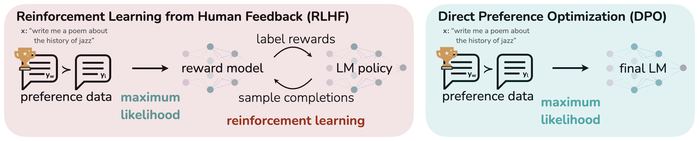
Картинка из оригинальной статьи DPO. Слева, на розовом фоне, классический RLHF: те же самые пары предпочтений $y_w \succ y_l$ сначала идут на обучение reward-модели по максимуму правдоподобия, а затем начинается цикл обучения с подкреплением — политика генерирует ответы, reward-модель их размечает, и так по кругу (две круговые стрелки в центре). Справа, на бирюзовом, DPO: из схемы исчезают и reward-модель, и весь цикл, остаётся один проход максимума правдоподобия по тем же парам, сразу дающий финальную модель. Обратите внимание, что подпись maximum likelihood есть на обеих половинах — разница не в том, как учат, а в том, что именно этим способом учат. Вывод: откуда берётся формула
Мы хотим максимизировать вознаграждение, не убегая далеко от референсной модели: $$ \max_{\textcolor{#93C5FD}{\pi}} \; \mathbb{E}_{x \sim \mathcal{D},\, y \sim \textcolor{#93C5FD}{\pi}(\cdot|x)}\!\left[r(x,y)\right] - \beta \cdot D_{\mathrm{KL}}\!\left(\textcolor{#93C5FD}{\pi} \;\|\; \textcolor{#6EE7B7}{\pi_{\text{ref}}}\right) $$
Это ровно та же цель, которую приближённо решает PPO. Разница в том, что PPO решает её итеративно методами RL, а DPO решает её аналитически.
У этой задачи есть точное решение — оно известно из вариационного исчисления и не требует никакого обучения: $$ \textcolor{#93C5FD}{\pi^*(y \mid x)} = \frac{\textcolor{#6EE7B7}{\pi_{\text{ref}}(y \mid x)}}{Z(x)} \exp\!\left(\frac{1}{\beta} r(x,y)\right) $$ где $Z(x) = \sum_y \textcolor{#6EE7B7}{\pi_{\text{ref}}(y \mid x)} \exp\!\left(r(x,y)/\beta\right)$ — нормировочная сумма по всем возможным ответам.
Формула говорит очень простую вещь: оптимальная политика — это референсная модель, перевзвешенная экспонентой награды. Ответы, которые нравятся оценщику, получают множитель больше единицы, остальные — меньше. Параметр $\beta$ регулирует резкость: маленькая $\beta$ — резкое перевзвешивание (почти вся масса уходит на лучший ответ), большая — мягкое (политика едва отличается от референсной).
Проблема одна: $Z(x)$ требует суммирования по всем возможным текстам. Их бесконечно много, вычислить $Z(x)$ невозможно. Именно поэтому формулой нельзя пользоваться напрямую — и именно эту трудность DPO обходит.
Прологарифмируем предыдущее равенство и выразим $r$: $$ \textcolor{#FCD34D}{r(x, y)} = \beta \log \frac{\textcolor{#93C5FD}{\pi^*(y \mid x)}}{\textcolor{#6EE7B7}{\pi_{\text{ref}}(y \mid x)}} + \beta \log Z(x) $$
Это центральный трюк всей работы: любая функция вознаграждения соответствует какой-то политике, и наоборот. Награда и политика — две записи одного и того же объекта. Значит, обучая политику, мы неявно обучаем и оценщика.
Как связать награду с человеческой разметкой «этот ответ лучше»? Стандартный ответ — модель Брэдли–Терри (Bradley–Terry), классическая модель парных сравнений (той же природы, что рейтинг Эло в шахматах): $$ p(y_w \succ y_l \mid x) = \sigma\!\left(\textcolor{#FCD34D}{r(x, y_w)} - \textcolor{#FCD34D}{r(x, y_l)}\right) $$
Смысл: вероятность того, что человек предпочтёт первый ответ, определяется разностью их наград, пропущенной через сигмоиду. Равные награды $\to$ вероятность $0.5$ (человек выбирает случайно). Разность $+2$ $\to$ примерно $88\%$ за первый.
Подставим выражение из шага 3 в модель Брэдли–Терри. В разности $r(x, y_w) - r(x, y_l)$ слагаемое $\beta \log Z(x)$ входит дважды с противоположными знаками: $$ \left[\ldots + \beta \log Z(x)\right] - \left[\ldots + \beta \log Z(x)\right] $$
Оно зависит только от промпта $x$, но не от конкретного ответа $y$, — а значит, у обоих ответов пары оно одинаково и сокращается. Невычислимая сумма по всем текстам исчезает сама собой.
В этом вся суть DPO: нам никогда не нужно знать абсолютную величину награды, достаточно её разности между двумя ответами на один и тот же промпт. А разность нормировки не содержит.
Итоговая функция потерь
$$ \mathcal{L}_{\text{DPO}}(\theta) = -\mathbb{E}_{(x,\, \textcolor{#6EE7B7}{y_w},\, \textcolor{#FCA5A5}{y_l})} \left[ \log \sigma\!\left( \textcolor{#FDBA74}{\beta} \log \frac{\textcolor{#93C5FD}{\pi_\theta(\textcolor{#6EE7B7}{y_w} \mid x)}}{\textcolor{#6EE7B7}{\pi_{\text{ref}}(\textcolor{#6EE7B7}{y_w} \mid x)}} - \textcolor{#FDBA74}{\beta} \log \frac{\textcolor{#93C5FD}{\pi_\theta(\textcolor{#FCA5A5}{y_l} \mid x)}}{\textcolor{#6EE7B7}{\pi_{\text{ref}}(\textcolor{#FCA5A5}{y_l} \mid x)}} \right) \right] $$
- $\textcolor{#6EE7B7}{y_w}$ — выбранный человеком ответ (chosen);
- $\textcolor{#FCA5A5}{y_l}$ — отвергнутый ответ (rejected);
- $\textcolor{#93C5FD}{\pi_\theta}$ — дообучаемая политика;
- $\textcolor{#6EE7B7}{\pi_{\text{ref}}}$ — замороженная референсная политика (SFT-чекпоинт);
- $\textcolor{#FDBA74}{\beta}$ — температура; регулирует силу неявного KL-ограничения, типично $0.1$.
Обратите внимание: здесь нет ни модели вознаграждения, ни сети ценности, ни сэмплирования. Это обычная функция потерь, которую можно посчитать за два прямых прохода.
Введём неявное вознаграждение: $$ \textcolor{#C4B5FD}{\hat{r}_\theta(x, y)} = \beta \log \frac{\textcolor{#93C5FD}{\pi_\theta(y \mid x)}}{\textcolor{#6EE7B7}{\pi_{\text{ref}}(y \mid x)}} $$ Тогда лосс выглядит как обычная логистическая регрессия на разности: $$ \mathcal{L}_{\text{DPO}}(\theta) = -\mathbb{E}\!\left[\log \sigma\!\left(\textcolor{#C4B5FD}{\hat{r}_\theta(x,y_w)} - \textcolor{#C4B5FD}{\hat{r}_\theta(x,y_l)}\right)\right] $$
Величину $\hat{r}_\theta$ показывают все библиотеки под именами
rewards/chosenиrewards/rejected, а их разность — какrewards/margins. Это главные метрики для наблюдения за обучением DPO.Промпт: «Как сварить яйцо всмятку?». Пусть $\beta = 0.1$, а логарифмы вероятностей ответов целиком (сумма по токенам) такие:
$\log \pi_\theta$ $\log \pi_{\text{ref}}$ $\log$-отношение $y_w$ (правильный рецепт) $-12.0$ $-12.5$ $+0.5$ $y_l$ (бессмысленный ответ) $-20.0$ $-19.0$ $-1.0$ Неявные награды: $\hat{r}(y_w) = 0.1 \cdot 0.5 = 0.05$, $\hat{r}(y_l) = 0.1 \cdot (-1.0) = -0.1$.
Разность (margin): $0.05 - (-0.1) = 0.15$. Лосс: $-\log \sigma(0.15) = -\log 0.537 \approx 0.62$.
Модель уже «на правильной стороне» (margin положителен), но уверенности мало, поэтому лосс далёк от нуля и градиент продолжает раздвигать ответы.
Градиент DPO имеет вид $$ \nabla_\theta \mathcal{L}_{\text{DPO}} = -\beta\,\mathbb{E}\Big[\underbrace{\sigma\big(\hat{r}(y_l) - \hat{r}(y_w)\big)}_{\text{вес примера}} \Big(\nabla_\theta \log \pi_\theta(y_w) - \nabla_\theta \log \pi_\theta(y_l)\Big)\Big] $$
Читается это так: поднимай вероятность выбранного ответа, опускай вероятность отвергнутого, а множитель впереди задаёт силу — он тем больше, чем сильнее модель сейчас ошибается в этой паре. Примеры, на которых модель уже уверенно права, почти не дают градиента; примеры, где она ошибается, тянут сильнее всего. Это ровно то поведение, которое мы ожидали бы от разумной функции потерь.
Очень частое наблюдение при обучении DPO: в логах падают обе величины — и
logps/chosen, иlogps/rejected. Кажется, что что-то сломано: модель стала считать менее вероятным в том числе и правильный ответ.На самом деле всё работает как задумано. Лосс зависит только от разности неявных наград и никак не ограничивает их абсолютный уровень. Модели одинаково выгодно и поднять $y_w$, и утопить $y_l$ поглубже — а второе технически проще, поэтому оптимизация часто идёт именно туда. Следить надо за
rewards/margins, а не за абсолютными логарифмами вероятностей.Практическое следствие: DPO без предварительного качественного SFT работает плохо. Он умеет расставлять приоритеты между ответами, но не умеет учить модель писать хорошие ответы с нуля.
PPO DPO Модель вознаграждения Отдельная обученная сеть Не нужна (неявная) Сеть ценности (critic) Нужна Не нужна Сэмплирование при обучении On-policy, генерация на каждом шаге (дорого) Нет, готовые пары Моделей в памяти 4 2 (обучаемая + референсная) Тип обучения RL-цикл Обычный supervised-градиентный спуск Стабильность и воспроизводимость Сложнее, много гиперпараметров Проще Потолок качества Как правило выше Чуть ниже при малых данных DPO — off-policy метод: он учится на статическом датасете пар, собранных когда-то другой моделью. После нескольких шагов обучения политика уже отличается от той, что порождала эти ответы, а пары остаются прежними.
Что из этого следует на практике:
- Модель не получает обратной связи о своих собственных текущих ответах — только о чужих, зафиксированных в датасете.
- В областях, не покрытых датасетом, поведение непредсказуемо: там ничто не мешает неявной награде уехать куда угодно.
- Отсюда популярность iterative DPO / online DPO: сгенерировать ответы текущей моделью, разметить их (людьми или моделью-судьёй), дообучить, повторить. Это возвращает часть преимуществ on-policy обучения, оставаясь дешевле PPO.
- «$\beta$ в DPO — это температура сэмплирования» — нет, это сила неявного KL-ограничения. Большая $\beta$ прижимает политику к $\pi_{\text{ref}}$, малая даёт свободу и повышает риск деградации.
- «Референсную модель можно не хранить, взять $\pi_{\text{ref}} = \pi_\theta$» — тогда логарифм отношения тождественно равен нулю и обучение теряет смысл. Референсная модель обязана быть замороженной.
- «DPO заменяет SFT» — нет, он идёт после SFT и обычно от него же и стартует. Референсной моделью служит именно SFT-чекпоинт.
- «Раз нет RL, гиперпараметров можно не подбирать» — DPO очень чувствителен к $\beta$ и learning rate; типичные значения — $\beta \in [0.01, 0.5]$ и learning rate на порядок меньше, чем на SFT (порядка $5\cdot10^{-7}$ для полного дообучения).
- Zephyr, OpenHermes, Tulu — открытые модели, тонко настроенные через DPO на датасетах предпочтений вроде UltraFeedback; именно Zephyr-7B показал, что DPO даёт качество уровня гораздо более крупных RLHF-моделей.
- Llama 3 Instruct (Meta, 2024) — в пайплайне выравнивания DPO применяется итеративно, раунд за раундом.
- Быстрый прототип выравнивания: DPO позволяет дообучить 7B-модель на одной GPU за часы, тогда как PPO потребовал бы кластер.
Какова ключевая идея DPO и в чём его отличие от PPO?
DPO использует то, что оптимальная RLHF-политика имеет замкнутую форму, позволяющую выразить вознаграждение через отношение $\pi_\theta / \pi_{\text{ref}}$. Это убирает и модель вознаграждения, и RL-цикл: обучение сводится к обычному градиентному спуску на парах предпочтений.
Почему в DPO аннулируется нормировочный коэффициент $Z(x)$?
$Z(x)$ зависит только от промпта $x$, но не от ответа $y$. В модели Bradley–Terry берётся разность $r(y_w) - r(y_l)$ для двух ответов на один и тот же промпт, поэтому слагаемое $\beta\log Z(x)$ входит дважды с противоположными знаками и сокращается. Именно это делает метод вычислимым.
Что такое модель Брэдли–Терри и зачем она здесь?
Классическая модель парных сравнений: вероятность предпочесть один вариант другому равна сигмоиде разности их «сил» — здесь наград. Она связывает непрерывную функцию вознаграждения с бинарной человеческой разметкой «этот лучше того».
Что такое $\pi_{\text{ref}}$ в DPO и зачем она нужна?
Замороженная референсная модель, обычно SFT-чекпоинт. Она играет роль нормировщика: логарифм отношения $\pi_\theta / \pi_{\text{ref}}$ и есть неявное вознаграждение, а KL-ограничение относительно $\pi_{\text{ref}}$ оказывается встроенным в саму функцию потерь через $\beta$.
Что означает параметр $\beta$ в DPO?
Он контролирует, насколько сильно политика может отклоняться от $\pi_{\text{ref}}$. Большая $\beta$ — сильная неявная KL-регуляризация, политика остаётся близко к SFT. Малая $\beta$ — больше свободы и выше риск деградации на данных, не покрытых датасетом.
Почему при обучении DPO падают логарифмы вероятностей и выбранного ответа тоже?
Функция потерь зависит только от разности неявных наград и не ограничивает их абсолютный уровень. Модели одинаково выгодно поднять $y_w$ или утопить $y_l$, и технически проще второе. Поэтому контролировать надо
rewards/margins, а не абсолютные логарифмы вероятностей.Какой главный практический недостаток DPO по сравнению с PPO?
DPO — off-policy метод: он учится на статических парах, собранных другой моделью, и не получает обратной связи о собственных текущих ответах. PPO генерирует данные из текущей политики, что при достаточных ресурсах даёт более точный сигнал. Компромисс — iterative/online DPO.
-
IPO (2023)
IPO (Identity Preference Optimization) — метод обучения на предпочтениях, предложенный Азаром и соавторами (Azar et al., Google DeepMind, 2023). IPO устраняет теоретическую проблему DPO: при детерминированных предпочтениях (когда один ответ в разметке всегда лучше другого) функция потерь DPO не имеет конечного минимума — оптимизация бесконечно раздвигает вероятностный разрыв, и политика вырождается.
Если совсем простыми словами: DPO говорит модели «сделай разрыв между хорошим и плохим ответом побольше» и никогда не говорит «достаточно». IPO задаёт конкретную цель: «разрыв должен быть равен вот такому числу» — и штрафует как за недобор, так и за перебор.
В чём именно проблема DPO
Через логарифм отношения вероятностей $$ \textcolor{#C4B5FD}{\hat{r}(y)} = \log \frac{\textcolor{#93C5FD}{\pi_\theta(y \mid x)}}{\textcolor{#6EE7B7}{\pi_{\text{ref}}(y \mid x)}}, \qquad \textcolor{#FDBA74}{\Delta} = \textcolor{#C4B5FD}{\hat{r}(y_w)} - \textcolor{#C4B5FD}{\hat{r}(y_l)} $$ функция потерь записывается как $$ \mathcal{L}_{\text{DPO}} = -\mathbb{E}\!\left[\log \sigma\!\left(\textcolor{#FDBA74}{\beta \Delta}\right)\right] $$
Посмотрим на $-\log \sigma(z)$ как на функцию: она строго убывает и стремится к нулю при $z \to +\infty$, но нуля никогда не достигает. У неё нет минимума на конечном $z$.
Пока в разметке встречаются противоречия (на один и тот же промпт иногда предпочитают $y_w$, иногда $y_l$), это не страшно: слагаемые с противоположными знаками уравновешивают друг друга, и оптимум оказывается в конечной точке — как раз там, где отношение вероятностей соответствует наблюдаемой частоте предпочтений.
Но если предпочтение детерминировано — $y_w$ помечен лучшим всегда, без единого исключения, — уравновешивать нечем. Оптимизация будет двигать $\Delta$ к $+\infty$ столько, сколько ей позволит бюджет шагов.
Кажется, что это редкий вырожденный случай. На деле наоборот:
- в датасете каждая пара обычно встречается один раз, а одна метка — это по определению детерминированное предпочтение;
- когда ответы сильно различаются по качеству (развёрнутый ответ против «не знаю»), аннотаторы согласны в 100% случаев;
- синтетическая разметка моделью-судьёй воспроизводима и потому детерминирована ещё сильнее человеческой.
Так что «редкий вырожденный случай» — это режим, в котором DPO работает практически всегда.
Устремить $\Delta \to +\infty$ можно двумя способами: поднять $\pi_\theta(y_w)$ к единице или утопить $\pi_\theta(y_l)$ к нулю. Оба ведут к коллапсу распределения — политика становится почти детерминированной.
Последствия видны на глаз: пропадает разнообразие генераций, модель начинает повторяться, зацикливаться на шаблонных формулировках и терять способности, не связанные с датасетом предпочтений. Формально KL-регуляризация в DPO есть (через $\beta$), но она не является жёстким ограничением: это лишь множитель, и достаточное число шагов оптимизации её пересиливает.
Отдельная неприятность: раздувание $\Delta$ происходит и на шумных парах, где разметчик просто ошибся. DPO не умеет усомниться в метке — он одинаково старательно раздвигает и правильные пары, и ошибочные.
Решение IPO
IPO заменяет $\log\sigma$ квадратичной потерей и вводит явный целевой отступ $\frac{1}{2\tau}$:
$$ \mathcal{L}_{\text{IPO}}(\theta) = \mathbb{E}_{(x,\, \textcolor{#6EE7B7}{y_w},\, \textcolor{#FCA5A5}{y_l})} \left[ \left( \underbrace{\log \frac{\textcolor{#93C5FD}{\pi_\theta(\textcolor{#6EE7B7}{y_w} \mid x)}}{\textcolor{#6EE7B7}{\pi_{\text{ref}}(\textcolor{#6EE7B7}{y_w} \mid x)}} - \log \frac{\textcolor{#93C5FD}{\pi_\theta(\textcolor{#FCA5A5}{y_l} \mid x)}}{\textcolor{#6EE7B7}{\pi_{\text{ref}}(\textcolor{#FCA5A5}{y_l} \mid x)}}}_{\textcolor{#FDBA74}{\Delta(x,y_w,y_l)}} - \frac{1}{2\textcolor{#C4B5FD}{\tau}} \right)^2 \right] $$
- $\textcolor{#FDBA74}{\Delta}$ — тот же самый разрыв между неявными наградами, что и в DPO;
- $\frac{1}{2\textcolor{#C4B5FD}{\tau}}$ — целевое значение этого разрыва;
- $\textcolor{#C4B5FD}{\tau}$ — сила регуляризации; по роли аналогична $\beta$ в DPO.
Иначе говоря, задача превращается из «максимизируй $\Delta$» в регрессию: «подгони $\Delta$ под заданное число».
Ключевое различие — в поведении на больших $\Delta$:
- у $-\log\sigma(\beta\Delta)$ производная при росте $\Delta$ стремится к нулю: функция насыщается, но всё равно продолжает медленно тянуть вправо и никогда не тянет обратно;
- у $(\Delta - c)^2$ производная равна $2(\Delta - c)$ и меняет знак при переходе через целевое значение: перебрали — градиент возвращает назад, причём тем сильнее, чем сильнее перебор.
Функция потерь становится самоограничивающейся. У неё есть настоящий минимум в конечной точке, и оптимизация в нём останавливается.
Возьмём $\beta = 0.1$ для DPO и $\tau = 0.1$ (то есть целевой отступ $\frac{1}{2\tau} = 5$) для IPO:
$\Delta$ $\mathcal{L}_{\text{DPO}} = -\log\sigma(0.1\Delta)$ $\mathcal{L}_{\text{IPO}} = (\Delta - 5)^2$ $0$ $0.693$ $25$ $2$ $0.598$ $9$ $5$ $0.474$ $\mathbf{0}$ $10$ $0.313$ $25$ $50$ $0.007$ $2025$ Колонка DPO монотонно убывает — модели всегда выгодно двигаться дальше вправо. Колонка IPO имеет минимум ровно в целевой точке, и уход вправо наказывается сильнее, чем недобор слева.
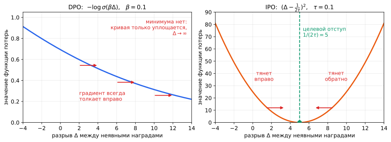
По горизонтали на обоих графиках — разрыв $\Delta$ между неявными наградами выбранного и отвергнутого ответов, по вертикали — значение функции потерь (вертикальные шкалы независимы). Слева, DPO: кривая монотонно убывает и лишь уплощается — минимума нет, градиент в любой точке толкает вправо, поэтому при детерминированных предпочтениях $\Delta$ уходит в бесконечность и политика коллапсирует. Справа, IPO: парабола с минимумом ровно в целевой точке $1/(2\tau) = 5$ — слева от неё градиент толкает вправо, справа возвращает обратно, и разрыв стабилизируется на конечном значении. При минимизации IPO политика ищет параметры, при которых $$ \textcolor{#FDBA74}{\Delta(x,y_w,y_l)} = \frac{1}{2\textcolor{#C4B5FD}{\tau}} $$
- Большая $\tau$ $\to$ маленький целевой отступ $\to$ политика почти не отходит от $\pi_{\text{ref}}$; в пределе $\tau \to \infty$ отступ равен нулю и оптимум — сама референсная модель.
- Малая $\tau$ $\to$ большой целевой отступ $\to$ модель обязана уверенно разделять ответы; в пределе $\tau \to 0$ требуемый отступ уходит в бесконечность, и мы возвращаемся к патологии DPO.
Ценность в том, что теперь регуляризация — действительно ограничение, а не штрафной множитель, который оптимизация может пересилить.
DPO IPO Функция потерь $-\log \sigma(\beta \cdot \Delta)$ $(\Delta - \frac{1}{2\tau})^2$ Тип задачи Классификация пар Регрессия разрыва к цели Поведение при детерм. предпочтениях Разрыв $\to \infty$, коллапс Разрыв $\to \frac{1}{2\tau}$, стабильно Есть ли конечный минимум Нет Да Теоретическая состоятельность Только при стохастических предпочтениях В общем случае Устойчивость к шуму в разметке Ниже Выше Гиперпараметр $\beta$ $\tau$ Сложность реализации Одинаково просто Одинаково просто «Identity» в Identity Preference Optimization означает тождественное преобразование. Азар и соавторы показали, что DPO — частный случай более общей схемы $\Psi$PO, где к вероятности предпочтения применяется некоторая функция $\Psi$. В DPO эта функция — логит ($\Psi = \sigma^{-1}$), и именно её неограниченность порождает проблему.
IPO берёт в качестве $\Psi$ тождественную функцию — то есть работает напрямую с вероятностью предпочтения, не пропуская её через логит. Отсюда и ограниченность, и название.
- «IPO всегда лучше DPO» — нет. При достаточно большом и разнообразном датасете, где одинаковые промпты встречаются с разной разметкой, DPO работает не хуже, а иногда и лучше. Преимущество IPO проявляется на маленьких, чистых и потому детерминированных наборах данных.
- «$\tau$ можно взять таким же, как $\beta$» — они связаны обратно: чем меньше $\tau$, тем больше допустимое отклонение, а у $\beta$ зависимость противоположная. Подбирать надо заново.
- «Квадратичный лосс — это MSE над наградами» — регрессия идёт не на абсолютные награды, а на их разность, и целевое значение задаётся не данными, а гиперпараметром.
- «IPO решает проблему шумной разметки полностью» — только смягчает: ошибочная пара всё равно тянет $\Delta$ к целевому значению, просто не до бесконечности.
- Дообучение на небольших датасетах с чёткими предпочтениями (бинарная разметка «хорошо/плохо», синтетика от модели-судьи) — там, где DPO переобучается быстрее всего.
- TRL (Hugging Face) — IPO доступен как опция в
DPOTrainerчерез параметрloss_type="ipo", менять больше ничего не нужно. - Исследования устойчивости методов выравнивания к шуму в аннотациях: IPO часто берут как более консервативную базовую линию.
В чём ключевое отличие IPO от DPO?
IPO заменяет $\log\sigma$ квадратичной потерей с целевым отступом $\frac{1}{2\tau}$, превращая задачу из «максимизируй разрыв» в «подгони разрыв к заданному значению». Это предотвращает бесконечный рост разрыва между выбранным и отвергнутым ответами.
Почему DPO «ломается» при детерминированных предпочтениях?
Функция $-\log\sigma(\beta\Delta)$ строго убывает и не имеет конечного минимума. Если разметка не содержит противоречий, нечему уравновесить градиент, и оптимизация гонит $\Delta \to +\infty$, что означает коллапс политики в почти детерминированное распределение.
Почему детерминированные предпочтения — не редкий случай?
Каждая пара в датасете обычно встречается один раз, а единственная метка детерминирована по определению. Плюс на явно различающихся по качеству ответах аннотаторы согласны единогласно, а синтетическая разметка моделью-судьёй воспроизводима.
Что конкретно плохого в бесконечном разрыве?
Он достигается либо подъёмом вероятности $y_w$ к единице, либо обнулением вероятности $y_l$, то есть коллапсом распределения: пропадает разнообразие генераций, модель начинает повторяться и теряет способности вне датасета предпочтений.
Что задаёт параметр $\tau$ в IPO?
Целевой разрыв $\frac{1}{2\tau}$ между неявными наградами. Большая $\tau$ — маленький целевой разрыв, политика остаётся близко к референсной; малая $\tau$ — большой разрыв и более уверенное разделение ответов; в пределе $\tau \to 0$ поведение вырождается к DPO.
Почему квадратичная потеря делает обучение самоограничивающимся?
Её производная $2(\Delta - c)$ меняет знак при переходе через целевое значение: при переборе градиент возвращает разрыв назад, и тем сильнее, чем больше перебор. У $-\log\sigma$ производная знака не меняет и лишь стремится к нулю.
Как IPO связан с PPO и RLHF?
IPO, как и DPO, — off-policy метод без модели вознаграждения и без сэмплирования из текущей политики. Все три метода оптимизируют одну и ту же цель — вознаграждение с KL-ограничением, — но разными способами: PPO итеративно через RL, DPO аналитически, IPO аналитически с явным ограничением разрыва.
Как практически переключиться с DPO на IPO?
В большинстве библиотек (TRL, axolotl) достаточно указать
loss_type="ipo"и заново подобрать $\tau$. Вычислительная стоимость та же: два прямых прохода через $\pi_\theta$ и $\pi_{\text{ref}}$ на каждую пару.
-
KTO (2024)
KTO (Kahneman–Tversky Optimization) — метод дообучения LLM по предпочтениям, предложенный Этайяраджем и соавторами (Ethayarajh et al., Contextual AI, 2024). В отличие от DPO и IPO, KTO не требует парных данных $(y_w, y_l)$: достаточно отдельных примеров $(x, y, \text{label})$, где метка принимает одно из двух значений — «желательный» или «нежелательный».
Если совсем простыми словами: DPO спрашивает у разметчика «какой из этих двух ответов лучше?», а KTO — «этот ответ хороший или плохой?». Второй вопрос дешевле, и главное — ответы на него у всех уже есть: это лайки и дизлайки под сообщениями в любом чат-продукте.
Мотивация: почему пары — это дорого
DPO и IPO обучаются на парах $(y_w \succ y_l \mid x)$. Чтобы получить один такой пример, нужно:
- сгенерировать два ответа на один и тот же промпт;
- показать их аннотатору вместе;
- дождаться сравнительного суждения.
Каждый шаг стоит денег и времени. Аннотатору приходится прочитать оба текста и удерживать их в голове одновременно, а на длинных ответах это уже полноценная работа на несколько минут.
Абсолютных оценок. Любой развёрнутый чат-продукт производит их сам собой:
- кнопки «палец вверх / палец вниз» под ответом;
- отметки модераторов «этот ответ нарушает политику»;
- флаги автоматических проверок: код скомпилировался или нет, JSON провалидировался или нет, ответ прошёл safety-фильтр или нет;
- обычные пользовательские сигналы — скопировал ответ и ушёл (хорошо) или переспросил то же самое иначе (плохо).
Всё это — одиночные метки. Превратить их в пары нельзя: у лайкнутого ответа обычно просто нет второго, дизлайкнутого варианта на тот же промпт. KTO спроектирован ровно под этот формат данных, поэтому его можно применить к уже накопленным логам, ничего дополнительно не размечая.
Теория перспектив в двух абзацах
Теория перспектив (prospect theory, Нобелевская премия по экономике 2002) описывает, как люди на самом деле оценивают выигрыши и потери. Три свойства важны для нас:
- Всё оценивается относительно точки отсчёта, а не в абсолюте. Зарплата 100 тысяч — это радость, если раньше было 80, и катастрофа, если раньше было 150. Само число ни о чём не говорит.
- Потери переживаются острее выигрышей (loss aversion). Экспериментально: неприятность от потери 1000 рублей примерно вдвое сильнее радости от находки тех же 1000.
- Чувствительность убывает. Разница между 0 и 1000 ощущается куда сильнее, чем между 10 000 и 11 000. Отсюда S-образная (вогнуто-выпуклая) форма функции ценности.
Функция ценности $v(\cdot)$ в теории перспектив — это как раз кривая, переводящая объективное изменение (в деньгах) в субъективное ощущение.
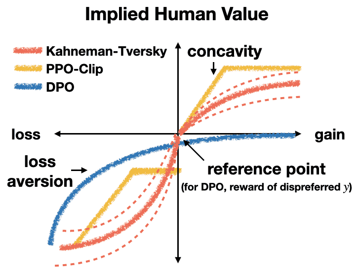
Рисунок из статьи KTO. По горизонтали — отклонение от точки отсчёта: влево потери, вправо выигрыши; по вертикали — субъективная ценность. Красная кривая и есть функция Канемана–Тверски: вогнутая справа, выпуклая слева и заметно круче в области потерь — это и есть три свойства из списка выше, собранные в одну картинку. Пунктирные красные линии — та же форма при других параметрах. Жёлтая ломаная — функция ценности, неявно зашитая в PPO с обрезанием: наклонный участок, упирающийся в горизонтальное плато, и есть clip. Синяя — DPO: очень крутая в области потерь и почти плоская в области выигрышей, то есть куда сильнее реагирует на плохие ответы, чем на хорошие. Авторы KTO предложили строить функцию потерь по этой же схеме, а не по модели Брэдли–Терри, как в DPO. Соответствие получается такое:
- «деньги» — неявное вознаграждение $\hat{r}_\theta(x,y) = \log\frac{\pi_\theta(y|x)}{\pi_{\text{ref}}(y|x)}$, то же самое, что в DPO;
- точка отсчёта — величина $z_0$, средний уровень отклонения политики от референсной по батчу;
- выигрыши и потери — желательные и нежелательные ответы;
- неприятие потерь — асимметричные веса $\lambda_U > \lambda_D$;
- убывающая чувствительность — сигмоида, которая насыщается на больших значениях.
Практический смысл: абсолютную «хорошесть» ответа сравнивают не с нулём, а с текущим средним уровнем модели — ровно так, как человек сравнивает зарплату не с нулём, а с прежней.
Формальная конструкция
$$ v(\textcolor{#93C5FD}{\hat{r}_\theta(x,y)}) = \begin{cases} \textcolor{#6EE7B7}{\lambda_D} \cdot \sigma\!\left(\textcolor{#FDBA74}{\beta} \cdot \left(\textcolor{#93C5FD}{\hat{r}_\theta(x,y)} - \textcolor{#C4B5FD}{z_0}\right)\right) & \text{если } y \text{ желательный} \\[6pt] \textcolor{#FCA5A5}{\lambda_U} \cdot \sigma\!\left(\textcolor{#FDBA74}{\beta} \cdot \left(\textcolor{#C4B5FD}{z_0} - \textcolor{#93C5FD}{\hat{r}_\theta(x,y)}\right)\right) & \text{если } y \text{ нежелательный} \end{cases} $$
где неявное вознаграждение — то же, что в DPO: $$ \textcolor{#93C5FD}{\hat{r}_\theta(x,y)} = \log \frac{\textcolor{#93C5FD}{\pi_\theta(y \mid x)}}{\textcolor{#6EE7B7}{\pi_{\text{ref}}(y \mid x)}} $$
- $\textcolor{#6EE7B7}{\lambda_D}$ — вес желательных ответов (выигрышей);
- $\textcolor{#FCA5A5}{\lambda_U}$ — вес нежелательных ответов (потерь);
- $\textcolor{#FDBA74}{\beta}$ — температура, как в DPO;
- $\textcolor{#C4B5FD}{z_0}$ — точка отсчёта.
Обратите внимание на симметрию: у желательных ответов внутри сигмоиды стоит $\hat{r} - z_0$, у нежелательных — $z_0 - \hat{r}$. Обе ветви максимизируются, просто «хорошим» выгодно быть выше точки отсчёта, а «плохим» — ниже.
$$ \mathcal{L}_{\text{KTO}}(\theta) = \mathbb{E}_{(x,\,y)\sim\mathcal{D}}\!\left[\lambda_y - v\!\left(\textcolor{#93C5FD}{\hat{r}_\theta(x,y)}\right)\right] $$ где $\lambda_y$ — вес соответствующего класса ($\lambda_D$ или $\lambda_U$), нужный лишь для того, чтобы слагаемое было неотрицательным.
Развёрнуто по классам: $$ \mathcal{L}_{\text{KTO}}(\theta) = -\textcolor{#6EE7B7}{\lambda_D}\,\mathbb{E}_{\text{желательные}}\!\left[\sigma\!\left(\textcolor{#FDBA74}{\beta}\!\left(\textcolor{#93C5FD}{\hat{r}_\theta} - \textcolor{#C4B5FD}{z_0}\right)\right)\right] - \textcolor{#FCA5A5}{\lambda_U}\,\mathbb{E}_{\text{нежелательные}}\!\left[\sigma\!\left(\textcolor{#FDBA74}{\beta}\!\left(\textcolor{#C4B5FD}{z_0} - \textcolor{#93C5FD}{\hat{r}_\theta}\right)\right)\right] + \text{const} $$
- для желательных ответов лосс уменьшается, когда $\hat{r}_\theta$ поднимается выше $z_0$;
- для нежелательных — когда $\hat{r}_\theta$ опускается ниже $z_0$.
$$ \textcolor{#C4B5FD}{z_0} = \mathbb{E}_{x' \sim \mathcal{D}}\!\left[D_{\text{KL}}\!\left(\textcolor{#93C5FD}{\pi_\theta(\cdot \mid x')} \;\|\; \textcolor{#6EE7B7}{\pi_{\text{ref}}(\cdot \mid x')}\right)\right] $$
На практике её оценивают по батчу: берут другие, не связанные с текущим примером промпты и считают по ним среднее отклонение политики от референсной. Важно, что $z_0$ не зависит от конкретного ответа $y$ — это общий фон, а не свойство примера.
Без неё нечему было бы уравновесить оптимизацию: модели просто выгодно бесконечно поднимать вероятность всего желательного (та же болезнь, что у DPO).
$z_0$ работает как цена отклонения от референсной модели. Читать формулу нужно так: «желательный ответ засчитывается только тогда, когда он поднят сильнее, чем модель в среднем уже отъехала от $\pi_{\text{ref}}$». Как только политика уходит далеко, $z_0$ растёт, планка поднимается и дальнейший рост перестаёт вознаграждаться.
Получается адаптивная KL-регуляризация: она встроена прямо в функцию потерь и подстраивается под текущее состояние обучения, а не задана фиксированным множителем.
Пусть $\beta = 0.1$, а по батчу посторонних промптов оценено $z_0 = 0.4$.
Пример Метка $\hat{r}_\theta$ $\hat{r}_\theta - z_0$ Что делает градиент A желательный $1.2$ $+0.8$ почти ничего: уже выше планки, сигмоида насыщена B желательный $0.1$ $-0.3$ тянет вверх: хороший ответ ниже фона C нежелательный $0.9$ $+0.5$ сильно тянет вниз: плохой ответ поднят выше фона D нежелательный $-0.6$ $-1.0$ почти ничего: уже утоплен достаточно Видно главное отличие от DPO: каждый пример оценивается сам по себе, относительно общего фона $z_0$, а не в паре с конкретным конкурентом.
Асимметрия весов и дисбаланс данных
Из теории перспектив: потеря величины $x$ ощущается болезненнее, чем эквивалентный выигрыш той же величины. В KTO это выражается неравенством $$ \frac{\textcolor{#FCA5A5}{\lambda_U}}{\textcolor{#6EE7B7}{\lambda_D}} > 1 $$ то есть штраф за нежелательный ответ весит больше, чем поощрение за желательный. Модель сильнее «боится» сгенерировать плохое, чем стремится сгенерировать хорошее, — что для выравнивания как раз и нужно: цена одного токсичного ответа выше ценности одного удачного.
Веса используют ещё и для компенсации перекоса в данных. Авторы рекомендуют держать отношение $$ \frac{\textcolor{#6EE7B7}{\lambda_D} \cdot n_D}{\textcolor{#FCA5A5}{\lambda_U} \cdot n_U} \in \left[1,\ \tfrac{4}{3}\right] $$ где $n_D$ и $n_U$ — количество желательных и нежелательных примеров в датасете.
Пусть в логах 70% лайков и 30% дизлайков, то есть $n_D / n_U = 2.33$. Зафиксируем $\lambda_D = 1$ и найдём допустимый диапазон для $\lambda_U$:
$$ 1 \le \frac{1 \cdot 2.33}{\lambda_U} \le \frac{4}{3} \quad\Longrightarrow\quad 1.75 \le \lambda_U \le 2.33 $$
Берём, например, $\lambda_U = 2.0$. Смысл: раз дизлайков в 2,3 раза меньше, каждый из них должен весить примерно вдвое больше, иначе редкий класс просто утонет в градиенте.
DPO / IPO KTO Формат данных Пары $(y_w, y_l)$ на один промпт Одиночные $(x, y, \text{label})$ Вопрос аннотатору «Какой из двух лучше?» «Этот ответ хороший?» Стоимость сбора данных Выше Ниже, часто данные уже есть Работа с несбалансированными данными Плохо Хорошо (через $\lambda_D$, $\lambda_U$) Регуляризация Фиксированный множитель $\beta$ Адаптивная через $z_0$ Теоретическая основа Модель Брэдли–Терри Теория перспектив Что сравнивается Два ответа между собой Ответ с общим фоном $z_0$ - «KTO — это DPO для непарных данных» — по формату да, но математика другая: не Брэдли–Терри, а функция ценности с точкой отсчёта. Из пар KTO тоже умеет учиться (пара разбирается на два независимых примера), но обратное неверно.
- «$z_0$ — это константа» — нет, она пересчитывается по каждому батчу и растёт по мере ухода политики от референсной; в этом и состоит адаптивность регуляризации.
- «$\lambda_U$ надо просто взять побольше» — слишком большой $\lambda_U$ загоняет модель в режим отказов: безопаснее всего вообще ничего не отвечать. Ориентируйтесь на рекомендованный диапазон.
- «Лайки пользователей — готовая разметка» — осторожно: пользователи ставят лайк за уверенный тон и длину не меньше, чем за правильность. Обучение на сырых лайках напрямую отлично воспроизводит подхалимство модели (sycophancy).
- Дообучение на архивах обратной связи: логи чатов с метками «палец вверх / палец вниз» — канонический сценарий для KTO.
- Hugging Face TRL —
KTOTrainerдоступен из коробки, поддерживает настройку $\lambda_D$ / $\lambda_U$ и смешанные батчи из желательных и нежелательных примеров. - Данные с автоматической проверкой: «код скомпилировался», «JSON валиден», «тест прошёл» — бинарные сигналы, естественно ложащиеся в формат KTO без всякой ручной разметки.
Чем принципиально отличается формат данных KTO от DPO?
DPO требует парных данных $(y_w \succ y_l \mid x)$ — сравнения двух ответов на один промпт. KTO работает с непарными данными $(x, y, \text{label})$: каждый пример размечается независимо как желательный или нежелательный, что позволяет использовать уже накопленные лайки, дизлайки и результаты автоматических проверок.
Как теория перспектив Канемана–Тверски связана с функцией потерь KTO?
Из неё берутся три идеи: оценка относительно точки отсчёта (роль играет $z_0$), неприятие потерь (асимметричные веса $\lambda_U > \lambda_D$) и убывающая чувствительность (сигмоида). Модель «боится» плохих ответов сильнее, чем стремится к хорошим.
Что такое точка отсчёта $z_0$ в KTO и зачем она нужна?
Это оценка средней KL-дивергенции между текущей политикой и референсной по батчу посторонних промптов. Она служит ценой отклонения от $\pi_{\text{ref}}$: желательный ответ поощряется, только если поднят выше текущего среднего фона. Так KL-регуляризация встраивается в лосс адаптивно.
Чем $\hat{r}_\theta(x,y)$ в KTO совпадает с DPO и чем отличается использование?
Формула неявного вознаграждения одинаковая: $\hat{r}_\theta = \log(\pi_\theta / \pi_{\text{ref}})$. Различается способ применения: DPO берёт разность $\hat{r}(y_w) - \hat{r}(y_l)$ внутри пары, KTO сравнивает каждый $\hat{r}(y)$ с общей точкой отсчёта $z_0$ независимо от других примеров.
Как в KTO подбирают веса $\lambda_D$ и $\lambda_U$?
Так, чтобы отношение $\lambda_D n_D / (\lambda_U n_U)$ лежало в диапазоне $[1, 4/3]$, где $n_D, n_U$ — размеры классов. При перекосе 70/30 это даёт $\lambda_U \approx 2$ при $\lambda_D = 1$: редкий класс получает больший вес, чтобы не утонуть в градиенте.
Когда KTO предпочтительнее DPO?
Когда сравнительных аннотаций нет или они слишком дороги, а абсолютных оценок уже накоплено много (логи чатов, автоматические проверки). KTO также заметно лучше переносит сильный дисбаланс классов благодаря настраиваемым весам.
Какой главный риск при обучении на пользовательских лайках?
Пользователи ставят лайк не только за правильность, но и за уверенный тон, длину и согласие с их точкой зрения. Обучение на сырых лайках надёжно усиливает подхалимство модели, поэтому такие данные нужно чистить и дополнять объективными сигналами.
-
GRPO (2024)
GRPO (Group Relative Policy Optimization) — алгоритм оптимизации политики, предложенный командой DeepSeek в работе DeepSeekMath (Shao et al., 2024). GRPO сохраняет обучение на данных текущей политики, как в PPO, но устраняет необходимость в отдельной сети ценности (critic): базовая линия для вычисления преимущества берётся прямо из группы ответов, сгенерированных на один и тот же запрос.
Если совсем простыми словами: PPO держит вторую большую нейросеть, чтобы она предсказывала «а какой награды тут вообще стоило ожидать». GRPO говорит: не надо предсказывать — давайте измерим. Сгенерируем на один вопрос восемь ответов, посмотрим на средний балл по этой восьмёрке и будем считать хорошими те, что выше среднего.
Именно GRPO лежит в основе обучения DeepSeek-R1 (2025) — одной из первых открытых рассуждающих моделей.
Зачем избавляться от critic
Critic в PPO предсказывает, какую суммарную награду мы ожидаем получить, начиная с текущего состояния. Для LLM это неудобно сразу по нескольким причинам:
- Размер. Критик обычно строится на базе той же модели, то есть удваивает и память под веса, и состояния оптимизатора. Для 7B-модели это лишние ~110 ГБ.
- Награда приходит только в конце. У математической задачи балл известен лишь после последнего токена. Критик обязан по префиксу «Пусть $x$ — искомое число...» угадать, придёт ли решение к верному ответу через 500 токенов. Это очень трудная задача сама по себе.
- Обучается на движущейся цели. Критик учится по возвратам, которые порождает меняющаяся политика; политика учится по оценкам меняющегося критика. Два учащихся друг по другу — источник половины нестабильностей PPO.
Идея GRPO: если награда всё равно приходит только в конце, то и оценивать её проще эмпирически, а не моделью.
Групповая базовая линия
Для каждого запроса $q$ сэмплируется группа из $\textcolor{#67E8F9}{G}$ ответов текущей политикой: $$ \{o_1, o_2, \ldots, o_{\textcolor{#67E8F9}{G}}\} \sim \textcolor{#93C5FD}{\pi_{\theta_\text{old}}(\cdot \mid q)} $$ Каждый получает скалярную оценку $\textcolor{#FCD34D}{r_i} = r(q, o_i)$. Преимущество — z-нормализация внутри группы: $$ \textcolor{#FDBA74}{\hat{A}_i} = \frac{\textcolor{#FCD34D}{r_i} - \textcolor{#FCD34D}{\overline{r}}}{\textcolor{#FCD34D}{\sigma_r}}, \quad \textcolor{#FCD34D}{\overline{r}} = \frac{1}{\textcolor{#67E8F9}{G}}\sum_{j=1}^{\textcolor{#67E8F9}{G}} r_j, \quad \textcolor{#FCD34D}{\sigma_r} = \sqrt{\frac{1}{\textcolor{#67E8F9}{G}}\sum_{j=1}^{\textcolor{#67E8F9}{G}} (r_j - \textcolor{#FCD34D}{\overline{r}})^2} $$
Ответы выше среднего по группе получают $\hat{A}_i > 0$ и поощряются, ниже среднего — подавляются. Все токены одного ответа получают одно и то же преимущество.
Задача: «Найдите остаток от деления $7^{100}$ на 13». Модель генерирует $G = 8$ вариантов решения, каждое проверяется автоматически: $+1$ за верный ответ, $0$ за неверный.
Результат группы: $r = [1,\ 1,\ 0,\ 0,\ 0,\ 0,\ 1,\ 0]$.
- Среднее: $\overline{r} = 3/8 = 0.375$.
- Стандартное отклонение: $\sigma_r = \sqrt{0.2344} \approx 0.484$.
- Преимущество верных решений: $(1 - 0.375)/0.484 \approx +1.29$.
- Преимущество неверных: $(0 - 0.375)/0.484 \approx -0.77$.
Все токены трёх удачных решений получают $+1.29$, все токены пяти неудачных — $-0.77$. Никакой сети ценности для этого не понадобилось.
В policy gradient из награды разрешено вычитать любую величину, не зависящую от выбранного действия, — матожидание градиента при этом не меняется, а дисперсия падает. Это стандартный приём «baseline».
Среднее по группе $\overline{r}$ зависит от запроса $q$, но не от конкретного оцениваемого ответа (строго говоря, при малых $G$ есть небольшая корреляция, которой на практике пренебрегают). Значит, это законная базовая линия — просто оценённая методом Монте-Карло, а не предсказанная нейросетью.
Заодно z-нормализация делает масштаб преимуществ одинаковым для всех запросов: и для лёгкой задачи, где верны 7 решений из 8, и для трудной, где верно одно. Без деления на $\sigma_r$ градиент был бы сильно перекошен в сторону задач с большим разбросом наград.
Обратите внимание на смысловой сдвиг. PPO спрашивает: «насколько этот ответ хорош по абсолютной шкале?» — и для ответа нужна обученная модель. GRPO спрашивает: «насколько этот ответ хорош по сравнению с семью другими попытками решить ту же задачу?» — и для ответа достаточно арифметики.
Второй вопрос не только дешевле, но и честнее: он автоматически учитывает сложность задачи. Верное решение трудной задачи, где остальные семь попыток провалились, получает большое преимущество; верное решение тривиальной задачи, где справились все восемь, — нулевое, и правильно: учиться там нечему.
Функция потерь
$$ \mathcal{L}_{\text{GRPO}}(\theta) = -\mathbb{E}_{q,\,\{o_i\}_{i=1}^G} \left[ \frac{1}{\textcolor{#67E8F9}{G}} \sum_{i=1}^{\textcolor{#67E8F9}{G}} \frac{1}{|o_i|} \sum_{t=1}^{|o_i|} \left( \min\!\left( \textcolor{#F9A8D4}{r_{i,t}(\theta)} \cdot \textcolor{#FDBA74}{\hat{A}_i},\; \textcolor{#67E8F9}{\text{clip}}\!\left(\textcolor{#F9A8D4}{r_{i,t}(\theta)},\, 1-\varepsilon,\, 1+\varepsilon\right) \cdot \textcolor{#FDBA74}{\hat{A}_i} \right) - \textcolor{#C4B5FD}{\beta \cdot D_{\text{KL}}\!\left(\textcolor{#93C5FD}{\pi_\theta} \;\|\; \textcolor{#6EE7B7}{\pi_{\text{ref}}}\right)} \right) \right] $$
где токенное отношение вероятностей $$ \textcolor{#F9A8D4}{r_{i,t}(\theta)} = \frac{\textcolor{#93C5FD}{\pi_\theta(o_{i,t} \mid q,\, o_{i,\lt t})}}{\textcolor{#93C5FD}{\pi_{\theta_\text{old}}(o_{i,t} \mid q,\, o_{i,\lt t})}} $$
- $\textcolor{#F9A8D4}{r_{i,t}}$ и $\textcolor{#67E8F9}{\text{clip}}$ — ровно как в PPO, включая тот же смысл минимума из двух вариантов;
- $\textcolor{#FDBA74}{\hat{A}_i}$ — групповое преимущество, одно на весь ответ $o_i$;
- $\textcolor{#C4B5FD}{\beta D_{\text{KL}}}$ — KL-штраф относительно референсной модели;
- $|o_i|$ — длина ответа в токенах.
Формула выглядит громоздко из-за трёх вложенных сумм, но каждая имеет простой смысл:
- внутренняя сумма по $t$ с делением на $|o_i|$ — среднее по токенам одного ответа;
- внешняя сумма по $i$ с делением на $G$ — среднее по ответам группы;
- матожидание снаружи — среднее по запросам батча.
Всё остальное внутри — это в точности лосс PPO. Если убрать групповую нормализацию преимуществ, GRPO превратится в PPO с эмпирической базовой линией.
Без деления на $|o_i|$ длинный ответ вносил бы в градиент больший суммарный вклад просто потому, что в нём больше слагаемых. Модель быстро обнаруживает это и начинает генерировать более длинные ответы независимо от их качества — классический артефакт длиннового смещения (length bias).
Оговорка: у самой нормировки тоже есть побочный эффект. Деление на $|o_i|$ уменьшает вклад каждого токена в длинных ответах, из-за чего наказание за длинный неверный ответ ослабевает. Последующие работы (в частности, Dr. GRPO) предлагают другие схемы нормировки; это активная область споров, и единого ответа пока нет.
В оригинальной реализации DeepSeek KL оценивается покомпонентно на уже сгенерированных токенах: $$ \textcolor{#C4B5FD}{D_{\text{KL}}(\textcolor{#93C5FD}{\pi_\theta} \| \textcolor{#6EE7B7}{\pi_{\text{ref}}})} \approx \underbrace{\frac{\textcolor{#6EE7B7}{\pi_{\text{ref}}}}{\textcolor{#93C5FD}{\pi_\theta}} - \log \frac{\textcolor{#6EE7B7}{\pi_{\text{ref}}}}{\textcolor{#93C5FD}{\pi_\theta}} - 1}_{\text{оценка по одному сэмплу}} $$
Это известный «k3»-оценщик KL: он несмещён и, в отличие от наивного $\log(\pi_\theta/\pi_{\text{ref}})$, всегда неотрицателен (поскольку $u - \log u - 1 \ge 0$ при $u > 0$), что заметно снижает дисперсию. Дополнительного прохода через референсную модель он не требует — нужны лишь её логарифмы вероятностей на тех же токенах.
Ещё одно отличие от PPO: KL здесь входит прямо в функцию потерь, а не в награду. Это чище — KL не проходит через оценку преимуществ и не искажает её.
Вознаграждение в DeepSeek-R1
В DeepSeek-R1 функция вознаграждения — детерминированная, без обученной модели вознаграждения:
- Accuracy reward: $+1$, если ответ совпал с эталонным (проверяется правилом — сравнением числа, запуском тестов на сгенерированный код), $0$ иначе.
- Format reward: небольшой бонус за соблюдение формата цепочки рассуждений
<think>...</think>.
Отсутствие нейросетевого оценщика убирает главный источник reward hacking: в правиле «ответ совпал с эталоном» нет слепых зон, которые можно эксплуатировать. Модель не может уговорить проверяющего — она может только решить задачу.
Верифицируемая награда существует далеко не везде. Математика, код, логические головоломки — да: там есть объективно правильный ответ. Полезность ответа, вежливость тона, безопасность, качество художественного текста — нет.
Поэтому GRPO с правилом-оценщиком блестяще работает на reasoning-задачах и неприменим напрямую к общему выравниванию по человеческим предпочтениям, где без модели вознаграждения (или без модели-судьи) обойтись нечем.
PPO GRPO Базовая линия $V_\psi(s_t)$ — обученная сеть $\overline{r}$ по группе из $G$ ответов Critic нужен и обучается не нужен Моделей в памяти 4 3 (actor, reference, оценщик) Экономия памяти — на одну большую модель Стоимость генерации 1 ответ на запрос $G$ ответов на запрос Дисперсия оценки $\hat{A}$ ниже при хорошем critic выше при малом $G$ Куда входит KL в награду в функцию потерь Схема из статьи DeepSeekMath: сверху PPO, снизу GRPO. Жёлтые блоки — обучаемые модели, голубые — замороженные, и уже по цвету видно главное: в верхней половине жёлтых две (policy и value), в нижней одна. В PPO на запрос $q$ приходится один ответ $o$, награда $r$ собирается из reward-модели и KL к reference-модели, а преимущество $A$ считает GAE по выходу $v$ отдельной value-модели. В GRPO ни value-модели, ни GAE нет: политика выдаёт сразу группу $o_1 \ldots o_G$, reward-модель даёт им награды $r_1 \ldots r_G$, а блок Group Computation превращает их в $A_1 \ldots A_G$ нормировкой внутри группы. Проследите за стрелкой KL: наверху она входит в награду через $\oplus$, внизу идёт напрямую к policy-модели, то есть в функцию потерь. GRPO убирает критика, то есть примерно четверть памяти и половину обучаемых параметров. Но взамен требует генерировать $G$ ответов вместо одного, а генерация — самая медленная часть RL-цикла для LLM.
Итоговый баланс зависит от того, во что вы упираетесь. Если в память GPU (типичный случай) — GRPO выигрывает крупно: генерацию можно распараллелить и вынести на отдельный движок инференса вроде vLLM, а вот лишние 110 ГБ под критика взять неоткуда. Если же в пропускную способность генерации, выигрыш скромнее.
- «Если все ответы в группе одинаковы по награде, ничего страшного» — как раз страшно. При $r = [1,1,1,1,1,1,1,1]$ получаем $\sigma_r = 0$ и все $\hat{A}_i = 0$: группа не даёт никакого сигнала, а вычислительные ресурсы на восемь генераций уже потрачены. На слишком лёгких и слишком трудных задачах это происходит постоянно; отсюда приёмы вроде динамического отбора задач в DAPO.
- «$G$ надо брать поменьше, чтобы сэкономить» — при малом $G$ оценка среднего шумная, а при $G = 1$ преимущество вообще не определено. Типичные значения — от 8 до 64.
- «Преимущество считается для каждого токена» — нет, одно на весь ответ. GRPO не умеет отличать удачный шаг рассуждения от неудачного внутри одного решения: если ответ верный, поощряются все токены, включая ошибочные промежуточные выкладки.
- «GRPO — это DPO без пар» — нет, это on-policy RL-метод: он генерирует данные текущей моделью на каждом шаге. С DPO его роднит только отсутствие отдельной модели вознаграждения — да и то лишь в варианте с верифицируемой наградой.
- DeepSeekMath (2024) — первое масштабное применение GRPO для дообучения на математических задачах; 7B-модель приблизилась к результатам гораздо более крупных моделей на математических бенчмарках.
- DeepSeek-R1 (2025) — рассуждающая модель, обученная преимущественно через GRPO с верифицируемой наградой; показала результат, сопоставимый с o1 от OpenAI, и продемонстрировала, что длинные цепочки рассуждений возникают в обучении сами, без специальной разметки.
- Открытые реализации:
trl(Hugging Face),verl,OpenRLHF— все поддерживают GRPO, что сделало reasoning-обучение доступным академическим командам.
В чём ключевое нововведение GRPO по сравнению с PPO?
GRPO отказывается от отдельной сети ценности (critic). Базовая линия для преимущества вычисляется как среднее вознаграждение по группе из $G$ ответов на один запрос — это убирает из памяти целую большую модель и снимает проблему совместного обучения политики и критика друг по другу.
Как вычисляется преимущество $\hat{A}_i$ в GRPO?
Сэмплируется $G$ ответов, каждый получает награду $r_i$. Преимущество — z-нормализация внутри группы: $\hat{A}_i = (r_i - \overline{r})/\sigma_r$. Ответы выше среднего поощряются, ниже — подавляются; все токены одного ответа получают одно и то же преимущество.
Почему среднее по группе является корректной базовой линией?
В policy gradient из награды можно вычитать любую величину, не зависящую от выбранного действия: матожидание градиента не меняется, а дисперсия падает. Среднее по группе зависит от запроса, но не от конкретного ответа, поэтому это законная монте-карло-оценка базовой линии.
Что происходит, если все ответы в группе получили одинаковую награду?
Стандартное отклонение равно нулю, все преимущества обнуляются, и группа не даёт никакого обучающего сигнала, хотя ресурсы на генерацию уже потрачены. Это типично для слишком лёгких и слишком трудных задач и решается динамическим отбором задач.
Зачем нормировать лосс на длину ответа $|o_i|$?
Без нормировки длинные ответы вносят больший суммарный градиент просто из-за числа слагаемых, и модель начинает удлинять ответы независимо от качества. Оговорка: сама нормировка ослабляет наказание за длинные неверные ответы, и оптимальная схема остаётся предметом споров.
Почему в GRPO используется оценка KL вида $\pi_{\text{ref}}/\pi_\theta - \log(\pi_{\text{ref}}/\pi_\theta) - 1$?
Это несмещённый «k3»-оценщик, который в отличие от наивного логарифма отношения всегда неотрицателен и потому имеет меньшую дисперсию. Считается по уже сгенерированным токенам, дополнительного прохода не требует. В GRPO KL входит в функцию потерь, а не в награду, как в PPO.
Как устроено вознаграждение в DeepSeek-R1 и в чём его ограничение?
Оно детерминированное: $+1$ за формально проверенный правильный ответ плюс небольшой бонус за формат. Это исключает reward hacking, но применимо только там, где правильность проверяема, — математика, код, логика. Для выравнивания по человеческим предпочтениям такой награды не построить.
Как GRPO соотносится с DPO?
DPO — off-policy метод на статических парах предпочтений, не требующий генерации при обучении, но слабый в задачах с проверяемым ответом. GRPO обучается на данных текущей политики, требует генерации $G$ ответов на каждый запрос, зато напрямую оптимизирует скалярную награду и показывает лучшие результаты в математике и рассуждениях.